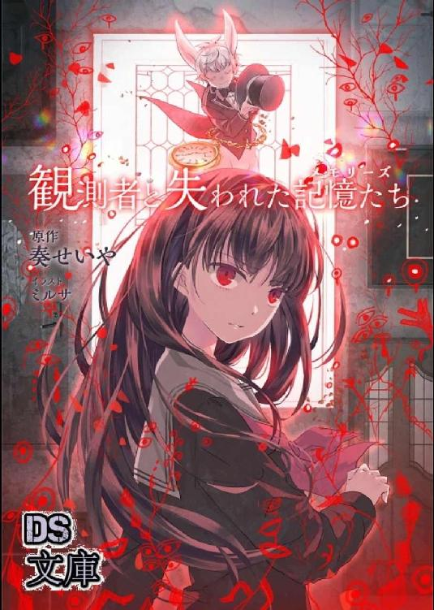
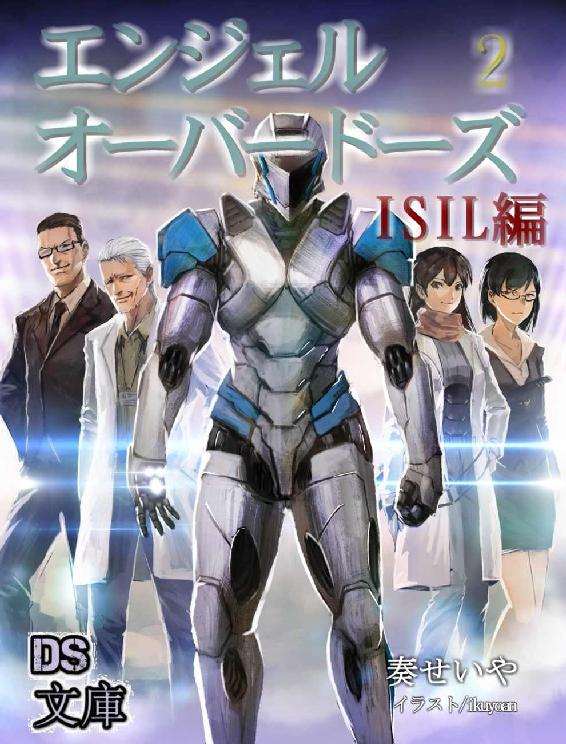

| 天下界の無信仰者（イレギュラー） 8巻 慈愛連立編 | |
| 奏せいや | |
| (2019) | |
天下界の無信仰者 八巻
---------------------------------------------------------------------------------------------------------------------------
奏 せいや


第一章 出会い
エリヤが謹慎処分を受けてから数日後、エリヤは街をぶらぶらと歩いていた。まだ昼間の時間だが仕事はない。それもそのはず、今は絶賛謹慎中だ。家にいるのも落ち着かないので行き先もなく外に出てきたのだ。
あれから何日も経ったが気分は暗いままだ。自分のせいで教皇に迷惑をかけよかれとしたことが裏目になったことが今でも引っかかり胸が重い。
「はあ〜」
陰気満々なオーラが全身から漂う。
と思えば、今度は急に空に叫んだ。
「やっちまったぁー！」
道を歩く人々が何事かと振り返る。しかしそんなことお構いなしでエリヤは頭を抱え「うおおお！」と体を捻った。どう見ても怪しいダンスか奇行にしか見えない。要するに危ない人という意味だ。
「そりゃあさ？ 俺だって分かってたよ？ やり方がまずいってことくらい。でもこのままじゃ本気でやばいのは確かなんだからそれを変えようと必死にがんばったんじゃねえか。そりゃあ、相談はしてなかったけど......。でも、あ、いや、くそ」
主張して反論してそれに反論しようとしたところで諦めた。駄目だ、どう考えても自分が悪い。神官庁の連中の判断は早すぎると思うが先走ったのは自分も同じだ。
エリヤは奇怪なダンスを止めうなだれた。どれだけ頭を悩ませても後悔先に立たず。時間を無駄にするだけだ。
「これからどうするかなぁ......」
道の真ん中で途方に暮れる。これからどうすればいいのか分からず街に取り残された気分だ。
時間だけを持て余し自信まで失った。家にはいたくない。シルフィアは優しいがそれが逆に痛いしエノクの無視を貫く姿勢は素直に辛い。要するにどんな態度をされてもあそこは苦しい場所になってしまった。外に出たものの行く宛もない。
と、そんな時だった。ぼーとしていたエリヤの視界にある人物が目に入った。全身を灰色の毛布でくるみ頭も被っている。俯いているため顔は見えず身長は百七十センチほど。性別までは分からずひっそりと街を歩いていた。
それだけなら特に気にも留めなかったのだが、その人物は時折顔を上げると周囲をきょろきょろと見渡しては俯いて歩いていく。人とすれ違いになるときは慌てるように小走りで離れていく。目的があって歩いているようには見えない。ただぶらぶらと、周りを警戒しながら歩いている。
（怪しい）
そう思ってエリヤはその人物を観察した。はじめは周囲を警戒するために周りを見ていたと思っていたがどうもそれだけではないらしく、その人は時折足を止めると談笑している母親と小さな子供を見ていたり、仲むつまじく歩く恋人を見たり、花屋の女性と老婆のお客さんが笑顔で話しているのを見たりしていた。理由は分からないが気になるようだ。けれど自分の近くに人が近づくと急いで離れていく。
（怪しい！）
まさか、人生に希望を持てなくなった若者が通り魔でもしようとしているのでは？ などとよからぬ考えが頭を過ぎる。考え過ぎか？ でもそうでなければなぜ顔を隠すのか。
どうする？ 止めるか？ エリヤは考えた。
（いや、俺はもう聖騎士でもなんでもないんだ。職務停止中なんだしわざわざ追いかけることもないか）
そもそもエリヤは謹慎中だ。そんなことをする義務もなければ必要もない。ここにいるのは人よりも力が強いだけの通りすがりだ。
エリヤは見なかったことにして踵を返した。
「うわーん！」
すると背後から声が聞こえてきた。なにごとかと振り返ってみると男の子が地面に座り込み泣いているではないか。しかもその正面にはフードの怪しい者が立っている！
「おいおいおいおーい！」
（さっそくかよ！）
まさか本当にしでかしてくれるとは。さすがに目の前で起こされて無視はできない。しかも自分よりも弱い子供を狙うとは卑怯なやつだ、これは絶対に悪者に違いない！
「そこのお前、ちょっと待った！」
「え」
エリヤは急いで駆けつけフードの前に立つ。
「白昼堂々路上で児童に通り魔とはふてえ野郎だ、逮捕する！」
「ちょっと待ってください！」
エリヤはすぐにでもこの現行犯を捕まえようとするが怪しい人物はフードを脱ぎ隠れていた顔が露わになった。
（女？）
フードを脱いだのは女性だった。それもかなりの美形だ。白い長髪が脱いだ拍子でさらりと舞う。整った鼻筋に美しい双眸はブルーサファイアのような瞳をしている。
予想外の美女にエリヤはいったん唖然となるがすぐに気を引き締めた。こいつは凶悪犯だ間違いない。
「この子に危害を加えようとしていただろう、お前は逮捕する！ フードなんて被って怪しいやつめ」
「だから待ってください、それに私は怪しい者ではありません」
「怪しくないなら名前を言ってもらおうか」
「それは......」
とたん女性が口ごもる。言いにくいのか苦い表情で視線を逸らす。
「ほらなやっぱり。お前を逮捕する！」
「それは誤解です！ 私はただ転んだその子を助けようとしただけなんです！」
「怪しい奴はみんなそう言うんだ」
「どういうことですか！？」
彼女は反論するが聞く耳は持たない。なぜならこいつは犯罪者だからだ。
「待ってください、ならこの子から直接話を聞いてください」
彼女が指さす。そこにいた男の子は泣き止みエリヤに近づいてきた。
「あの、実は------」
「もう大丈夫だ、君が泣く必要はなくなった。ここは危険だからすぐに離れるんだ」
「いや、だからその人は」
「早く安全な場所に行くんだ！」
「その人は僕を助けようとしてくれたんですよ！」
「君の言ってることはよく聞こえん」
「なんで！？」
「ここは危険だから離れてろ、ブチ殺すぞ！」
「ひええええ！」
エリヤの脅迫まがいの注意に男の子は逃げていった。
「観念しろ悪者め！」
「あなたが悪者なんじゃないですか！？」
エリヤは話を聞いてくれません。
「とりあえずお前は近くの交番まで来てもらう。話はそこで聞いてやるよ」
そう言ってエリヤは彼女の腕を掴んだ。
「放してください！」
「放さん」
彼女はエリヤの手から離れようと必死にもがいている。しかしがっしり握られたエリヤの手はびくともしない。
「止めてください、人を呼びますよ！？」
「俺が変質者みたいなこと言うんじゃねえよ！」
「どうして放してくれないんですか！？」
「お前に容疑がかかっているからだ。おとなしくついて来い」
「どうしても連れていく気ですね。まさか！？」
「ん？」
と、そこで女性の表情が変わった。今までおとしやかな雰囲気だったのが急に険しくなる。
「こうまで強引なのは......貴様、ミカエルの追っ手だな？ 私を捜しにきたのか？」
「はあ？ なんだそりゃ？」
いきなり意味不明なことを言われる。どういうことだ。
エリヤは困惑するが、そのとき彼女の力が急に上がった。
（なに？）
今までは力を抑えていたのか。だがそれで放すエリヤの握力じゃない。
すると今度は彼女の腕から炎が吹き出した！
「うをおお！」
たまらず手を放す。なんだなんだと思いながらもとりあえず手のひらにフーフー息をかける。熱い。
そんな中、真剣な雰囲気となった彼女は戦意を向けてエリヤを睨んできた。
「そうはいかない。連れて帰るというのなら、ここでお前を倒す！」
そして、彼女は光の中から剣を出現させた。装飾の施された剣は彼女専用の一点物だと分かる。
「おいおいおい！」
本当にただ者ではない。いったいなんなのか？ とはいえむこうはすでにやる気満々、剣を向けてきている。
「なにもんだてめえ、わけの分からないこと言い出したかと思えば火炎放射に抜刀だと？ 不審者じゃなくて危険人物かよ」
「危険人物とか言うな！ 私は......！」
彼女は大声で否定する。その後再び苦しそうな顔になり視線を地面に落としてしまった。
「なにか訳ありみたいだな。とりあえず話は別の場所で聞くから。なにか困ってるなら力になってやるよ」
「......力になる？」
エリヤの言葉に他意はなかった。だが、彼女の語気は凄みを増していく。
「無理よ。これは、私にしかできない、私がしなくてはならないことだもの」
声には寂しさと罪悪感のようなものが混ざっていた。
「二千年前の贖罪。それを果たすまで、私は戻るわけにはいかない」
「二千年？」
訳が分からない。いったい彼女はなにを言っている？ しかし嘘とも思えなかった。それほどまで彼女の言葉は真剣だった。
「倒す前に言っておく。すまない。お前に恨みはないがここで倒れてもらう」
女性はそう言うと全身に炎を纏った。熱風にローブが揺れる。揺れる前髪の奥で青い視線がエリヤを貫いていた。
「おいおい、言ってくれるぜ。知らないようだから教えてやる」
倒すと言われてはエリヤも黙っていない。どれほどの信仰者か知らないがエリヤも強さには自信がある。
「教皇軍聖騎士隊所属、かっこ元かっこ閉じる十三位のエリヤだ。てめえが誰だか知らないがこの俺様を倒すって？」
聖騎士の称号は伊達ではない。騎士としての名誉はないが強さなら誰しもが認める最強の騎士だ。
「その通りだ」
そのエリヤを前にして彼女は言いのけた。倒すと。最も強いと名高い聖騎士をいったいだれが倒せるというのか。
その名を彼女は言った。
「ウリエルの名にかけて、お前は倒す！」
その名もウリエル。美しく、可憐で、そして壮烈に。炎をまとう白髪の剣士は剣を構えた。
「お前、ウリエルって名前なのか」
「しまった！」
エリヤの指摘にウリエルが驚いている。その後悔しそうに睨んできた。
「くそ、高度な戦術を使うのか......！」
「そんなん初めて言われたわ」
褒められているのだろうがぜんぜん嬉しくない。
「とりあえず、えーと、ウリエルさん？ ちょっと落ち着いてくれる？ 俺はあんたに危害を加えるつもりなんてないんだけど？」
「そう言って私を騙すつもりだろう。誰の入れ知恵だ、ミカエルがそうしろと言ったのか？」
「誰だよそれ！ いいからその剣をしまえ。さもないとこっちだって」
そう言いながらエリヤは背中に手を伸ばす。向こうがその気ならこっちだってやるまでだ。それで大剣を掴もうとするのだが、そこで気がついた。いつもならあるはずの大剣の感触がない。そういえば先日教皇宮殿に置いてきたばかりだ。
「くっそ......」
後悔後に立たずだ。
「お前に恨みはないが、ここで倒れろ！」
ウリエルが剣を振るってくる。
「うをおお！」
それを慌てて回避した。
「ちょっと待て待て待て！ なんでこんなことになったんだ？ 俺がなにをしたっていうんだクソ！」
よかれと思ってやってみればこの始末だ、嫌になる。どうしていつもいつもこんなことになるのか。
「お前なにか勘違いしてないか？ とぼけるとかじゃなくて、この状況をはっきりと認識してないのはお前の方だからな！」
「聞く耳を持たないお前の方だろう！」
「なに？」
「子供の言うことを素直に聞いていればこんなことにはなっていなかっただろう！」
「なに！？」
「もういい！」
ウリエルは剣を宙に一閃し怒りをぶつける。
「しかし私は寛大だ、おとなしく退くのなら見逃してやる」
「お気遣いどうも、クソッタレ。お前は絶対連行してやるからな」
「ならばここで倒れろ！」
ウリエルが剣を突き出す。突進とともに放たれる剣先を回避し次々と振るわれる剣を右に左にとかわしていく。
その剣筋はエノクに通じるものがある。流麗でかつ力強い、真面目さを感じさせる剣の振り方だ。
「ちっ」
いつまでもかわしきれない。
「ふん！」
エリヤは拳を放ちウリエルは表情を変え刀身で受け止めた。
「く！」
勢いにウリエルの体が後退していく。両足が地面に跡をつけながら滑り数メートルのところでようやく止まった。
エリヤの攻撃を受け実力を知ったウリエルの目つきがきつくなる。
「なるほど、虚勢ではないということか」
「降参するか？ 降参だろ？ 降参しとけ、俺様に負ける前にさっさと降参しろ」
「ムカつく男だな貴様は！」
ウリエルは剣を振るいズカズカと歩いてくる。降参どころかさらにやる気を増している。エリヤもボクシングポーズで応戦する気満々だ。
再び戦いが始まる。
そんな時だった。
「待ちなさーい！」
二人を呼び止める声が聞こえてきた。見ればさきほど逃げ出した男の子が言ったのか、衛兵が走ってきていた。
「騒ぎを起こしているというのはあなたたちだね？ いったいなにが原因だね？」
衛兵の男性が聞いてくる。喧嘩をしている二人を仲裁しようといぶかしむ表情だ。
エリヤは答えるためウリエルを指さした。
「「こいつだ！」」
「？」
しかし指を指してきたのはウリエルも同じだった。
「なに！？」
「む」
お互い犯人扱いされ苛つき衛兵は小首を傾げている。
「「違う、こいつだ！」」
「？？」
それでもう一度言うのだがまたも重なった。
「お前ふざけんなよ！」
「それはこっちの台詞だ！ 私はただ助けようとしただけなのに------」
一向に非を認めようとしない相手にエリヤもウリエルも口論に熱が入る。衛兵そっちのけで言い合っていた。
そこへ衛兵が割って入る。
「分かった分かった、とりあえず二人とも連行しますね」
「「なに！？」」
その一言に二人同時に振り返った。
「おい、それは待てよ。謹慎中なのにそんなことされたらマジでやばいって！」
「それはあなたの問題でしょう」
「私は行くわけにはいかないんです！」
「それもあなたの問題でしょう」
衛兵の冷たい事務的対応が刺さる。
このままではやばい。エリヤの頭の中を嫌な想像が駆けめぐる。主にミルフィアの説教やエノクの冷たい態度が。
「くそ！ おい、こっちに逃げるぞ！」
それだけはなんとしても避けるべく、エリヤはウリエルの手を掴むと走り出した。
「なっ、ちょっと！」
「おい、逃げるな！」
衛兵が追いかけてくる。エリヤはウリエルを引きながらスタコラサッサと必死に逃げ切るのだった。
＊
それから十数分後。衛兵からなんとか逃げ切り二人は路地裏に来ていた。壁に背もたれ荒い息を吐く。
「まったく、なんて日だ......」
エリヤの口から愚痴がこぼれる。
「それはこっちの台詞だ」
ウリエルはしゃがみながら休んでいたが息が落ち着くと立ち上がった。
「それで、私をどうするつもりだ？ まだ捕まえる気か？」
「それなんだけどな、どうすっかな、俺まで捕まるのは嫌だし」
「真面目なのかいい加減なのか分からない男だな」
困った表情をするエリヤをウリエルは見つめる。なんともつかみ所がない男だ。
「お前がどういうつもりだろうが私に逮捕される理由はない。転んだ男の子に手を貸そうとしただけだ」
「なんだ、そうだったのか？ ならもっと早くに言えよ」
「何度も言った！」
頭に来る。ウリエルは苛立ちが収まらないものの諦めたように息を吐いた。
「はあ。もういい、誤解が解けたなら私は行く」
「おい」
ウリエルは路地裏から外へ出た。うんざりとした様子だがエリヤは追いかけた。
「なぜついてくる？」
ウリエルが胡乱な目で見てくる。
「いや、ほら、なんか迷惑かけたみたいだからさ。悪かったよ。謝る」
まさか人助けしようとしていたのを思いこみで逮捕しようとしていたとは。失礼だし申し訳ない。謝らないわけにはいかないだろう。それでエリヤは素直に謝った。
「ふぅー」
「？」
エリヤの謝罪を聞いて分かってくれたのか、ウリエルは胸の中にある重荷を下ろすように息を吐いた。次に呆れたような、けれど小さく笑いエリヤを見上げる。
「悪いやつではないんだな」
苛立ちはなくなり清々しい声だった。どうやら許してくれたらしい。エリヤはホッとするが複雑そうに頭を掻く。
「そうだといいんだがな」
「自信がないのか？」
聞かれたもののなんと答えればいいのか困る。エリヤ自身自分が立派ではないという自覚はあるがかといって悪者だというつもりもない。いい加減な部分があっても大切な芯だけはまっすぐに生きてきたつもりだ。
ただし、それが果たして正しいことだったのか。自信があるとはなかなか言えなかった。
「自分が正しいと思ったことでも本当は間違いかもしれない。そういうのを最近経験してね。今回もやっちまったし」
これが正しいんだと勢いづいても失敗ばかり。妹や弟からの視線も痛くなるわけだ。
「......そうか」
「ん？」
エリヤの話を聞いていた彼女だが雰囲気がいつの間にか変わっていた。ウリエルの表情はどこか寂し気で静かな空気だった。
「私も、かつてそんな経験をした。これが正しいと信じ努力してきたが、後になってそれがひどく矛盾したことだと気がついた。なにを信じていいのか分からなくなり自分を見失ったよ」
さきほどは炎のように燃えていた青い瞳に翳りが見える。いったい彼女になにがあったのか。当然エリヤには分からない。
「今はどうなんだ？」
だから聞いた。けれどそれは過去のことではなく今のことだった。彼女がなにをしてなにを間違えたのか。それは知らないがそれよりも今の彼女のことが気になった。
「今は......旅をしている。どこに行く宛もなく歩き続けるだけの。そこで自分にできることをしている。ささいなことばかりだが、人の役に立つことをして。それが今の私の生き方だ」
「どうしてそんなこと」
「......贖罪さ」
「贖罪？」
不穏な言葉が聞こえる。彼女が犯した間違いというのはそれほどまで大きいものなのだろうか。
そんな風には見えない。フードで顔を隠していた時ならともかく、こうして話をしていて分かる。
彼女は悪い人じゃない。そもそも悪い人は後悔なんてしない、贖罪なんて求めたりしない。エリヤはそう思うが、けれど彼女は悲しそうに言った。
「私は、かつて大きな罪を犯してしまったから」
そういう時、彼女の表情は辛そうだった。
彼女が犯した罪というものは今も彼女を苦しめている。ずっと許されることなく、一人っきりの旅の中彼女を責め続けるのだ、他ならぬ自分自身が。
「その、罪滅ぼし、かな」
それが今の彼女。ウリエルという、贖罪を求める女性だった。
「そうか。でもそんな風には見えないけどな」
「え」
ウリエルは深刻そうに話すが、そんな彼女にエリヤはあっけらかんに言った。ウリエルが顔を上げる。エリヤは小さく笑ってみせた。
「お前が罪人になんて見えないって話さ」
転んだ少年に手を貸そうなんてする罪人なんているわけがない。彼女には困っている人を助けようという優しさがある。だからエリヤは思ったことを素直に言えた。
「......フッ」
そんなエリヤの答えにウリエルは笑ってくれた。
「お前も、思いこみが激しいはた迷惑みたいだからな」
「お前なあ！」
ウリエルが口元に手を当てクスクスと笑っている。
「だからそれはさっき謝っただろ〜！」
誤解は解けた。むしろ二人は打ち解け自然に会話ができる仲にまでなっていた。
だが、そこへ足音が混ざる。
「ん？」
エリヤが振り向く。そこには鎧を被った衛兵が五人、無言で並んでいた。
「おい、しつこいぞお前ら」
きっとさっきの衛兵が仲間を呼んだのだろう。エリヤはやれやれと思いながらも近づいていく。
しかしウリエルは違った。目つきが鋭さを増す。この衛兵、さっきの男性とは雰囲気がまるで違う。言葉を一切話さない空気は殺伐とし、彼らが纏う雰囲気はまるで戦場に立つ兵士のようだ。話す気どころか捕まえるつもりもない。
そんな、生半可なものではない。
「仕事熱心なのはいいけどさ------」
「エリヤ、待て。こいつら、さきほどの衛兵とは違う！」
「ああ？ なに言ってんだ、衛兵に違うもなにも------」
エリヤが振り返りウリエルを見る。その時だった。
衛兵の一人が剣を抜き、エリヤの背中を切りつけてきたのだ。
「うをおおお！」
それを察しエリヤは寸前のところで回避した。危なかった。もう少しで本当に斬られていた。
「おいぃいい！ いきなり切りかかってくるとかやりすぎだろ！ 俺がなにしたっていうんだよ！ 謹慎中なのに外に出てみただけじゃねえか。それともお前ら酒場の関係者か？ ちょっと待ってろよ貯まったツケは必ず返すって」
謝罪がしたいのか言い訳がしたいのかよく分からない。
そんなエリヤを別の衛兵が襲ってきた！
「おわあああ！ 分かった！ 分かったって！ 今週中には返すよ！」
「エリヤ構えろ！ こいつら、衛兵じゃない！」
衛兵が取るような行動ではない。彼らの攻撃には躊躇いが一切ない。非情な兵士、もしくはそういう風に教育されている諜報員のようだ。
ウリエルの警告にエリヤが振り向く。
「知ってるよ、酒場の店主が雇った殺し屋だろ？ 俺が金を払わないから殺しに来たんだ」
「違うわ！」
けれどぜんぜん伝わってない。
「マジ？ 返さなくていいの？」
「それは払え！」
ウリエルは剣を取り出し構えた。五人を睨みながらエリヤに声をかける。
「お前は逃げろ！ こいつらの狙いは私だ、お前だけなら追っては来ない」
「どういうことだよ？」
分からない。どうして彼女が狙われなければならない？ しかもこんな連中に。
エリヤは唖然となるが敵は止まらない。狙いをウリエルに移し切りかかってきた。それをウリエルも負けじと剣ではじき返す。
「行け、エリヤ！」
ウリエルはもうエリヤを見ていなかった。襲いかかる衛兵の姿をした何者かと戦っている。どれも手強い。やはり衛兵ではなく特殊な訓練を受けた者たちばかりだ。
ウリエルが一人とつばぜり合いを行う。その隙にもう一人が背中へと剣を突き出した。
「くっ！」
ウリエルの表情が歪む。
「うおりゃー！」
その一人をエリヤがアッパーで吹き飛ばした。殴られた男は十数メートルも頭上に浮かんだ後地面に激突した。
「お前！」
ウリエルが叫ぶ。逃げろと言ったのにエリヤは逃げなかった。それどころか参加までしてきた。
「なぜ逃げなかった？ お前まで巻き込まれるぞ！」
自分の問題に人を巻き込むつもりなんてなかった。だからウリエルは言ったのに、この男はそんな善意すら聞きやしない。
今だって、ウリエルの苦情など右から左に聞き流し残りの四人に正面を向けた。
「この動き、てめえらデバッカー部隊だな。誇りのないその太刀筋見れば一発で分かる」
彼らの連携には隙がない。一人が相手を押さえ、その間に背後からとどめを刺すやり方は実に合理的だ。正々堂々なんて非効率的な戦い方なんてしない。彼らは騎士ではなく、兵士だ。
彼らは無駄を行わない。だが、そんな彼らが口を開いた。
「そういうお前は聖騎士エリヤだな」
バレているなら隠す必要もない。油断のない、凄みのある声で男は話しかけてきた。
それでウリエルがエリヤの横にやってきた。
「すごいな、分かるのか」
「いや、なんとなくだったんだけど」
デバッカー部隊の男が続ける。
「そこを退け、聖騎士エリヤ。これは我々に下った正式な任務だ。邪魔立てするな」
デバッカー部隊といえば汚れ役専門の特殊部隊。彼らのこなす任務は秘密事項の塊だ。いわば国の危険な裏側、関わっていいことなどない。
しかしエリヤは退かなかった。デバッカー部隊？ この国の暗部？ そんなもの関係ない。
「お前等に言っておきたいことがある」
エリヤは話す男に指を突きつけ、宣誓するかのような大声で言い切った。
「それ襲う前に言えないのか！ 人を斬ろうとしておいて構うなだと？ 構うに決まってるだろ腹立つ！ お前ら全員ボコボコにしてやるからな！」
エリヤは構えた。ボクシングポーズを取りウリエルも剣を構える。
デバッカー部隊も剣先を二人に向けていた。いつ戦いが始まってもおかしくない。
しかし男の一人が片手を上げた。制止の合図だ。それを見て男たちは剣をしまい即座に姿を消していった。
「なんだ逃げるのか！」
エリヤは叫ぶがすでに敵の姿はなくここにはエリヤとウリエルしかいない。敵も教会と対立する気まではないのか、それとも聖騎士エリヤでは分が悪いと判断したのだろう。
敵が撤退したのを見てウリエルは静かに剣を消した。その後申し訳なさそうな顔を地面に向ける。
「すまないな、お前を巻き込んだ」
エリヤはウリエルに近づいた。
「お前、こんな連中に狙われるとかなにしたんだよ」
「............」
気になる。そもそもデバッカー部隊に狙われるなど相当なことだ。いったいなにをすればこんなことになるのか。
「............」
ウリエルは答えなかった。それも当然か。相当なことをしたのだから言えるはずがない。小さな口は動くことなく沈黙を守っている。反面顔は辛そうに暗くなるばかりだ。
「やっぱりいい、言うな」
「聞かないのか？」
ウリエルがそっと見上げる。
「言いたくないなら言わなくていい。そこまで聞きたいとは思わねえよ」
そんな顔をされてしまっては聞けるものまで聞けやしない。気になるのは確かだが嫌な思いをさせてまで知りたいとは思わなかった。
「そうか。......エリヤは、いいやつだな」
そうつぶやくウリエルはエリヤの気遣いに感謝していた。晴れた笑顔とまではいかないが、その優しさに気を楽にしたようだった。
いいやつだな。その言葉にエリヤは複雑な思いを抱きながら、頭上に広がる青空を仰ぐ。
「そう願ってるよ」
果たしてなにが正しいのか、なにが間違っているのか。いいやつとはなんなのか。それすら見失いそうだ。
エリヤは視線を戻しウリエルを見た。
「とりあえず場所を変えるぞ」
「しかしどこへ」
「ついてこい。隠れるならもってこいの場所がある」
またさっきの連中に狙われてはたまったものじゃない。エリヤはウリエルをその場所へと案内していった。
＊
街の外れ、木々が生い茂る今は使われなくなった山道を歩いていく。道は砂利が敷き詰められているが手入れをされなくなって久しいのか小石の間からは雑草がいくつも生えている。道の両側から伸びた小枝が邪魔くさい。エリヤはやっかいそうに押し退け前を進んでいくのを後ろにいるウリエルが心配そうに見つめていた。
「なあエリヤ、本当にこっちで合っているのか？」
歩いていたはずの道はすでに道とも思えない有様だ。
「当たり前だ、俺を信じろ」
「しかし、この先に休める場所があるというのか？」
「俺が夜遅くまで飲んだ時はよくこの場所を使ってたんだよ」
「なぜ素直に家に帰らない」
「止めてくれ、妹に殺される」
（こいつは命がけで酒を飲むのか）
二人の間で他愛のない会話が続く。それからしばらくして木々のカーテンを抜けると一気に開けた場所に出た。
「ここだよ」
「これは」
そこには小さな教会が立っていた。そこだけが木の傘に隠れることなく太陽の光に照らされている。
まるで忘れ去れたかのようなそれは老朽化が激しい。天井には大きな穴が開き木製の壁にはツルが走っている。人々から捨てられ森と一体化したた神の家だった。
「見た目はブサイクだが休むだけなら十分だ。慣れればうまくつき合えるさ」
そう言いながらおもむろに教会の扉を開ける。ぎぎぎと錆び付く金具が音を立てエリヤは中へと入っていった。ウリエルは辺りを見渡しながら慎重に歩く。
中は参拝者が座るためのイスが並び正面にはステンドグラスがはめ込まれた壁がある。椅子はいくつか崩れているが使えるものもありそうだ。穴の開いた天井から差し込む光がステンドグラスに降り注いでいた。
「しばらくはここで身を隠せばいいさ」
エリヤは手近な椅子に腰を下ろした。ウリエルははじめこそ心配そうだったが見ているうちに落ち着いていき、足を止めステンドグラスを見上げると表情を穏やかにさせていた。
「落ち着いていて、いい場所だな」
「だろ？」
ウリエルはステンドグラスを見つめている。ひび割れていているそれは素敵とは言い難いが、それでも損なわない輝きがある。
それを見上げる彼女の姿は、まるで神聖な存在のようだった。
しばしその横顔に見入る。別に惚れたというわけではない。ただ彼女には人を引きつける力があった。儚い雰囲気だからだろうか、その美貌と合わさり繊細な美しさがあったのだ。
少しして、ステンドガラスを見終わったウリエルが振り向いた。
「エリヤ、なぜお前はこうまでよくしてくれる？ 慈愛連立だからか？」
「なんでかな」
エリヤは目を周囲に走らせた。考えてみるがこれといった理由は思いつかない。
「特に考えや思想があるから、ってわけじゃないんだよ。ただ、そうしたいと思ったからかな。だからなのか分からないけど考えなしだとよく怒られる」
思わず苦笑する。振り返れば人には褒められたことよりも叱られた方が多い人生だった。
「確かに、見ず知らずの追われている者を助けるなんて危ない行いだな」
「............」
ムスっと表情が変わる。なぜ自分の欠点というのは自分で言う分にはいいのに人から言われるとイラッとくるのか。
「だけど」
そこで、ウリエルは笑った。
「私は感謝しているよ。ありがとうな、エリヤ」
天井から差し込む光に白い髪を照らされて、笑うウリエルはまるで少女のようだった。可憐で、無垢で、愛らしい。とても人から責められるような罪があるとは思えない。
彼女の笑顔は、ほんとうにきれいだった。
「なあ」
だからか、エリヤは声をかけていた。
「なんか困ってるなら力貸すぜ？ 訳ありなんだろ？ なにしたか知らねえし聞く気もねえけどよ、なんかほっとけねえよ」
「ふ、なんだそれは。新手のナンパか？」
「期待したか？」
エリヤは小さく笑い両腕を広げる。
「馬鹿は口だけにしとけ」
それをウリエルも小さく笑って否定した。
ウリエルはステンドガラスに向き直る。幻想的な輝きに目を向け、その笑顔を寂しく染めあげた。
「お前は、後悔したことはあるか？ 人生をかけて償いたい。もしくは、人生をやり直したいと思うほどの後悔を」
「しょっしゅうさ」
「ふざけるな」
背後から聞こえてくるエリヤのちゃちに一旦嘆息してからウリエルは再び前を向く。
「どうなんだ？」
緊迫した雰囲気はない。ただ、その質問が真剣味を帯びていることは分かる。
雰囲気が明るくない。それだけ彼女のまとう空気が引き締まっている証拠だ。
「うーん、どうだろうな」
聞かれエリヤは考える。が、すぐには浮かばなかった。つい最近考えなしに行動しひどく後悔したばかりだが人生をやり直したいほどか？ と聞かれればそこまでではない。
「なあ、それって死にたくなるほどのことなのか？」
「死、か」
エリヤからの質問に今度はウリエルが唸る番だった。
「そうだな。そう思ったことはないが、それほどのことを私はしたのだと思う」
「ならねえわ」
ウリエルは過去を述懐する。そこには積もり積もった重苦しい思いがあったが、エリヤの陽気な声に暗い雰囲気はかき消された。
「死んだらなにもできねえじゃねえか。酒も飲めねえ。メシも食えねえ。楽しくねえ」
「お前は気楽だな」
過去の罪に悲観的なウリエルとお気楽なエリヤでは対照的だ。太陽と月を対比したような二人だった。
「お前も生きてるから趣味の贖罪ができるんじゃねえのかよ？」
「贖罪は趣味じゃない。責任なんだ」
「責任のために生きてるのか？」
「............」
エリヤの質問に寂しそうな笑みで黙秘する。
「いつからだよ」
「ずっと昔から。気が遠くなるほどな」
小さな声でささやかれた言葉は長い年月を感じさせるものだった。
いったい、どれだけ長い間そうしてきたのだろう。見た目は若いが費やしてきた時間はそうではないだろう。
数年？ 十年？
いや、もしかしたら。
その人生は、二千年も長い旅をしてきたのかもしれない。
彼女のささやきは、それほどまでに重く、枯れたものだった。
「真面目なやつだ。そんなに長く責任負って人助けてよ、いったいいつ終わるんだよ？」
人生の意義を楽しむ時間と決めているエリヤには彼女の生き方は分からない。いったいどんな気持ちで今までを生きてきたのか。そんなものは時間の無駄使いにすら思える。後悔から人を助けるというが、しかしいつまでそんな生き方をすれば気が済むのか。
その答えを、ウリエルは切ない響きで、同時にきっぱりと言い切った。
「......終わりなんてないさ」
「なに？」
その言葉にエリヤは彼女の後ろ姿に目を戻した。
彼女は割れたステンドグラスを見上げたままだった。
「私のせいで、多くの人が亡くなった。多くの幸せが失われた。私は、彼らのために生涯を尽くして償わないといけないんだ」
「おいおい」
それが当然のことのように彼女は言う。私は罪を犯した。だから償う。言うのは簡単だ。やるのは難しい。それを彼女は実行している。すごいことだが、エリヤにはそれが気になった。
終わらない贖罪の道。
終わらないのなら、彼女はずっと救われないのか？
「なあ、お前それ本気で言ってるのかよ？」
「当然だ」
エリヤからの質問にも背中越しに言い切る。自分が誰かのために手を差し伸べ続けること。それが自分の人生なんだと決めつけている。
それが気に入らなかった。
エリヤは、気づいた時には言っていた。
「お前、それ間違ってるぞ」
「なに？」
ウリエルは振り返る。表情は眉が真ん中に寄っている。
自分の生き方は自分で決めるものだ。ウリエルにはそれだけの理由がある。かつて自分がしてしまった行いを悔い、それを償うだけの理由がある。なにも伊達や酔狂でこんなことをしているわけではないのだ。
それを間違っていると決めつけられて、彼女もいい気はしない。
「勝手に決めつけるな、お前が私のなにを知っている」
声にも険が入る。やや不機嫌な彼女の目がエリヤを見た。
が、それでもエリヤはいつものエリヤだった。
「知らねえよ、知るわけねえだろまだ会って二時間だぞ。お前のスリーサイズも知らねえのに過去なんて知るわけねえだろ」
品のない表現にウリエルの目がさらに鋭くなる。それを見てエリヤもバツがが悪そうに片手を上げた後話し出した。
「でもな、これだけは言えるぜ」
顔は元に戻っている。真っ直ぐとウリエルを見る。その表情は、本気のものだった。
「許されないやつなんていない」
その言葉にウリエルは反論をしない。というよりも返事をすることすら躊躇った。それだけエリヤも真剣だったからだ。
「罪を犯したやつはもう笑っちゃダメだってか？ アホ言え。誰だって悪いことの一つや二つ、大小はあれどしてるじゃねえか。俺たちは許されないのか？ 過ちをしたのならそれを反省し、次に向かうことも出来ないのか？ そんなことあるわけねえだろ！」
「エリヤ......」
熱の入った声が壊れた教会を吹き抜けた。静かな森にエリヤの大声が響いた後、彼はおどけるように肩を持ち上げた。
「笑う権利っていうのは基本的人権だぜ？ お前が望むならな」
「私は」
大声から一転して柔らかい声になる。その声はウリエルを許そうとしていた。だがまだウリエルの中で引っかかりがあるらしく、表情と声は暗い。
「間違いなんて誰だってする。俺もする。でも、お前は悪いことをしようとしてるわけじゃない。償おうと懸命じゃねえか。俺よりは上等さ。俺なんて開き直ってる性悪だからよ」
エリヤからの自虐にウリエルはフッと笑った。
「最低だな」
「言うなよ」
それに合わせエリヤも笑う。言われて思うが確かに最低だ。
しかしそれはそれなので話を戻す。
「それでも、こんな俺でも世界をよくしたいと思ってる。お前だってできるさ、気が遠くなるほど人を助けて旅をしてきたんだろ？ そいつらはきっとこう思ってるぜ。あの人は今頃幸せだろうか？ ってな」
その言葉にウリエルは視線を下げた。
「お前のその考えは周りの期待を踏みにじってる。私は幸せになる価値がないなんて言う人間はな、人の価値を自分で決めようとする、根っこでは傲慢なんだよ」
「............」
エリヤはぶっきらぼうに言うが、不思議とその言葉には説得力があった。一つの筋に通った彼なりの考え、核のようなものが力強く言われている。
「他人がお前と同じことをしたとしたら？ お前はそいつがなにをしても許さないのか？ そいつはひどくないか？ こんなにも懸命にがんばってるじゃねえか」
自分に生きる価値がないという者は、他人の価値も自分で決める。生きる価値を定め自分にも適用している以上、それは他人にも当てはめる。他人に対してお前は生きる価値がないとする場合もあるということだ。
自分の勝手な価値観で。今は自分に向いているが、時と場合では他人に向くかもしれない。
それをエリヤは傲慢だと言ったのだ。人の価値を勝手に決めるなと。自分の価値を勝手に決めるなと。
エリヤの言葉にウリエルも考える。自分の行い、それを今一度省みた。かつてした自分の罪を。
それを、自分は許せるだろうか？ それとも傲慢なまでに永劫許さないとするのだろうか。
ウリエルはつぶやいた。
「......しかし」
ウリエルもエリヤの言わんとしていることは分かるのだ。ただ、分かったところですぐに切り替えられるものでもない。それだけに彼女が犯した罪は重い。
「よし！ じゃあこうしよう！」
すると、エリヤから陽気な声があがった。
「今すぐが無理だっていうなら期限を決めようぜ。自分を許せない刑期みたいなもんさ」
「刑期？」
「無期懲役もここまでさ。そろそろゴールを決めようぜ」
呆気にとられる。さっきからあれやこれやと勝手が多すぎる。こんな性格では周りにいる者たちはさぞや迷惑しているだろう。
でも、悪い気はしなかった。
その発言はぜんぶ、自分を思ってのものだったから。
「そうだ、キリよくあと百回人を助けたら自分を許すっていうのはどうだ？ 百回も助ければ十分だろ。半分でもいいくらいだ。とりあえず今から紹介する酒場でバイトしてよ、俺の借金を返すっているのはどうだ？」
「ふ、はっはっはっはっは！」
ついにウリエルは笑い出した。青空の見える天井に向かって、大笑を吐き出した。
自分の心配をしてくれるのは嬉しいが今の冗談はどうなんだ。優しいのか意地が悪いのか分からない。
「まったく。なにが傲慢だ。お前の方がよっぽど勝手だ」
「もう知ってるかと思ってたよ」
「ああ、今しがた理解した。お前は本当に最低なやつだよ」
表情にはまだ笑いの余韻が残っている。口元に手を当てている。その最中に思う。自分はまだ、こんな風に笑えることができるんだなと。
「言葉は乱暴で自分勝手で。だが、それがお前なりの優しさなんだと理解した。ありがとう、考えておくよ」
そう言うとウリエルは背中を見せエリヤから距離をとるように少しだけ前に歩いた。
「おい」
「エリヤ」
その背中を呼び止めようとするが、ウリエルは振り返った。
「これは私の生き方なんだ。お前なりの気遣いには感謝している。だが、どれを選ぶかは私に任せて欲しい」
彼女は言う。エリヤの心配も言葉もぜんぶ理解した上で。最後は自分で選ぶ。
そこには彼女の強い意思がある。ならばもうこれ以上言うことはない。なにより自分で選ぶことが一番重要だ。その選択は他人がとやかく言うことじゃない。
「そりゃそうだ」
彼女の決意を受け取るとエリヤは大きく両手を持ち上げた後、自分のふとももを叩いた。席から立ち上がり歩き出す。
「自分の生き方なら自分で決めなきゃな。じゃあ俺は行くわ。お前はここ使ってろ。明日の朝方にはなんか食えるもの持ってきてやるよ」
「エリヤ」
無理強いすることなくウリエルの意思を尊重して去っていく。その背中は大きく、こんなにも乱暴な男なのにその背は優しく見えた。
「すまないな」
扉から出て行く前、ウリエルは聞こえる音で声をかける。
その声が届くと、エリヤは「フッ」と笑い振り返ることなく片手を上げて出て行った。
扉が閉められる。ウリエルは一人残されると顔を正面に戻した。ひび割れたステンドグラスを見上げ、差し込む光に包まれる。
その中で、ウリエルはぽつりとつぶやいた。
「自分を許す、か」
さきほどエリヤに言われた言葉を思い出す。許されない人なんていない。笑うことはできると。
今までずっと罪を償うことだけ考えていた。自分の幸せなんて考えたこともなかった。まして笑うなんて。
そんなこと。
「考えたこともなかったな」
寂しそうに笑う。それは、あまりにも儚い願いだったから。自分が許される時はくるのだろうか。
ウリエルは光を見つめ続ける。
そこに、自分の救済を探すように。
第二章 変化
太陽が空に上り、朝日が地上を照らし始める。今日も一日の始まりだ。ヴァチカン孤児院ではシルフィアが朝食の準備をし始め次いでエノクが目を覚まし騎士の制服へと袖を通す。二人で朝食を済ませるとようやくエリヤが降りてきてシルフィアに怒られる。静かだった時間が途端に騒がしくなるというのが、ここヴァチカン孤児院の始まり方だった。生真面目な二人といい加減な兄という、なんとも悲しいドラマが始まりそうな家族だ。
が、最近になって変化が現れていた。
「おーい、今日はどっちのゴミ持って行けばいいんだ？」
「今日は燃えるゴミですよ兄さん！ あとちゃんとゴミネットの中に入れないと駄目ですからね！」
「それぐらい分かってるよ」
玄関口にエリヤが立つ。台所で食器を洗う妹からの指示にやれやれと頷き用意されていたゴミ袋を持つ。すでに制服にも着替えておりこれから出勤だ。
「エノク」
「ん？」
と、たまたま近くを通ったエノクにエリヤから話しかけてきた。
「剣筋が良くなってきたな。お前は力押しするタイプじゃない。もっと重心を意識して、体が前に出過ぎないように意識してみろ」
「あ、ああ......」
そう言うとエリヤは大きなゴミ袋を持ち直した。
「そんじゃ行ってくるわ。夕方には戻る」
「はーい。いってらっしゃい」
「......いってらっしゃい」
エリヤは玄関から出て行った。扉がバタンと閉じ、その扉をエノクは微妙な顔で見つめる。
扉が閉まった音を聞いてシルフィアもエプロンで手を拭きながら玄関を覗いてきた。
「行きましたね」
「行ったな」
二人してまじまじと兄が出て行った扉を見つめる。シルフィアはエノクに近づき横に立った。
「なにかあったんですか？ あのエリヤ兄さんが自らゴミを捨てに行くなんて不審過ぎます。最近は朝も早いですし。嬉しい変化ですが怪しすぎます」
「素直に喜べないのは今までの行いか」
シルフィアの言うとおりだ、本来なら喜ばしいことなのになぜか疑いの目で見てしまう。その残念ぷりに顔が下がる。
「あの人の行動原理は単純だ。そう複雑なものではないと思うが」
「たとえば？」
エリヤの行動は不自然だが、心当たりがないわけではない。あの人の動機はエノクの行ったとおり単純だ。
「さあ。新しい女でもできたんじゃないか？」
「女ァアアアア！？」
それにシルフィアが激しく反応してきた。火でも付いたかのような豹変っぷりだ。
「どこの女ですか、誰ですか私の兄さんに色目を使った女狐は！？ 許しませんよ兄さんに女なんて！」
「まてまて。落ち着けシルフィア。たとえばの話だ」
すごい反発ようだ。
彼女はなんというか、エリヤのこととなると必死になるというか、見境がない。
「まったく。兄さんに恋人ができるのがそんなに反対なのか？」
「反対です！」
鼻息が荒い。
「あんなにだらしのない兄さんにふさわしいのは私くらいなものです。はあ。私があと十五年、いや、十年でも早く生まれていれば妹ではなく妻になれたものをッ」
「ははは」
シルフィアは片手を握りしめ悔しそうにしている。それを見てエノクは笑った。子供の言うことだし微笑ましい場面だ。
「シルフィアは兄さんが好きなんだな」
「それはもう。手はかかりますが私たちの兄ですから」
手のかかる兄。それでいて大好きな兄。
それはかつてのエノクが抱いていた気持ちそのものだ。彼に憧れていて、追いつきたくて、そのためだけに努力してきた。
あの大きな背中を目指して、彼は剣を手に取った。
また、あの頃の二人に戻る時はくるのだろうか？
シルフィアの言葉を聞いてエノクの顔が笑顔のまま寂しそうになる。
それを見て誤解したのか、シルフィアが慌てて言ってきた。
「もちろんエノク兄さんのことも大好きですからね！ エノク兄さんのお嫁さんもいいですが、ただ、やはりエリヤ兄さんには私がついていないと」
「はっはっは。そうだな、兄さんとシルフィアはお似合いだよ」
エリヤに合う女性といったら彼くらい気が強く、なによりしっかりした人物でなければ。その点シルフィアなら合格だ。あのエリヤを完封できるのは彼女しかいない。しかし、二人の関係は夫婦というよりも母と息子に近い気もする。
「それで、兄さんはいつもどこに行っているんだ？ 謹慎中だろう」
「そういえば」
話が逸れたが問題はエリヤがなぜ変わったか、どこに行っているのかだ。謹慎直後は引きこもっていたというのに。
「あくまで噂なので真に受けていませんでしたが、聞けば町を歩いて困っている人を助けたり、そうでなければゴミ拾いなんかをしてるそうですよ？」
衝撃的な内容だった。これにはエノクも目を丸くした。
「兄さんが？」
「兄さんが」
あのルールは破るためにあるというのを地でいくエリヤがゴミ拾い。社会貢献など柄ではないだろうに。
摩訶不思議な現象に、エノクとシルフィアは再びエリヤが出て行った扉を見た。
「雪が降るんですか？」
「雷かもしれん」
二人の胸は晴れない。
それからしばらくして。
エリヤは廃棄された教会をめざし山道を歩いていた。木々が生い茂る緑濃い道を突き進み、開けた場所にある教会を目指す。
その顔はご機嫌だ。いつもなら鬱陶しい伸びすぎた枝もただ退かすだけで笑顔に支障はない。
今日はなかなかの収穫だ。その成果を報告することが今から楽しみだ。エリヤは教会にたどり着き扉を開けた。
「おーい、いるかー？」
ぎぎぎ、と錆び付いた金具が音を立てながら扉が開く。エリヤが声をかけた先、正面中央に飾られたステンドガラスの下に彼女はいた。
「よう」
エリヤに声を掛けられて、白の長髪をした女性、ウリエルは振り向いた。
「エリヤ」
ここにエリヤが現れたのが少しだけ意外そうだった。
「また来たのか」
エリヤにここを紹介してもらってから二週間ほどが経過していた。その間ウリエルはここを利用している。隠れ屋にするにはここはなかなかだ。だが身を隠している自分とは違いここにエリヤが来る理由はないはずだ。
だというのに、この男はちょくちょくと顔を出すようになっていた。
「またとはなんだよまたって。もともとここは俺の根城だったんだぞ。お前こそまだいたのか」
「ここは使い慣れると安らぐんでな」
「だろ？」
先客であるエリヤとしては彼女の言い分はよくわかる。むしろどこか誇らしい。
「そうだ！ それで聞いてくれよ、今日は大漁だぜ。絶対に俺が勝つ」
「またそれか」
そこで本題を思い出しエリヤがずかずかとウリエルに近づいていく。それでウリエルは呆れたように顔を横に振る。
この男がここに何度も顔を出す理由などないはずなのだが、その理由というのが実はあった。本人はそれを楽しんでいるようだがウリエルは乗り気じゃない。今も愉快そうなエリヤとは対照的にツンとしている。
「なんだ、自信がないのか？」
「自信とかじゃない、比べることになんの意味がある」
「俺が嬉しい」
「まったく」
話が通じない。というか、この男は自分の考えを通すことしかできない。その強引さに呆れを通り越して尊敬すら覚える。
「お前はなぜそうも勝手なんだ」
こんなこと、やろうとしてもそうはできない。
エリヤがウリエルと比べようとしていること。
それは、どちらが多く人を助けられたか、というものだった。
ウリエルが贖罪のために始めた人助けの旅。それに勝手に合わせ、それだけでなく競い合ってきたのだ。
ウリエルからすればいい迷惑だ。自分が自分のためにしていることなのに、それを他人にあれこれ干渉して欲しくない。これは自分の問題なのだ。
だというのに、この男には遠慮というものがない。
「いいだろ、細かいこと気にするな。じゃあ同時に言うぞ？ せっのー」
止めろと言ってもエリヤは止めないだろう。それに言わなければ言わなかったでなにを言い出すか。ウリエルは不承不承答えた。
「六人」
「五人」
同時に言われた数字は、エリヤが六でウリエルが五だった。
「っしゃー！」
エリヤが両腕を天井に向ける。その後腰を丸め前屈みになって喜んだ。
「よっしゃー！ 勝ったー！」
エリヤの大声が穴だらけの教会を吹き抜ける。それくらいの大声だった。
まるで子供のようにはしゃぐエリヤにウリエルが嫌そうに顔をしかめる。
「うるさい奴だなお前は」
「なんだ、悔しいか？ 悔しいのか？」
「うるさい」
そんなウリエルに追い打ちをかけるようにエリヤがドヤ顔で言い寄ってくる。うざい。
ウリエルもちょっと腹が立つ。これは勝ち負けじゃない。自分のけじめの問題だ。だというのに勝手に勝負にして自分を敗者にされたのだ。悔しいというよりも納得できない。
「そもそもな、なんだこれは。私よりも助けた数が多かったらなんなんだ」
「いいじゃねえかよ、目標があった方がやりがいに繋がるだろ？」
「こんな目標、繋がらん」
この男に勝ったところでなんの益もない。するだけ無駄だ。何度もいうがこれは勝負じゃない。自分の問題なのだ。
「第一、なぜお前は私に構う？ これとお前は関係ないことだろ」
だから言った。お前は無関係だと。意味がないと。外野がはしゃいだところで変わるものではないというのに。
それを聞いて、エリヤが答えた。
「関係ないことねえだろ、お前の百人チャレンジに俺の分も加算されるんだからよ」
その言葉に、視界からエリヤを追い出していた顔をそっと向けた。
エリヤは、明るい顔でウリエルを見つめていた。
「一人で頑張るよりよ、二人の方が早いだろうが」
それが、エリヤが人を助ける本当の理由だった。
ゴミ拾いなど間違ってもこの男がする柄じゃない。さきほど六人と答えたがその内訳だって一つはゴミ捨てで一つはエノクへのアドバイスだ。人助けにカウントするほどでもない。ただ、エリヤにとっては精一杯の人助けだ。
ほかの諸々もエリヤからしたらめんどくさいだけ。もしくは抵抗を覚えるか。どちらにしてもしたくてしてるわけじゃない。
それも全部、彼女のためだ。
自分で決めた百人助けたら贖罪の旅は終わりというルール。それを早く終わらせるためにエリヤは行動していた。
「だから、それになぜお前が関わってくる。これは私の問題だろう」
「なんか気になるんだよ」
それでウリエルは聞くが、エリヤは視線を教会の壁へと泳がした。崩れた木製のイスや壁の穴から見える外の草原。ぼうと眺めながら、エリヤは自身の思いを語っていく。
「お前は昔罪を犯したって言うけどよ、悪いやつがそれで人助けしようなんてするかよ。それ、絶対いいやつだろうが」
視線がさまよう。ただウリエルは見ない。彼女を見ながらこれを言うのはエリヤといえど気恥ずかしい。
「そんないいやつがよ、今日まで責任感じて一人ひっそり生きてきたんだ。知らなかったならともかく、知っちまったらほっとけねえよ」
それは、エリヤなりの優しさだった。
普段はがさつで、ちょっと乱暴で、強引で。
それでいて、優しいエリヤだった。
エリヤがウリエルに振り返る。
「お前だけに、辛い思いなんてさせねえよ。友達、だろ？」
気恥ずかしさを笑って誤魔化して。エリヤはおどけて見せた。
「お前がさ、その贖罪とやらを終えて、自由に生きる姿を見てみたい。それが本音さ。そう思ったらじっとしてられなくってよ」
それがエリヤの思いだった。お節介だというのは自覚している。でもほっとけない。いい人は報われるべきだと思ってる。彼女ならなおさらだ。
エリヤの告白を、ウリエルは静かに聞いていた。
「............」
それに、彼女ははじめなにも言えなかった。胸にわき上がる、熱いなにか。久しく感じたことのないこの衝動を、ぐっと飲み込んだ。
「フウー」
反動に息を吐く。まだ余熱が胸に残っている。それを気取られないようにウリエルは振り返り背中を見せた。
エリヤは自由奔放だ。自分の言いたいことを好き放題言ってくれる。そんなことを言われたら、いったいどんな顔をすればいいのか。そんな迷惑すらこの男は分かっていないだろう。
「まったく。お前は本当に」
だけど。
その顔が、少しだけ柔らかくなった。
「勝手な男だな」
＊
サン・ジアイ大聖堂。その白く塗られた廊下でガブリエルがつぶやいた。
「ルフィアの系譜とおもしき女性、そのそばにいるエリヤとウリエルが接触、か」
それはいよいよルフィアの系譜である可能性が出てきた出来事だった。まさかその相手がヘブンズ・ゲートの鍵であるウリエルと出会うとは偶然とは考えづらい。
二人の出会いはなにかしらの意味があるに違いない。
ガブリエルの前に立つラファエルも同じ考えだ。
「ますます信憑性が増してきたわね」
エリヤの妹シルフィアこそがルフィアの系譜であり、エリヤは世界的な流れを変えるほどの出来事を起こす。それはすなわち、三柱戦争の開幕。その可能性が高い。
まさかウリエルを探し出すという目標がこんな形で実現するとは思っていなかったガブリエルは神妙な顔つきだ。
「ルフィアの隣人はエリヤの方だったか」
可能性としてはエノクも十分にあり得た。だがウリエルと接触したエリヤの方が現状では妥当といえる。それがあの暴れん坊のエリヤであったとしてもだ。
「でも信じられない。あのエリヤがルフィアの隣人だって？ あのがさつな男が人理時代からの神秘だっていうの？」
彼女の言うとおりエリヤは神秘という柄じゃない。酒場で暴れるような男が神様など想像したくない。
「それは諸説あるな。ルフィアの系譜、ならびに隣人が世界に隠された神秘なのか。それとも世界に影響を与える人物にルフィアの系譜が現れるのか。前者ならばともかく後者ならお前の心配はなくなる。ルフィアの系譜の出現、それが意味する脅威は変わらんがな」
ガブリエルの説明にラファエルの表情が「まあそれなら」と落ち着きを取り戻す。
「それで、どうするの？」
問題はこれからだ。目下の課題であったウリエルは見つけた。それでどう動くのか。
「難しい局面だが、個人的には様子を見てみたい。二人が出会いなにをするのか、それが未来の見えない今、世界の行方を探る手がかりになるかもしれん」
「でも、同時に手遅れになるかもしれない、ってこと」
「ああ」
ガブリエルは慎重な表情だ。今彼女は迷宮の上に立っている。道筋は分からず、選択を誤れば床が抜けるが槍が降るか。
見極めなければならない。ガブリエルは気丈とした姿勢でラファエルを見る。
「すぐに会議だ。この件はその場で決めよう」
「そうね」
苦しい問題にラファエルの表情も晴れない。正しい答えなんて分からない。
だが、そこでガブリエルがつぶやいた。
「とはいえ」
正解なんて誰も分からない。だが、誰がなにをするのかを予測することならできる。
「ミカエルは、動くだろうな」
チャンスがあるなら手を伸ばす。ミカエルはそういう男だ。
＊
エリヤとウリエルが出会ってから一ヶ月近くが経っていた。はちゃめちゃな出会いとは反対に今でも関係は続いている。とはいえエリヤがちょっかいを出しているだけなのだが、そこにある優しさにウリエルもまんざらではないようで、はじめは固かった彼女の態度もだいぶ親しげになってきた。今では笑顔もちらほら見える。いい方向へ変わっていた。
だが、本当に支えられていたのはエリヤの方だったのかもしれない。自分の行き過ぎた行いで周りに迷惑をかけ、彼なりに消沈していた。そんな彼にとって彼女と出会い共に過ごす時間は安らぎでもあったし、いい変化になっていた。彼女と出会っていなければ今もエリヤは一人でくすぶっていただろう。
失態をしてしまい謹慎中のエリヤ。
かつての罪を償おうと旅をしているウリエル。
まるで違うような二人でいて、心に傷を負っていた二人。だからこそ惹かれ合い、友になれたのかもしれない。
今日も捨てられた教会で、二人の話し声が聞こえてくる。
「よっしゃ、そんじゃ発表といきますか。覚悟はいいのかよ？」
「ずいぶんと自信気だな」
青空が穴の空いた天井から見える教会の屋根の下、そこではエリヤとウリエルが話し合っていた。もう恒例となった人助け数勝負だ。今日も勝つ気満々のエリヤはいい笑顔をしているが、反対にウリエルはやれやれと顔を振っている。
ここは二人で話すにはだいぶ広い。廃墟とあってなおさら寂しい雰囲気がするが、日の光を受けて輝くステンドグラスの前は明るく、なにより二人の空気は楽しそうだった。陰になっている教会内でも、ここだけは光り輝き、温かかい。
「当然よ。じゃなきゃ誰が勝負なんてするか」
「人助けは勝負じゃないぞ」
「いいじゃねえか。ほらいくぞ」
乗り気のエリヤとしぶしぶのウリエルというテンションが合わない二人だが、エリヤが声をかけたことで同時に数を言い合う。
「せーの！」
エリヤは大声で言った。
「七人」
「八人」
が、次の瞬間エリヤの笑顔が張り付いた。
「え」
「フ」
ウリエルがエリヤを見つめてくる。さっきまで乗り気じゃなかった彼女の顔が横目でジーとエリヤを見ていた。しかも得意げな顔で。その後腰を屈みガッツポーズまでした。
「っしゃー！」
さっきまでのテンションはなんだったのか。むしろこれを狙っていたのか。よっぽどエリヤに勝ったのが嬉しいらしく、両手を天井に突き上げている。
「やったー！ 勝ったー！」
ウリエルは大はしゃぎだ。わんぱくな少女のように喜んでいる。
「うっそだろお前、それ数字盛ってるだろ！」
「どうしたエリヤ、悔しいか？ 悔しいのか？」
「うるせえよ」
負けたエリヤに向かってウリエルがドヤ顔で詰め寄ってくる。以前されたお返しだ、根に持つタイプらしい。
「んだよくそ、ぜってー勝ったと思ったのに」
「あまり調子に乗るな。上には上がいるんだぞ」
「へいへい」
エリヤは頭をかいた。自信満々だっただけに悔しい。
「じゃ、俺よりも人助けに貢献した勝者にはご褒美だ」
そう言うとエリヤは鞄に手を突っ込んだ。そこからナフキンに包まれた箱を二つ取り出した。その一つをウリエルに手渡す。
「ほらよ」
「いつもありがとうな」
それをウリエルはうやうやしく受け取った。二人は同じ横長のイスに座った。ナフキンの結び目を解くと、中身はお弁当箱だった。ふたを開ければ半分がごはんに、仕切をまたいでおかずの数々が収まっている。今日は豚の照り焼きだ。他にもブロッコリーや小さな紙のパックにはひじきの煮物が入っている。食欲そそる、それでいて栄養のバランスも考えられたラインナップだ。
見事な献立にウリエルは感心した。
「お前の妹さんなんだろ？ 気立てのいい女の子なんだろうな。お前とは違って」
「一言余計なんだよ」
「ふふ」
今にも弁当にかぶりつこうとしていたエリヤの顔がげんなりとする。ウリエルは楽しそうに笑っていた。
それから、二人一緒に弁当を食べた。見た目通りおいしい味にウリエルの頬がゆるむ。その隣ではエリヤがものすごい勢いで弁当の中身をかき込んでいた。戦場で食事に困っていた兵士みたいだ。
そんな様子を横目で見ながらウリエルも食事を進めていく。エリヤが持ってくる弁当に不満をもったことは一度もない。いつもおいしくいただいている。そのたびに彼の妹に感謝した。
エリヤの妹に会ったことはないし自分が弁当をいただいていることも伝えてはいない。あくまで自分は姿を隠している身だ。ただ、黙って食事だけをいただいているということに心苦しい気持ちがないわけではない。
それがウリエルには少し申し訳なかった。
「でも、いつも悪いな。私まで。妹さんにはなんて言っているんだ？ 二人分用意してくれなんて不自然だろ」
「単に俺が大食いなだけだ。二つ用意してくれと頼んだら不思議がることなく作ってくれたぜ」
「そうか。私の分までお礼を言っておいてくれ」
「おう」
それから二人は食べることに集中した。会話が止まる。その代わり二人の箸が動いていった。
食事はエリヤが先に食べ終わりそれからしばらくしてウリエルが食べ終わった。「ふぅ、食った食った」とエリヤが両腕を背もたれに伸ばしている横でしずかにふたを閉めナフキンで包み終える。ウリエルは空となった容器をエリヤに戻した。
「ありがとうな」
「いいって。それに俺が作ったわけじゃねえし」
「そうだが、まあ、持ってきてくれたのはお前だ」
「ハッ、そういえばデリバリー担当だったわ」
はっはっはと大声で笑う。料理担当に比べれば地味だが一役買っていた。
食事も終わり二人とも休憩モードになっていた。静かな教会内で穏やかな時間が過ぎていく。
「なあ」
「ん？」
そこでエリヤが声をかける。ウリエルは顔だけを彼に向けた。
「人を百人助けたあと、なにかやりたいことは見つかったか？」
「またそれか」
なにかと思えば以前にも言われた話題だった。ウリエルは嘆息する。
「知らん。この道をずっと続けていくと決めていたんだ。すぐには浮かばん」
「んだよつまらねえ」
「なぜ落胆されなくてはならないんだ......」
そんなウリエルの答えを聞いてエリヤは大仰に背を反った。期待を裏切られたようだがそんな態度をとられても困る。むしろ失礼だ。
「勝手に期待するな、勝手に失望するな。私が悪いみたいだろう」
「そう言ってもだな、このペースだと百人なんてすぐだぞ」
人を百人助けたら自分を許すというエリヤが勝手に作ったルールだが、その本人が強引に押し通した結果なんとか通じている。無理が道理を押しつぶしたというか、ここで断ってもめんどくさそうなのでウリエルももう反対していない。
そのノルマだがもう半分を越えていた。二人がかりでさらに競争心からかその速度は段階的に上がっている。百人助けるという一見多い数字だが、達成するのは思っていたよりも早そうだ。
「そう言っても、浮かばないものは浮かばない」
むしろ、ノルマ達成よりその目的を定める方が遅れているくらいだ。
何百年、いや、千年を越える長い時間を費やしてきた。自分が死ぬまでこうだと思っていたのだ。まだ心の整理も十分じゃないというのに目的なんて決められない。ウリエルはプイと顔をエリヤとは反対側に向けた。
それはエリヤもわかっているので、質問の内容を変えてみた。
「じゃあよ、お前がその旅を始める前はなにがしたかったんだ？ それかその時好きだったことをまたしてみればどうだ？」
「............」
瞬間、ウリエルの目が寂しそうに細められた。
エリヤにそんな気がないことは知っているが、今の質問は彼女にとっては酷な質問だ。
以前の自分が好きだったこと。
それは、遠見の池で人の笑顔を覗いては幸福に共感していたことだ。あの時の自分はそれだけで満足だったし、それがとても幸せなことだった。
けれど、今の自分にその気はない。
もう、変わってしまった。仮にここが遠見の池だったとしても使うことはない。人の生活を覗こうなんて思わない。
人にはいい面と悪い面があることを知ってしまった。だから、もう遅い。無垢と無知は違うものだが似ている。知ってしまったらもう無垢にはなれない。
無邪気に喜んでいた自分は、もういない。
「いや、もうそれはできないんだ」
空虚を感じさせる声だった。それが分かったから、ウリエルのつぶやきにエリヤもそうか、と小さく答える。
「でも」
ただ、ウリエルの言葉には続きがあった。
「なぜだろうな。私には今がちょっとだけ楽しい」
そう言う彼女は小さく笑っていた。目を細め、両手を合わせ遊んでいる指に視線を落とす。
「罪を償うと決めたのに、そのための旅のはずだったのに。まだその途中なのに。不思議だな」
ウリエルは自分の幸せを捨てた女性だ。なのに楽しいと感じている。まだ旅の途中、自分を許したわけでもないのに。けれど、楽しい。なぜなのだろうか。
「一人じゃないからだろ」
言われた言葉にウリエルはエリヤに振り向いた。
エリヤはイスに腰掛け正面を向いている。その態度は気取るでもなく平然としていた。
「一人じゃ楽しい思い出を語っても独り言だ。そりゃあ楽しくないだろ」
「ふふ、そうだな」
一人じゃない。今までずっと一人なのが当たり前だったウリエルにとってそれは盲点だったのかもしれない。彼の言うとおりだ。
「一人じゃない。誰かと一緒にいること、か」
誰かと一緒にいる。昔はそれが当たり前だったのに。それに、誰かと一緒にいるからこそ幸せを感じられるというのも分かる。
「人の心というのは、共振し合う。幸せを共感し、苦しみを分かち合える。だから、人は笑い合い、助け合う。そうして輪は広がり、幸せも広がっていく」
遠見の池で見た人々はみな誰かと一緒にいた。幸せそうな人たちは、必ず誰かと笑い合っていた。
心は共感し合う。時には辛いことも悲しいこともあるけれど、その心は重なることで初めて幸せを発揮する。
そのことに、ウリエルの表情がほころんだ。
「うん。やはり、人間っていいものだな」
「？」
人間のすばらしさ。美しさ。ウリエルが好きなもの。それこそが人間のそういう部分なのだと彼女自身思う。
エリヤはなんのことか分からずウリエルを見ながら小首を傾げているが、ウリエルは続けた。
「エリヤ。私はやはり私なんだと思う。私は、この世界をよくしたい。みんなが笑える世界にしたい。そう願ってる」
そう言う彼女は同じだった。かつて遠見の池で人の笑顔を盗み見ては微笑んでいた、あの時のウリエルと。
「ずいぶんと難しい願いだな」
「うん。だとしても」
ウリエルの瞳は輝いていた。胸が温かい。久しく忘れていた、こんな気持ち。贖罪のための人助けではない。
誰かを幸せにしたいと願う、人助け。それを思い出した。
ああ、なんて温かい気持ちなんだろう。
人を幸せにしたい。悲しんでいる人を助けてあげたい。
それができたなら、まるで自分のことのように嬉しい。
「そうしたいんだ。みんなが笑える世界。どうすればいいかなんて分からない。でも、この気持ちははっきりしてる」
みんなが笑顔でいられる世界にしたい。馬鹿げてると笑われても構わない。
この気持ちは、本当なんだから。
「そうか。お前らしいな」
「うん」
エリヤはフッと笑い、ウリエルは微笑んだ。木漏れ日のように天井の穴から日の光が注ぐ教会で、二人は笑い合っていた。
その時だった。
教会の扉が勢いよく開けられた。そこから武装した兵士たちが両方の壁際に沿って入ってくる。
「なんだてめえら！」
銃器を向けてくる兵士たちにエリヤも立ち上がる。左右に展開する兵士たちを睨むが、ウリエルは静かに立ち上がりこの事態を受け入れていた。
「ウリエル。お前を連行する」
兵士たちはみなアサルトライフルを肩にかけ銃口を向けている。ゴルゴダ共和国の軍隊は基本鎧姿だが彼らは実戦仕様の軍服だ。伝統を廃し戦闘向きな格好をしている。
デバッカー部隊だ。エリヤの表情がゆがむ。汚れ専門のこの部隊はどんな手段に出るか分からない。どんな非道も慈愛連立のための必要悪だと信じ切っている。
左右から銃口を向けられ、椅子に挟まれた中央から三人の兵士が近づいてきた。
「おい」
それを阻止するためにエリヤが立ちふさがる。
「それ以上近づくんじゃねえ」
「聖騎士エリヤ。邪魔をするな。これは正式な任務だ。妨害するというのならお前もただではすまないぞ」
「上等だ、やってみろやオラ！」
エリヤが三人の兵士に近づいていく。相手もすぐさに銃を構え直した。しかしエリヤは臆することなくさらに歩いていく。
「やめてくれ、エリヤ」
その歩みを止めたのは、ウリエルだった。
「だが」
「いいんだ」
エリヤが振り返った先、ウリエルはすべてを受け入れていた。立ってはいるが活気はなく、体に力も入っていない。抵抗の意思なんてなかった。
「諦めるなよ！ 約束しただろ、これが終わったら自由に生きるって。もう少しじゃねえか！ 待ってろ、俺がこいつら退かして」
「エリヤ！」
なんとかしてウリエルを助けたい。そう思うエリヤだがウリエルに止められる。
「ここでお前が暴れたら、家族にまで迷惑がかかるのを忘れたのか！？」
「それは............」
そう言われ、握りしめた拳から力が抜けていった。同時に嫌な記憶がぶり返る。
神官長モーゼに刃を向け脅迫し、それによって教皇マルタや家族にまで迷惑をかけた。それは軽率で幼稚な正義だった。
そのせいで、迷惑をかけ、後悔しか生まれなかった。
「反省したんだろ？ もう家族に迷惑をかけないって」
それを知っているウリエルはそっとエリヤに言い聞かせる。このままではエリヤは力づくでも自分を助けようとする。その後彼はどうなる？ 任務妨害でどんな罰を受けるか。彼の家族や所属元の総教会庁にだって波及する。
自分のせいでそんな目には遭わせられない。
「もう、いいんだ。ありがとうな、エリヤ」
だから、ここでお終いだ。
楽しい時間だった。笑顔になれる場所だった。それは本当に久しぶりのことで、自分でも忘れていたものだった。
けれど、迷惑はかけられない。
ウリエルは歩き出しエリヤの横を通る。兵士に脇をかためられ出口へと向かっていく。
「ウリエル！」
その背中へ、エリヤが声をかける。
「おい！ お前は、それでいいのかよ？」
長い旅をしてきた。それが贖罪のためだったとしても、してきたのは人のためだった。それももう少しで終わりのところまできた。
過去に引きずられる生き方は終わりだ。
これからは自分のために生きる番だ。
それがもうすぐだっていうのに。
「エリヤ」
エリヤから名前を呼ばれウリエルが立ち止まる。そのまま、背中越しに言った。
「約束は、忘れてくれ」
「............」
それを最後に、彼女は出て行った。大勢の兵士と一緒に。
「............」
なにもできなかった。その場に立ち尽くし開けっ放しの扉を見つめる。しばらくしてエリヤはさきほどまで座っていた椅子に戻った。そこには弁当箱が置かれている。エリヤはそれを拾うが、そこには自分の分だけでなく彼女の分も残っていた。
エリヤは近づき、そっとウリエルの弁当箱を拾い上げた。
「......くそ！」
なにも、できなかった。
いや、なにもしなかったんだ。助けようと思えばできた。やろうとすればやれた。
なのに、自分はしなかった。あの後ウリエルはどうなる？ どんな処分を受けるんだ？
監禁？ まさか、処刑なんてないと思うが。
でも、そうなら自分は見殺しにしたのも同然だ。目の前にいたのに、自分はしなかった。
弁当箱を握る手が、怒りに震えた。
自分が、情けなかった。
「これが、正しいってことなのかよッ」
もう、シルフィアやエノク。教会に迷惑をかけない。そう誓ったけど。
なにが正しいのか、これが正しいことなのか。
エリヤには、分からなかった。
＊
政治の中心地、サン・ジアイ大聖堂の一室にてラグエルの大声が響いた。
「ウリエルが、捕まった！？」
受話器から聞こえてきた内容にラグエルの顔が引きつる。片手を顎に当て思案顔になる。
「分かりました。はい。出席に問題はありません。その、彼女の様子は？ ......そうですか。分かりました。はい。では続きは会議にて。失礼します」
険しい表情のままラグエルは受話器を置いた。
今し方話していた相手はガブリエルだ。さきほどウリエルが連行され司法局によって監禁されているらしい。今後の扱いについて会議が開かれるが、おそらくこのまま軟禁。もしヘブンズ・ゲートを開く必要になれば人間によって処刑してもらうという見通しだ。
彼女は天界の門を開くための四大の天羽、その鍵だ。しかしその資格を取り戻すためには人間によって殺害された後蘇生しなければならない。
よって、このまま留置。殺されるのを待つだけのカゴの鳥だ。
ラグエルは両目をつぶり眉間にしわが寄った。
そんなのは酷だ。想像しただけで胸が締め付けられる。彼女は裏切り者で自業自得かもしれないが彼女の心境は知っている。彼女の罪は誰も裁けない。彼女に非なんてないからだ。彼女の裏切りは仕方がなかった。
この二千年、いったいどんな気持ちで生きてきたのか。
だというのに、自由を奪い愛した人間に殺されるのを待つだけの檻に閉じこめるなど。
「ウリエル様......」
一人きりの部屋で、彼のつびやきが空虚に溶けていく。
ウリエルが連行されてから、エリヤは一人で森を抜け孤児院へと戻ってきていた。まだ空には日がありいつもに比べれば早い帰宅だ。
エリヤは玄関の扉を開けた。
「おーう、帰ったぞ〜」
「おかえりなさい兄さん、今日は早かったんですね」
「まあな」
態度はいつもと同じだ。何事もなかったかのように台所へ向かう。そこではシルフィアが夕飯の下拵えをしていた。
そこへ弁当箱の入った袋を置く。
「いつもありがとうな、今日もうまかったよ」
「どういたしまして」
エリヤはリビングへ向かいソファにどかっと座った。いろいろあって疲れた。気持ち的に。整理のつかない心に胸は鉛のように重い。
シルフィアはエリヤから受け取った弁当箱を洗い場に広げた。
「今日はお早いお帰りでしたけど、お相手と喧嘩でもしましたか？」
「そんなんじゃねえよ。......って、知ってたのか！？」
がばっと振り返りソファの背もたれに手を置く。
シルフィアは弁当箱を洗っていた。
「兄さんが誰かと会っているなんて、ずっと前からお見通しですよ」
「そうなのか！？」
衝撃の真実。だというのに彼女の方は平然と水洗いを続けている。
「なんで分かるんだよ？」
「なんでって......」
シルフィアは洗いを終え手をエプロンで拭いた。顔を上げエリヤを見るが、その顔は呆れているようだった。
「いろいろありますが、決定的なのはお弁当ですね」
「二人分なのは大食いだからじゃ駄目なのか」
自分なら二人分でも不審がられないという変な自信があったのだが違ったようだ。。
「いえ、兄さんは大食漢ですしそれならそれで納得していたのですが。理由は食べた後です」
「後？」
眉が寄る。ますます意味が分からない。
エリヤは聞くが、シルフィアは得意げな顔になった。
「兄さんの相手はとても丁寧な方のようですね。ごはんつぶひとつ残さず食べて。総菜の紙皿もきれいに畳んでいます。それに比べ兄さんときたらまず全体的に汚いし紙皿もくしゃくしゃ。人柄ですね。同一人物が食べたとは思えません」
「お前は名探偵か！」
「見れば一目で分かります！」
同じ弁当箱、同じ料理のはずなのに違いが出るのだから人柄というのは素直なものだ。作り手としてはエリヤにもぜひ見習ってもらいたい。
「料理を作っている人はそういう気遣いが嬉しいというか、ちゃんと見てるんですからね！」
「へーい」
そう言うがエリヤとしては面倒くさいだけだった。手をひらひら振っているだけで期待は薄い。
シルフィアはもうとつぶやいた。
「次お弁当を渡すときはよろしく言っておいてくださいね。私の兄がお世話になっていますって」
「............」
「兄さん？」
返事のない兄にシルフィアは下げていた顔を上げる。エリヤはもう正面を向いていた。
その後ろ姿は、どこか寂しかった。
「あいつとは、もう会わないんだ」
「そう、ですか」
喧嘩でもしたんですか？ なんて普段なら笑って聞くところだったが、エリヤの浮かべる悲しげな雰囲気に躊躇った。
「兄さん？ 大丈夫ですか？」
つい聞く声も慎重になってしまう。
シルフィアには兄とその相手の間でなにがあったのかは知らない。でも喧嘩したという感じでもない。単純に別れの時がきたのだろうか。それでもこうした兄は珍しい。別れるなら別れるでエリヤなら笑顔で見送りそうなのに。
なのに、今の彼は沈む太陽のようにたそがれている。
シルフィアから心配されエリヤも口を開いた。胸の内とは裏腹に、その声はいつも通りだった。
「おう。絶好調よ」
＊
スパルタ帝国による軍事行動によって世界は二柱戦争以来初の緊張状態となっていた。ゴルゴダ共和国もその一つではあるが、ここはまた別のことで緊張した空気となっていた。
「堕天羽ウリエルを確保した。これは重要な鍵だ」
サン・ジアイ大聖堂の会議室、そこでミカエルは同胞たちへと告げる。
「彼女はヘブンズ・ゲートを開くために必要になる。これですべての鍵は揃った。が、彼女は我々を裏切ったことで堕天羽となっている。鍵としての資格を失った」
会議室にいるのはいつもの面々。慈愛連立の信仰者は地上に数多いが、かつてからの仲間である天羽であるのは限られている。その数少ない仲間がこの部屋に集まっていた。
「よって、彼女は処刑することにする」
「処刑！？」
その発言に座ったラグエルの表情が強張った。いきなりのことにミカエルを驚いた顔で見る。
「なぜですか？ 確かに彼女は裏切りました。ですが今更処刑など」
「ラグエル。君の優しさは認めるがやや過保護じゃないのかい？ 彼女の裏切りは二千年も前のことだ。それだけ見逃されてきたんだ、今やっても遅すぎるくらいだ」
「ですが」
ラグエルはミカエルから他の三人に視線を移した。突然の処刑発言に驚くのは自分だけではないはず。
しかし、ガブリエルもサリエルも、ラファエルまでもこのことは知っていたように取り乱すことはなかった。
それもそのはず。堕天羽復権には人間による死がなければならない。ウリエル捜索からこの流れは分かっていた。唯一ラグエルだけが復権方法を知らされていなかった。
反応のない三人にラグエルは再びミカエルを見る。
「お待ちください。処刑するにしてもどうやって」
「処刑自体は司法局によって行う。なに、理由は適当で構わん。彼女は人間の手によって死んでもらう」
「そんな」
彼女は人間を愛していた。その人間の手によって処刑されるなどどれだけ胸を痛めるか。
「ミカエル様」
確かに彼女は裏切り者だ。だが、処刑されるほどとは思えない。
「あなたはヘブンズ・ゲートの鍵のためにウリエルの捜索を始めました。ですが堕天羽だと資格がないのだとしたら、なぜ捜索なんてことを？」
「ふふ」
ラグエルの質問にミカエルが笑う。知っている者からすれば当然の成り行きではあるが知らない者からすれば不思議でしかない。
「実はねラグエル、彼女の処刑はヘブンズ・ゲート運用において必要なことなんだよ」
「処刑が？」
「このことは君は知らなくていい。四大天羽の秘密事項だ」
そう言われてはラグエルも引き下がるしかない。悔しいが自分は四大天羽ではない。
だが、やはり胸の内では未だに納得出来ない。ウリエルの処刑、なによりヘブンズ・ゲートを開くため用意をするなんて。
「やはり、私は今でも反対です」
慎重に、けれど確固たる意思でラグエルはミカエルを見る。
「ヘブンズ・ゲートを備える必要性は理解しています。ですがそれは協定違反という明確な違反です。ましてや、誰かを守るために誰かを犠牲にするなんて間違っています！」
ラグエルはまだこの決定に納得していない。理由は理解できている。これこそ賢い選択なのだろう。
だが、正しくない。
これは明らかな裏切り行為だからだ。
「勝利のために、私たちは今なにを犠牲にしようとしていますか？ 協定。信条。信用。仲間。これが正義ですか？ 私たちは天界紛争でなにを学んだんですか！？」
備えあれば憂いなしと賢い大儀をかかげ訴えかけてくる。それはそうだろう。理想と合理が一致しないのは常だ。確実にいくほど理想とは乖離する。
だが、それを飲んでしまえば我々は敗北以前になにかを失うことになる。そうした予感がラグエルにはあった。
天界紛争は正義と正義のぶつかり合いだった。その結果大勢の犠牲が出た。あんなことは二度と起こしてはならないしあの犠牲を無意味なものにしてもならない。
だからラグエルは頑なに認めない。理想を訴え続けている。現実の重石が押しかかってきても膝をつかない。
ヘブンズ・ゲートの開通は、天界紛争の犠牲を無にする愚行だ。
そこへガブリエルが言ってきた。
「ラグエル。気持ちは察するがウリエルを捕らえ留置することはすでに決定事項だ。それにやつは裏切り者の堕天羽だ、過剰な擁護は背信行為だぞ」
「しかし」
「お前の考えはなんだ？ この場で我意ではないと言い切れるか」
体が前に出ていたラグエルは静かに席に腰をおろした。
「......それは」
「お前らしくねえなラグエル、なぜやつにそこまで肩入れする？ それかお前も裏切り者になるってわけじゃねえよな？ ラグエル」
「............」
ガブリエルとサリエルからの牽制に口が開かない。これ以上の反論が背信行為と言われてはお手上げだ。
無言の中で悔しさに表情が歪む。
「ウリエルの処刑についてだが」
ラグエルが黙ったのを見計らい再びミカエルが話し出す。みなの視線が集まった。
「現在、世界情勢はたいへん危険な状態だ。いつ、どこで火花が上がってもおかしくない。そうした昨今の状況を鑑みて、ウリエルは三柱戦争の開始よりも前に処刑すべきだと考える」
「な！」
その発言に座ったラグエルが立ち上がった。椅子が勢いよく後ろに下がる。
「まだ開戦前ですよ？ この時期に彼女を処刑するのは早すぎでは？」
「開戦してから行おうにも彼女の抵抗等不測の事態が起こっては機を逃す可能性がある。やれる時にやるべきだ」
「しかし！」
ヘブンズ・ゲートは三柱戦争のための備えだ。それがまだ起きてもいないのに処刑？ もし三柱戦争が起こらなければ？ そうなればただの無駄死にだ。
断じて認められない。
そうは思うが裏切り者の擁護が背信行為と釘を刺されているためラグエルはぐっと言葉を飲み込んだ。
ただ、事を急いでいる気がしてならない。
「ミカエル様は、なにゆえそこまで急ぐのですか？ 確かに危機的状況ですが、予測だけでそこまですることはないかと」
ミカエルの言うことも分かるが早急な点は否めない。備えは大事だが犠牲を強いるのであれば慎重になるべきなのに。
「............！」
その答え。脳裏に過ぎったものにラグエルの表情が強ばった。
未来消失という世界的に危機的状況。どこもこの事態を三柱戦争だと想定し混迷している。そこにきて突如のヘブンズ・ゲート再開の準備。
これらが導く答えに震えた。
「まさか、この擾乱に乗り、かつての使命を遂行するおつもりですか？」
ラグエルの一言に部屋の空気が一変した。温度が一気に十度も下がったようだ。
二千年前の使命を、現代で行う。そんなものはめちゃくちゃだ、あの時と現代ではなにもかもが違う。神は他にもいるし神理もある。なにより二千年も前の話だ。
あり得ない。そう思うがラグエルの胸をいい知れない危機感が熱をあげていく。
「ふ」
ラグエルの予想。これを受けて、ミカエルの口元が持ち上がった。続けて両手を上げひらひらと振る。
「これは残念残念。とんだ言いがかりだ。それこそ憶測だろう？ そんなことを言われるとはとても残念だよラグエル。一応断っておくが、そこまで考えていないさ」
飄々とした口調で話す様にはそんな大それたことをする気配はない。
「これはそれとは無関係だ。君が否定的な立場なのは知っているがもっとスマートになってくれないか？ それはない」
「............分かりました」
ラグエルは静かに頷いた。
「でも、ラグエルの言うとおり、まだ始まってもない戦いのために彼女を処刑するというのは......」
「ラファエル。君も物わかりが悪いね。そもそも彼女は裏切り者の堕天羽だ、処刑する理由なんてもともと要らないんだよ。遺体は保管でもして必要な時にでも出せばいい」
それではまるで物のようだ。ラグエルの顔がさらに固くなっていく。
「......なにか言いたいことでもあるかね、ラグエル？」
「......いえ、なにもありません」
言いたいことが、ないと言えば嘘になる。けれどあるとは言えなかった。。それはとても個人的なことだ。私的な感情だったからだ。これは今後の方針を決める重要な会議。一個人の事情など挟むべきではない。
そう思っている。それは分かっている。
ラグエルは瞳を瞑り、眉間に大きなしわが寄る。
分かっている。分かっているのだ。理性で理解しようとしても胸にあるものが納得してくれない。
自分はあくまでも一介の過ぎない。天羽長はじめ他の四大天羽が決めたことには従わなくてはならない。
けれど。
けれど。
けれど------。
（ウリエル様）
あの人の愛を知っている。あの人の怒りを知っている。
あの人の、なによりも悲しげな顔を知っている。
ウリエルの罪と罰。それは、これほどまでに残酷なものなのだろうか。彼女は、救われることすら許されないほどに、罪深いのだろうか。
愛する人間による処刑。
それほどまでに、人を愛し、怒り、悲しみ、それでもなお愛することは罪深いのか。
ラグエルは、解決できない苦悩に胸を痛めていた。そして、その疑問は晴れぬまま会議は終わりとなった。
＊
朝の空気に小鳥のさえずりが聞こえてくる。天気は曇り模様なので洗濯をどうするか迷っているのはシルフィアだ。昨日やろうと思っていたままの衣類が貯まっているので降らないのならしておきたい。
が、そんな心配よりも気がかりなのが兄のことだった。今もリビングがどんよりとした空気になっているのは天気のせいだけではない。
エリヤはリビングのソファに座っていた。エノクはすでに仕事に出かけていったのでここには二人だけだ。最近はいつも町に出かけていたがその行動もぴたりと止んだ。今はシルフィアに背を向ける形で座りなにをするでもなく座っている。
その後ろ姿が、やけに寂しい。朝食を食べている時も元気はなかった。いつもの覇気がなく抜け殻のようだ。
彼になにかがあった。誰かと出会い、その誰かと会わなくなったらしいがそのことについて兄は話してくれない。一人で抱え込みふさぎ込んでいる。
そんな背中を心配に見るが、なにかできるわけでもなくシルフィアは台所で朝食の食器を洗っていた。
すると、エリヤが立ち上がった。
「出かけてくるわ」
「は、はい......」
そう言うとそのまま玄関へと向かっていく。あまりにもふらっとした仕草に流されそうになるがシルフィアは慌てて思い出した。
「あ、あの！ 兄さんこれ！」
台所に用意しておいた袋を手にシルフィアはエリヤの元まで駆ける。それを手渡した。エリヤは中を確認するとそこには弁当が入っていた。しかも二つだ。
「弁当はもう二つもいらねえよ」
笑い気味に言う。もう誰とも会うことはないと伝えていたはずだが忘れてしまったのだろうか。
「いえ」
そんなエリヤにシルフィアも笑って答えてきた。
「兄さんは大食いですから」
「ふ。ありがとな」
エリヤは二つの弁当が入った袋を受け取った。なんとも用意のいい妹に感謝し、気を遣わせていることに申し訳なくなった。
「行ってくるわ」
「はい。お気をつけて」
二人は笑顔であいさつを交わし、今度こそエリヤは孤児院を出ていった。
自分のせいで部屋の空気を悪くしているのは自覚していた。どうも気分が暗い。それを心配されている。
エリヤは行く宛もなく町を歩いていた。曇り模様でもこの町の美景は変わらない。白を特色とした芸術的な町並みは見飽きたということがない。
そんな場所を散策しているにも関わらずエリヤの顔色は芳しくない。手に持つ袋の重みが自分が一人ではないことを教えてくれるが今はそれが少しだけ心苦しい。
自分は今、なにをしているのだろう。なにかしなくてはいけないことがあるはずなのに、それをどこかに置いて目を背けている。問題を無視して遠ざかるようにエリヤはいま漂っている。
「はあ」
くすぶった思いが漏れる。正しさだけで世の中が回っているわけではないと分かっている。いや、そもそも正しさの正体すらろくに分かっていない。そんな状態で自分になにができる？ 誰にも迷惑をかけずに問題を解決できるのか？
すっきりしない。自分が最も苦手とする精神状態にエリヤの視線も下がる。
「どうした、暗いじゃないか」
そこへ声をかけられた。見れば腰の曲がったおじいさんがエリヤを見上げている。以前ウリエルとの人助け競争の際、荷物を運ぶのを手伝ってあげた人だ。
「よう、あんたの腰も元気ねえな」
「ほっとけ」
エリヤなりの強がりだったがおじいさんは軽く受け流してくれた。
「いろいろあってな」
それでエリヤとしても自然に話し出せる。弱音というほどではないが自信がないのは言い方からして分かる。
「お前さんはもう少し周りを見て動かなあかん。昔から暴れん坊だったからのう」
「自由人って言ってくれ」
「似たようなもんじゃ」
反省の色がないエリヤにおじいさんはやれやれと息を吐く。
「自分の行動が誰かの迷惑になったら駄目じゃろう。でもな」
「ん？」
てっきり説教でもされるのかと思ったが違うようだ。
「自分を抑えつけ過ぎるるのもやはりよくない。今のお前さんを見てるとこっちまで気が滅入るわ」
「そう言ってもよ、俺だって好きで塞がってるんじゃねえんだよ。ジイさんの言ったように周りに迷惑かけちゃ駄目だからよ、勝手しないよう抑えてるんだろうが」
「そうかい。あんたには珍しいな」
「賢くなったのさ」
自傷気味に笑う。これが賢さというものなのか実感がない。分かるのは賢さというものが自分を救ってくれるわけではないということだ。
これ以上話しても答えはきっと出ない。エリヤは話を切り上げた。
「じゃあなじいさん。重い物持つなら教えてくれや」
エリヤはまた街道を歩き始めた。顔は依然下を向いたまま、大きい背中は丸まったまま。
「エリヤ」
「ん？」
エリヤは顔だけを動かし背後にいる老人に振り返る。
「とりあえず、元気出せ」
「おう、ありがとよ」
老人からの声援に手を降りエリヤは歩みを再開させた。
「元気出せ、かあ」
しばらく歩いてからさきほどのことを思い出す。自分の気落ちした姿を心配され励ましまで受けた。以前助けた相手に心配されるとは情けないがそれほど自分は落ち込んでいるのだろう。
（なんとかしないとな）
今のままでは駄目だ。家にいても外にいても人に心配されている。問題はなにも解決していないが元気を取り戻す必要は大いにありそうだ。
「んなこと言ったってよぉ〜」
が、その方法で悩んでいる。どうしたものか。思考は堂々巡りを辿っている。
ぐう〜。
と、ため息の前に腹が音を上げた。
「......メシにするか」
曇っているため分かりづらいが時刻はもう昼になっていた。気づいていなかったがもうかなり歩いている。
エリヤは片手にぶら下げた袋に目を落とした。それから食べる場所をどうするか考える。
「............」
思い浮かぶ場所は一つしかない。
エリヤは歩き出した。
人が寄りつかなくなっ教会は本日も貸し切り状態だ。自然に残されたこの場所は静寂に包まれている。壁にはツルが走り壊れた屋根には鳥の巣がある。自然の一部となった教会はここの住民に気に入られているようだ。
その中で、がちゃがちゃと音が立っていた。騒がしい音を出しているのはエリヤだ。教会の真ん中にある参拝用の椅子に座り弁当を頬張っている。ここに来ることに多少の抵抗はあったがここしか思いつかなかった。
悩んでいても腹は減る。腹が減っている時に食べるご飯はおいしい。広い教会で一人の食事は物寂しい感じはあるが、エリヤの食事にそんな気配はない。食べ方まで豪快だ。すぐに一箱目を完食し二つ目の箱を開けた。
「ああ、やっぱそうだわ。これぐらいないと食った感じしねえよなぁ。いつも食い足りなかったんだよ」
最近は昼食で満足することはなかったなと食べながら考える。一人分はちゃんと収まっている弁当だがエリヤにとっては物足りない。しょせんは子供が作ったレディース用みたいな量だ。二つ揃ってようやく腹が満たされていく。しばらくなかった満足感に感慨がこみ上げる。
それもこれも、ウリエルが隣にいたからだ。
「あいつがいなくなって得したよな。そもそも？ 俺は最初から一人だったんだから元に戻っただけだし？ なにも損なんかしてないんだから思い悩むこともないわけだ。いやー、一人って気軽でいいわ〜」
一人万歳。ビバ一人。自由気ままな生活ライフをあなたに。
「この秘密基地も一人占めだしな。贅沢だわ〜。一人って最高だぜ〜」
弁当を食べ終わりエリヤは両腕を椅子の背もたれに乗せる。さらに背を反ってリラックスモードだ。自由を享受するすばらしさに表情も緩む。
「............」
けれど、長くは続かなかった。
目を開ける。口元はもう持ち上がっていない。どれだけ賛美を口にしたところでなにも変わらない。教会は静寂で空虚で、笑顔なんて長続きしない。
当然だ。思えば自分が言ったことだ。
一人じゃ幸せは実感できないと。どれだけ楽しいことがあって、それを話したところで誰もいなければ独り言だ。楽しいわけがない。
エリヤの額に水滴が当たった。屋根に開いた穴から少しずつ、小雨程度の雨滴が教会内に降り注ぐ。
「......雨、か」
曇天から弱々しい滴が降りエリヤを叩く。エリヤは片手で顔を隠し、指の間から空を見上げ続けた。見上げる雨は線のようで、自分を突き刺す針のようだ。この雲は町を覆い、雨はみなを貫いていく。
その中にいる、一人のことをふと思う。
「あいつ、今ごろなにしてるんだろうな......」
あれから十日。一度も会っていない。どこにいて、なにをしているのか、彼女の話はなにも聞いたことがない。
安否すら、エリヤは知らなかった。
せめて無事でいて欲しい。そう祈るだけだ。
その時、備えの悪い扉が開いた。
その音を聞いてエリヤはすぐさに反応した。まさか？ 慌てて扉に振り返る。ここを知っている人間は少ない。足を運ぶ者は自分くらいだ。
もしくは。
エリヤは期待しながら見るが、しかし、扉の前に立つ人は思い浮かべた者とは別だった。
「ラグエル？」
監査委員会委員長、ラグエルだった。白のロングコートに黒い髪、法律が服を着て歩いているような精悍な表情。久しく会っていなかったが彼を見間違うことはない。
そんな彼がなぜここを知っているのか？ そもそもなぜ来たのか？ いろいろ疑問は浮かぶが、一番の疑問は、
「よう、どうしたんだよ？」
鉄のような彼の顔が、葬式のように暗かったことだ。
傘を差さずここまで来たのだろう、髪や服は濡れている。しかし本人はそんなこと気にしておらず暗い瞳を前に向けているだけだ。
そんな彼は、見たことがない。常に他人と自分を厳しく律し、そのために気を張っていた男だ。そんな男がどうだ、まるで道に迷った子供のように立ち尽くしている。
ここに来た理由よりも、その異常さの方が心配だった。
ラグエルはエリヤから視線を切ると中央道を歩き始めた。エリヤのいる真ん中付近で立ち止まり、正面に見えるステンドグラスを見上げた。
「お前がここに頻繁に来ていることは知っていた。ここで、ウリエルを匿っていたこともな」
「......そうかい」
そうとしか言いようがない。だからなんなのか分からない。エリヤは穴の開いている天井から少し離れ、ラグエルを慎重に見つめる。
「............」
ラグエルはなにも話さない。その横顔は寂しげで、ステンドグラスに描かれているイヤス像をぼうとした瞳で見ているだけだ。
「まさかそれを言うためだけに来たわけじゃねえだろ。本題を言えよ」
「............」
静かな空気に時間が流れる。ラグエルは一拍の間を開けた。
「そうだな」
黙っていても進まない。それはラグエルが一番分かっているはずだ。ここまで来た意味を無為にしても仕方がない。
ラグエルは顔だけを動かしエリヤを見つめてきた。
「お前は、ウリエルについてどこまで知っている？」
「どこまで？ 意外に乙女なところか？」
「ふ、親しいな」
エリヤの軽口にラグエルも小さく笑う。しかしすぐに表情を引き締め再度聞いてきた。
「彼女が連行された時、現場にいたのだろう。彼女が犯した罪、それを知っているか？」
「いや......」
「だろうな。言えるわけがない」
ウリエルの罪。かつて犯した罪があると彼女自身言っていた。しかしその内容までは聞いていない。それを聞いた時の辛そうな彼女の顔は今でも覚えている。
だから聞いていない。彼女の過去は一切知らないし、知ろうともしなかった。
しかし、興味がないわけではなかった。
その過去が彼女を裁きにきているのなら、その正体を知りたいと思った。
「遠い、昔の話だ。まだ神が誕生してすぐの頃、正義と正義がぶつかる戦いがあった。思想と思想の激突だ。交わることのないその正義はどちらかが倒れなければならなかった。自分たちから見れば相手は悪だが、相手から見れば自分たちもまた悪だった。本質的には同じだったんだ。互いにただ平和を願っていた。その手段が違っただけで」
その謎を明かす前、ラグエルは遠い目で語り始めた。顔は正面に戻し落ち着いた声が教会に広がる。
「その中に、彼女はいたんだ。正義が不確かな時代に、彼女は自分の正義を貫いていた」
それはウリエルの話。エリヤが知らない、彼女の過去だった。
「自分の信じる正義のために、戦って、戦って、多くの功績を残した。彼女を称える者もいたし、憧れる者も大勢いた」
「あいつがねえ」
エリヤの知っている彼女のイメージとはかけ離れている話だ。エリヤの知っている彼女は控えめで、自虐的で、本当は優しく純粋な心を持っているのにそれを抑えているような女性だった。
最初出会った時に一戦交えたことはあるが、それでも彼女に苛烈なイメージはない。周りから尊敬されるほどの戦士とはとてもじゃないが思えなかった。
「しかし、彼女は裏切った」
「裏切った？」
が、話が不穏な方へ向かう。
「なぜ？」
自分の正義のため、みなから尊敬を集めるほどの彼女が裏切った。いったいなにが起こったのかエリヤには分からない。
その問いに、ラグエルが答えた。
「......自分の正義が、信じられなくなったからだ」
動機であり、理由でもある正義。そのものが信じられなくなった？ そんなの、戦えるわけがない。
「彼女は戦った。そこで多くの敵を倒した。しかし、その敵もまた自分が守るべき人なんだと知ってしまった。その事実に、あの人は未だに苦しんでいる。幾多の年月が過ぎた今もなお。それが彼女。ウリエル。私のかつての上司だ」
「あいつが？」
ラグエルはエリヤから見ても真面目で実直な男だ。仕事もそつなくこなしている。要は優秀な男だ。そんな彼をすら従わせるほどにウリエルは地位の高い人物だった。それほど威厳があったのだ。しかしそうは思えない。人助け競争の時無邪気に喜んでいた姿が浮かぶ。あのウリエルがそんな人物とは。ずいぶんと自分の認識との間に齟齬があるなとエリヤは思った。
だがラグエルは真剣だ。嘘を言っているわけでも茶化してしるわけでもない。
その顔は、深刻だった。
「......強く、美しい人だった。裏切ったことは認められないが、しかし、私としては。あの人には幸せになって欲しいと願っている。彼女は、それだけの功績と苦痛、贖罪を重ねている」
珍しい。この男が表情に陰を差すこともそうだが、裏切り者に情をかけているなんて珍しいを通り越して不気味に見える。
たとえ仲間だろうが汚職なんてしようものなら厳罰をなんら躊躇いもなく加える男だ、それが心痛に顔を歪めるとは。よっぽどウリエルの背負っている罪と罰は過酷なものなのだろう。
裁く者すら憂いを抱くほどに、彼女の傷は深い。
それはそれで気になるが、エリヤは他に気になっていることを聞いた。
「それは、二柱戦争か？」
ラグエルは神ができてすぐの頃と言った。それで正義と正義のぶつかり合いといったら二柱戦争しかない。慈愛連立と琢磨追求が争った至上最大の戦争。実際に見た訳じゃないが書物によれば壮絶な戦いが繰り広げられたとか。そんな争いに巻き込まれたら心に消えない傷を負っても不思議じゃない。
しかし、二柱戦争の開始は二千年前、終戦間際でも千五百年前の話だ。にわかには信じられない。
だというのに、ラグエルの答えはエリヤの疑問をさらに飛び越えてきた。
「いや、それよりも前。天界紛争だ」
「は？ 天界紛争？」
一瞬、エリヤには理解できなかった。天界紛争は二千年以上も前の戦いだ。それも文献に残るだけで物的証拠は残っていない。そのため現代ではおとぎ話のような扱いだって受けることもある。それくらい風化した話なのだ。
なぜそんな昔の話をする？ まさか天界紛争が実在し、今回の件と関わっているとか？ ファニー。二千年以上前のことだ。あり得ない。
なのだが、ラグエルの突飛な話は止まらなかった。
「遠回しな言い方になったが、お前には真実を教えよう。ウリエル、彼女は天羽だ」
「はあ？ 天羽？」
今度こそ、今回ばかりはさすがにエリヤも驚いた。というか、信じられなかった。椅子から立ち上がりラグエルに近づく。
「あの二千年前に現れたっていう？ おいおい、そんなのいるわけないだろ」
「そして私もだ」
「ワオ！」
ビックリ！
「お前は俺に教えに来たのか笑わせに来たのかどっちなんだ」
「本当だ」
「俺は今この瞬間神の偉大さを知ったね。お前みたいな堅物にも笑いのセンスを与えるとは恐れ入ったぜ」
「ふぅ」
これは冗談だ。誰が道で出会った女性が天羽でおまけに顔見知りまで天羽だと思うのか。
エリヤははいはいとラグエルの下手なジョークを笑うがラグエルはやれやれと困苦の面もちだった。
「言ったところで信じないだろうことは分かっていた」
どうやら冗談だと認める気はないらしい。
そこで気になったので聞いてみた。
「もし信じてたら？」
「それはそれで軽率だと指摘しただろう」
「ムカつくが尤もだな」
理不尽だ。
だが、それだけラグエルも自分の言っていることが現実離れしている自覚があるのだろう。エリヤの態度を叱ることはなかったが、表情は真剣に言ってきた。
「だが分かって欲しい。これは重大なことだ」
「重大なことってお前なあ」
が、なんど言われても信じられない。
「昔から知ってる仕事のつれが、私は大昔にいた伝説的な存在なんですって深刻な顔して言ってきたんだぞ？ これ以上に重要なことがあるなら教えて欲しいわ」
「なら教えよう」
「なに？」
自分でも分かるほど素っ頓狂な声が出る。エリヤは慌ててラグエルの顔を見る。
「真実を見せる」
「真実？」
なんのこっちゃ。エリヤはまったく話についていけていない。
瞬間、雰囲気が変わった。
「！」
別段、なにかが変わったというわけではない。教会は依然と静寂を保ち、すきま風は穏やかで、湿った空気にやや冷えた温度にも変化はない。
だが、ある。明らかに変わった。
エリヤの前に立つ、ラグエルの存在感がすさまじく上がっていた。目を閉じていても感じられるほどに、明らかにそこになにかいると、断言できるほどの存在感の固まり。
直後、エリヤは息を飲んだ。
ラグエルの背中から、純白の羽が広がったのだ。二つの翼が教会内に広がった。羽の一つ一つが光沢を持ち、羽そのものが輝いている。それは羽ではあるが、物質的な自然界にあるものとはまったく別のものだった。むしろ霊的なものが形作ったもの。でなければこれほどの存在感は出ない。
驚愕に声が出ない。なにも考えが動かない。ただ頭の中ではこれが本物なのだということを思考ではなく本能的に理解していた。
（まじかよ......）
言葉にならない。目の前にある奇跡に表現する術などなかった。
ラグエルは羽を出したがエリヤが理解したのを見て翼を消した。光の粒子となって消え空間に流れていった。
「............」
「これが、私の正体だ」
「おお」
返事をするだけで精一杯だ。
「当然だが、このことは口外無用だ。本来人目に晒してはならんことだ。お前の信用を勝ち取るため今回は特別に開示したに過ぎん」
「分かった、信じるよ」
エリヤは頭を掻いた。まいった。まさか本当だとは。これなら冗談の方がよかった。
「信じてもらえてなによりだ。それでここからが本題なんだが」
「まだあんのかよ！？」
さっきからとんでも隠し芸大会の連続で追いついていないというのにこれ以上なにがあるというのか。
「当然だろう、意味もなくこんな真似をするか」
「今度はなんだよ、なにをバラそうって？ 実はその髪の毛ヅラだったとか？」
「............」
「悪かったって、冗談だよ」
エリヤは軽口で聞くがラグエルは答えない。雰囲気がどんどんと固まっていく。それで最初はふざけたから怒っているのだと思ったが、そうではなく言うのを躊躇っているのだと分かった。
「............」
「............」
それを察してエリヤも口を閉じ、ラグエルが話し出すのを黙って待った。
時間が流れる。よほど言いにくいようだ。自身が天羽だと明かしたラグエルだが、それでも言いにくいこととはどういうことなのか。
「拘束されているウリエルだが」
そこでようやく話し出した。エリヤは気持ちが一歩前に出るが、直後踏みとどまることになった。
「近々、処刑されることになった」
「な、なに！？」
処刑、その言葉にエリヤの余裕が吹き飛ぶ。
「処刑ってどういうことだよ？ なんで？ あいつが堕天羽だってのは分かったが二千年前のことだろ？」
「それは、私にも分からない。天羽の最高幹部である四大天羽の面々なら知っている風だったが」
「なんだよそれ！」
エリヤの激しい激にラグエルは答えない。返す言葉もなかった。
「私は......！ ............ん」
沈黙の裏側でラグエルは激しく葛藤している。眉間に皺がより目を強くつむっている。まるで悪夢にでもうなされているようなその顔色にエリヤもなにを考えているのか分かった。
「......なんだよ、言うだけ言ってお前はなにもしないのか？」
「！」
「そういうことかよ、ったく」
ラグエルがなぜそこまで悩んでいるのか分かった。
「お前はなにもしないけど俺には助けろって？ 俺だけに罪を被せたいってそういうことか？」
「............！」
ラグエルはウリエルの身を心配している。それは本気だ。そこを疑おうとは思わない。
なのにここまで心苦しくしているのは、ようは助けないからだ。助けたいと思っているのに、助けない。それだけでなくエリヤに相談したということは自分の代わりに助けて欲しいということ。
虫のいい話だ。そんなに助けたいのなら自分ですればいいのに、人に任せ責任まで負わせようとしている。
「......そうだな」
ラグエルは観念したようにつぶやいた。
「私は、卑怯な男だ......。なんとかしたいと願ってはいる。しかし私は天羽を監視する者、私が破るわけにはいかない。裏切るわけにはいかない。ただ」
消沈した様子で話すラグエルだったが少しずつ声が大きくなっていく。
「それでも......！ 彼女を、救えるなら救いたかった。救われて欲しかった」
諦めきれない。諦めるにはそれは大きな願いだ。それだけラグエルにとっても彼女は大切な存在だった。
「......お前の言うとおり、お前を利用しようとしていただけだったな」
ラグエルは自分を卑怯な男というが本当は誠実で実直な男だ。そんな男が生涯でおそらく初めて自分の真っ直ぐさに迷っている。
そして、自分の非礼を認めた。
「すまなかった。お前しか、頼れる相手がいなかったんだ、エリヤ。......すまなかった」
諦めきれないが、受け入れるしかない。他人に責任を負わせるなんて卑劣な行為をできるほどラグエルもわがままにはなれない。
エリヤに謝ると彼の横を通り過ぎていく。教会の扉へと向かって歩き出していった。
「待てよ」
その背中をエリヤの声が呼び止めた。
「そんな顔すんな」
「なに」
ラグエルが振り返る。エリヤは腕を組んでいたが、その表情は言い過ぎた、と困っているような、渋い顔つきだった。
「意地の悪いこと言って悪かったな。お前の性格は知ってるって」
エリヤの謝罪が聞こえる。エリヤは腕を解くと一回肩をすくめた。
「こんな背信行為、法律が服着たようなお前がよく言ったよ。それだけ、お前もあいつのことが心配だったんだろ？」
「............」
エリヤからの言葉をラグエルは黙って受け止める。それはそうだ。ラグエルにとってもウリエルとは特別な天羽だ。だが、その気持ちは褒められるものではない。天羽の裏切りでもあるし、それだけでなく他人をも巻き込む。自分はなにもせず人任せという醜悪ぶりだ。
それはエリヤに指摘されるまでもなくラグエルだって分かっていた。自分のしていることが醜いことだと。それが分かっていたからあそこまで口にするのが躊躇われた。
なのになぜ言ったのか。これがそこらの者ならラグエルも決して口にしなかった。
すなわち、エリヤだったから相談したのだ。
他の誰が駄目だとしても。
この男、エリヤなら。
彼なら、もしかしたら助けてくれるのではないか。
強く、大きく。なにより。自分の信念に誰よりも真っ直ぐな男。
この、エリヤという優しい騎士なら。
だからラグエルは言っていた。
そして、エリヤも言うのだ。
「教えてくれてありがとな、ラグエル」
彼の思いに、答えるように。
「お前............」
エリヤはラグエルの肩をぽんぽんと叩くと扉へと歩き出していった。彼の大きな背中が遠ざかっていく。
「行くのか？」
まさか。そんな思いがラグエルの胸に広がっていく。
まさか、助けに行くのか？ こんな勝手な願いを聞き入れて、危険しかないというのに、一人で行くのか？
自分で頼んでおいて、にわかには信じられない。
「お前なあ、俺を誰だと思ってる」
ラグエルは困惑するが、エリヤからかけられた言葉は、そんな不安をかき消した。
「教皇軍聖騎士隊、十三位、最強のエリヤ様だぜ？」
振り返ってラグエルを見る横顔。そこに映るのは自信に満ちたいつものエリヤだった。人を助けるためにいつも無茶をする不良騎士。
そんな普段と同じエリヤに、ラグエルも張っていた肩を下ろした。
「元、だろ」
「言うんじゃねえよ」
かろうじて言えた冗談にエリヤもくだけた調子で答える。
「エリヤ」
「ん？」
気づけばラグエルは彼の名前を呼んでいた。言わずにはいられない。
「感謝を言わせてくれ。私は」
これほど身勝手な願いを聞き入れてくれるのはエリヤしかいないだろう。心の底から感謝している。いくら言っても言い足りない。
「いらねえよ」
だが。その言葉は断られてしまった。
なぜ？ と思ったが、その答えはすぐに分かった。
エリヤが振り返りラグエルを見る。
その顔は、笑っていた。
「感謝されたくて人を救ったことなんて、一度もねえよ」
（............）
その笑顔に、その言葉に、なにも言えなかった。
損得もない。打算もない。
ただ明るく。ただ大きく。すべてを包み込むようなその温かさ。落とした小銭を拾ってあげるくらいの気軽さで。
この男はいつだって、どんな人助けだってしてきたのだ。
「じゃあな」
そう言ってエリヤは出て行った。本当にラグエルからお礼の言葉をもらうことなく、自分がすべき道へと歩んでいった。その背中が消えてからもラグエルはその場に立ち続け、彼の姿を思い描いていた。
「ありがとう、エリヤ」
当然その言葉は彼には届かない。けれど言わずにはいられなかったから。
彼の声は静寂な空気に溶けていく。人から忘れられた教会のように誰の耳にも残らない。
しかしラグエルだけはその思いを噛みしめていた。
決して消さない。忘れない。
エリヤという男がいたことを。
第三章 エリヤ
雨がぽつりぽつりと降り注いでいる。勢い自体は強くはないが教会から町まで歩いてきたエリヤは全身ずぶ濡れだった。さらに教皇宮殿に辿りつくころには雨は土砂降りに変わりさらにエリヤの体を濡らした。髪は肌に張り付きコートは倍以上に重くなっている。雨に打たれたその姿はこの男には珍しく哀愁が漂っている。
エリヤは教皇宮殿の門で立ち止まった。ここは検問所になっており車の通行はもちろん歩行者もパスがなければ通れない。
検問所に一人、屋根の下に一人、警備の人間が立っていた。
「聖騎士、エリヤ？」
地面で雨粒が跳ね返り視界は白く霞んでいる。音も激しい。警備の男性は遠くから近づいてくる影がエリヤだと分かったのはずいぶん近づいてからだった。エリヤも屋根の下に入る。警備の男は知り合いだった。
「ずぶ濡れじゃないですか、災難でしたね」
「ああ、まあ、な」
いつもと違ってエリヤの言い方は弱々しい。それもそうかと警備の彼も思った。エリヤは今謹慎中だ、ここに入ることも許可されていない。
エリヤもそれは分かっている。だが、どうしてもここに入らなければならなかった。
「なあ、なんとか通すわけにはいかないか？」
「エリヤさん......、すいませんけど、あなたは入れてはいけないと伝令がきてて。私も仕事ですし」
「そうなんだけどよ」
エリヤは濡れた頭をかく。予想はしていたがやはり入れてはくれないか。
「頼む。重要なことなんだわ」
エリヤは素直に頼み込んだ。これもエリヤにしては珍しいことだ。どこか暗い態度といい普段のエリヤからは考えられない。
「ちなみに用件はなんですか？」
エリヤがそうまでなる重大なこととはなんなのか。
エリヤは、素直に答えた。
この場は降水の音が鳴り響いている。水しぶきが周りの音を遮る。
その中でも、エリヤの答えは彼の耳に一語違わず入り込んでいった。
「そう、ですか」
警備員の顔が沈んでいく。そういうことかと理解したものの軽い衝撃にうなだれていた。
その後、男ははあーとため息を吐くと吹っ切れたように顔を上げた。
「あなたには、うちの妹が世話になりましたからね」
「最近は大丈夫なのか？」
「あのストーカーなら引っ越しましたよ、妹を見るとあなたの顔が浮かぶらしい」
鼻を折ったのはやりすぎでしたよ、と釘を差しつつも男の顔は笑っていた。反対にエリヤはバツの悪い顔で「元から折れてるような顔じゃねえか」と言い訳した。
警備の男は逡巡する素振りを見せたが、やれやれと検問所のいる男に話しかける。
「おい、開けてやってくれ」
中の男も話は聞いていた。そういうことかと頷いてくれた。
そのことにエリヤは感謝した。簡単に入れるとは思っていなかったが、まさか通してくれるとは。酒の一杯でも奢りたいが同時に心配にもなる。
「いいのか、始末書だぞ？」
「あなたに注意されるとはね」
「言えてる」
が、自分が言える義理ではなかったかと苦笑した。
「ありがとよ」
エリヤは二人の顔に向け感謝すると屋根から出ていった。再び雨の中に体を晒す。目指すは教皇宮殿。門は通った。あとは目と鼻の先だ。
「エリヤさん！」
と、声をかけられ振り向いた。見れば警備の彼が口に両手を当て、雨に負けない勢いで声を出している。
「妹、今でもあなたに感謝していましたよ！」
その言葉に、エリヤの口元が持ち上がった。
エリヤは振り返り背を向けると、口には出さず、片手を上げ歩き出した。
扇状に広がる階段を上がり教皇宮殿の扉を通る。以前も幾度となく出入りしてきた場所なのに初めてきた人の家のような緊張感がある。実際、そういう立場なのだから当然ではあるが、不思議な感じだった。
また、中に入るなりその場にいた人たちの視線を集めたのも大きな理由だった。どうしてここに？ 彼らの目を見ればなにを考えているのか一目瞭然だった。
それを承知でエリヤは中へと入っていく。最初は誰しもがエリヤの登場に困惑していたがそのままでいい訳がない。冷静さを取り戻した者からエリヤに詰めより、立ち入り禁止だと伝えた。
それもまた当然の対応だ。エリヤは仕方がないと思いつつ近づいてきた者に理由を伝えると、その者は警備をしていた彼と同じような表情になり、道を開けてくれたのだ。
それも一度だけではなかった。教皇の間へと行く間大勢の人に声をかけられた。同期の者もいれば先輩の騎士、後輩からも止められた。男性が多いが女性もいた。
けれど、みなが道を開けてくれた。
「ありがとよ」
ここに来てから何度この言葉を言っただろう。大勢の人が勤務する教皇宮殿、その廊下で出会うすべての人がエリヤに道をあけていた。
そうしてエリヤはたどり着いていた。全長３００メートル。その最上階に位置する教皇の間。扉の前には二人の衛兵が立ち、槍を手にしている。
その廊下に現れるなり衛兵たちは驚いた。
「どうしてここに？」
その驚きは尤もなものだ。謹慎中のエリヤがなぜここにいるのか。
なにより、どうしてここまで来れたのか？ だ。階下の人たちはなにをしているのか。まさか達人級のスニーキングスキルでここまで来たわけではあるまい。
「止まれ！」
近づくエリヤに棘のある声で制止を言われる。しかし、それでもエリヤは止まらなかった。
「聖騎士エリヤ！ ここは許可された者以外近づくことを禁じている。それ以上近づけば反逆罪と見なすぞ！」
それでエリヤは足を止めた。
「反逆罪、か」
いろいろ馬鹿なことはしてきたが反逆罪はしたことがない。それは嫌だな、とつぶやいた。
それで衛兵も緊張を解いたのか、仕事モードを切り替え知人として話しかけてきた。
「エリヤさん、また不祥事ですか。あなたの始末書だけでも壁ができるっていうのに」
「高い方が立派だろ」
「めちゃくちゃなことを」
まったく。減らず口にやれやれと態度で伝える。
「なぜここに来たんです。立ち入り禁止だと知っているでしょう」
「それなんだがな」
エリヤはここに来るまでにしたように衛兵たちにも説明した。
二人は、表情を沈めた。
「そう、ですか」
理由を聞かされ衛兵は落ち込むがどうして彼がここまで来れたのかも納得ができた。きっと出会った人みなが同じ気持ちだったのだろう。
「だから頼む。通してくれ。お願いだ」
エリヤからの頼みに二人はしばらく考えていた。彼らはここの門番。門を開けるためにいるのではない。
しかし、一人が扉の前で交差させていた槍を引くと、もう一人も槍を引いてくれた。
「わりい。ありがとな」
エリヤは歩みを再開し扉の前に近づいていく。二人は道を開けてくれた。
「エリヤさん......なんて言葉をかければいいか......」
一人はよほどショックなのか今も俯いている。こういう時なんと言えばいいのか。自分の気持ちを表す言葉が分からない。
そんな彼の肩に、エリヤは手を置いた。
「もう、十分伝わってるよ」
「え」
その言葉に衛兵は見上げる。エリヤは肩をぽんぽんと叩き、反対側にいる衛兵にも目を向けた。互いに目礼を済まし、エリヤは前へと踏み出した。
扉を開ける。両開きのそれを両手で押しエリヤは教皇の間へと入った。
最近ここに来たのは謹慎を言い渡された時か。その前はエノクと御前試合をした時だ。あまりいい思い出のない場所だがここには威厳と神聖な雰囲気がある。
そこに、再びエリヤはやってきていた。
「エリヤ？ 馬鹿な、なぜやつがここにいる？」
エリヤの入室にいち早く気づいた聖騎士が声を上げる。その顔は何層もの驚愕を張り付けていた。
「衛兵たちはなにをしている！？ 貴様、いったいなにをした！？」
そう、ここにエリヤがいるはずがないのだ。
やつは謹慎中で教皇宮殿に入ることを禁じられている。もし入ろうとしても誰かが気づく。しかし侵入の知らせは来ていない。
ゆえに分からない。いったいどんな仕掛けをすればここまで来れるのか。
聖騎士は声を張り上げるが、それを制したのは教皇マルタだった。
「止めなさい」
聖騎士の頭上、階段状になっている台の最上、豪奢な白い椅子に腰掛けたマルタは柔らかい態度のまま聖騎士を止めていた。
「彼はなにも、危害を加えるようなことはしていませんよ」
「しかし、ではなぜ」
解せないといった顔で仰ぐ聖騎士からマルタは視線をエリヤへと切り替えた。闖入者であるエリヤを見下ろしつつも、その表情は穏やかなままだった。
「愛されているのですね、エリヤ」
愛されている。その意味が分からず聖騎士は教皇とエリヤを交互に見つめ、エリヤは頭をかいた。
「......みたいだな、知らなかったよ」
エリヤとしてもこれは嬉しい誤算だった。出たとこ勝負で来たもののまさかこういう形でここまで来れるとは思ってもみなかった。想像すらしていなかった、まさか、こんなにも慕われていたなんて。嬉しくて照れくさいような、そんな感じだった。
「エリヤ、手を前に出しなさい」
「？ なんでだ」
「いいから」
よくわからないがマルタの言うとおりエリヤは手を前に出した。
すると手のひらの上で一瞬光が現れたかと思うと、そこからタオルが現れエリヤの手の上に落ちてきた。
「おお」
「その状態では話しづらいでしょう」
「悪いな」
気が利く人だ。エリヤは頭を拭いていく。ここまでずいぶん雨に晒されたためびしょびしょだ。思えば来た道もずいぶん濡らしてしまった。
「いやー、便利だよなレジェンドって。でも、こうしてくれるなら乾いた状態に戻してくれてよかったんじゃないか？」
「甘えてはなりません。いいですかエリヤ、人助けとはあくまで支援でなければならないのです。他者が解決のすべてをしてしまえば、人は問題に直面しても自ら行う意欲と術を失い、衰退していくでしょう。問題を取り除くのは、あくまで本人なのです」
「へいへい、そうだよな」
「返事がだらしないですよ、エリヤ」
「悪かった。ありがとうな、これどうすればいい？」
エリヤはタオルをつかんで返そうとするが、タオルは光に包まれ消えていった。エリヤは肩を竦める。
エリヤはマルタを見上げ、マルタはエリヤを見下ろしている。
雰囲気が引き締まっていく。
「用件を聞きましょう、エリヤ」
マルタは穏やかな表情のまま聞いてきた。
分かってるくせに。エリヤはそう思ったが考えを改める。これは自分で言わなければならないことだ。知ってる知らないじゃない。自分で言うことに意味がある。
なぜ自分がここに来たのか。それはここに来るまでにも何度も説明してきたが、他ならぬ教皇マルタに言わなくては意味がない。
これはもう決めたことだ。後悔なんてない。
エリヤはマルタの目をまっすぐと見つめ、理由を言った。
「聖騎士隊を、辞めるのを伝えに来た」
「............」
それが、エリヤの理由だった。
聖騎士隊からの脱退。今まで多くの時間を過ごしさまざまなことをしてきた。悪いこともしてきたがいい思い出もあった。
聖騎士エリヤの伝説が今日、終わる。それを伝えに来たのだ。
「エリヤ、本気か？」
「おう」
聖騎士から聞かれる。彼も少なからず驚いていた。
教皇マルタはというと表情は変わることなくエリヤを見つめていた。
「そうですか」
穏やかな顔に柔らかい声。けれど、どこか今の彼女は寂しそうに見えた。
「本気なのですね？」
「ああ。決めたんだ」
エリヤの覚悟は固い。彼も寂しい気持ちがないわけではなかったが絶対に曲げる気はない。
いつもよりもおとなしい態度とは対照的に、エリヤの瞳は力強かった。
「......分かりました」
マルタは頷いた。
「手続きはこちらで済ましておきましょう。あなたはそういうのに疎いでしょう？」
「なにからなにまで悪いな、助かるよ」
よく分かってらっしゃる。エリヤは「じゃあな」と声をかけ踵を返す。
その時だった。
「待ちなさい」
マルタに止められたのだ。
「ここを出る前に、あなたには渡さなければならないものがあります」
エリヤはなにかと見上げる。
マルタは「あれを」と声をかけると教皇の間の端から二人の騎士が近づいてきた。二人がかりで剣を運んでいる。
エリヤの大剣だった。
「いいのか？」
「これはあなたの私物です。聖騎士隊から外れるのであれば、私たちにも保管義務はありません」
「......そうか」
エリヤは苦しそうにしている二人組から大剣を受け取った。なじむ柄に懐かしさを覚える。その場でくるくると回してから背中にくっつけた。
この感覚。今まで寂しかった背中がしっくりくる。てっきり没収されたままかと思っていたからなおさら嬉しい。まさか騎士の誇りが騎士を辞めて戻ってくるとは。
伝えることは伝え、もらうものはもらった。もうここにいる理由はない。
エリヤは今度こそ踵を返し扉に向かった。マルタとの距離が開いていく。
ただ、そこでふとエリヤの足が止まった。聖騎士を辞めるのだからもうこうして出会うことはない。
彼女になにかを伝えることも、もうできない。
「今まで」
気づいた時には言った後だった。エリヤは振り返り、その先にいる彼女へ言った。
「ありがとうな、マルタ先生」
彼女をそう呼んだのはその方が言い慣れているからだ。彼女をエリヤはずっとそう呼んできた。
孤児だった自分を拾ってくれた、優しい孤児院の先生。
彼女はエリヤにとって親同然。誰よりも尊敬する人だ。
エリヤに昔の名前で呼ばれマルタの口元が微笑んだ。
「あなたは、今でも私の息子ですよ。エリヤ」
「フ」
嬉しい言葉にエリヤもつい笑う。そのままマルタへと頷いた。
これで思い残すことはない。エリヤは教皇の間から出ていった。衛兵二人の間を通り、教皇宮殿を下りていく。その間大勢の人がエリヤを見てきた。声をかけることなく、別れを惜しむように見送ってくれた。
エリヤは一階の扉を通り外へと出た。見れば雨はすでに止んでおり雲の切れ目から光が漏れ出している。再び濡れる心配はいらなそうだ。
エリヤは門を通るが警備員の彼と目が合う。彼はなにか言いたそうだったがエリヤの背中にある剣を見て理解する。返してもらったのか。そしてそれが意味することも分かる。
警備員の二人とは目を合わせるだけでエリヤは教皇宮殿をあとにした。そこに言葉はいらない。そんなことをしなくても、もう十分に伝わっている。
エリヤは聖騎士隊から脱退した。謹慎中の身で教皇宮殿に入り、自分の口で伝えたのだ。こんなこと誰でもできることではない。彼が聖騎士エリヤだからできたことだ。
それだけ、エリヤは愛されていた。
規則は何度も破っているのに。
心は何人とも繋がっている。
本当に、めちゃくちゃな人だった。
＊
司法庁が管轄する建物の一室、そこにウリエルは閉じ込められていた。バストイレが備え付けられたワンルーム。本来なら客間として使用される部屋がウリエルに割り当てられた場所だった。
彼女はなにも犯罪者というわけではない。逮捕状も出ていないしそもそもの罪状もない。あるとすればそれは二千年も前のことであり現代でそれを行うのは不自然だ。もしそんなことをしようとすれば天羽の存在も説明しなければならないためウリエルの逮捕は現実的ではなかった。
そのため彼女はとある事件の重要参考人としあくまで保護の名目でここに匿っている。牢屋ではなく客間なのはそのためだ。
ウリエルは一人、この部屋でその時を待っていた。ベッドに腰掛けた姿は背筋がピンと伸びており、閉じられた瞳には焦りは見えない。彼女の覚悟が伝播したようにここの空気は静かに張りつめていた。
自分の終わり。処刑されることを、ウリエルは察していた。
二千年前の罪と贖罪。それは大きな事件から始まった長い旅だった。それは本当に、大きくて長い、自分の人生そのもの。その最後がようやくやってくる。ハッピーエンドが欲しいなんて思わない。思ったこともない。
自分の罪が許されるなんて思っていないから。取り返しのつかないことをしてしまったと、今だって思っている。二千年経った今だって罪の意識に心が沈んでいきそうになる。
だから、これでいい。これで自分の人生が終わり、自分が犯した罪が許されるなら。
これでいいと、そう思っていた。
「おーい」
そんな時だった。この場には不似合いな緩い声が聞こえてきた。
「おーい」
自分とは無関係だろうとウリエルは無視したが声はまだ聞こえてくる。
「おい！ 無視するんじゃねえよ引きこもりオラ！」
伸びた声がだんだんと荒い口調に変わっていく。
「居留守なんかしても無駄だぞ、確かな筋から得た情報だ、素直にお縄にかかれ！」
いや、ここはすでに司法庁管轄の建物なのだからすでにお縄にかかっているのでは？ と思ったがなんとか黙っておいた。
というか、さっきからかなり騒々しい。声は窓の外から聞こえてくるというのも怪しい。だがここは三階だ。それにしては窓のすぐ外から聞こえる気もする。
たまらずウリエルは立ち上がった。電気のついていない暗がりの部屋を歩き窓際に近づく。そしてカーテンを開けてみた。
「な」
そこから、まばゆい光が入り込んできた。
暗がりの部屋が一瞬で照らされる。
窓の向こう。光の中には、エリヤがいた。
「よう」
彼はなんでもないように小さく手を上げた。
ウリエルの部屋は裏庭に面しており、そこには木々が一列に並んでいる。エリヤは木を上り窓の近くまで伸びていた枝に座っていた。
ウリエルは呆けたようにエリヤを見つめていたが、すぐに窓を開けると顔を外に出した。
「なぜここにいる！？」
「助けに来たんだよ」
「は！？」
開いた口が再び閉まらない。こいつはなにを言っているんだ？ いや、エリヤとはもとからこういう男だ。だが、だとしても来るか普通？
ウリエルの頭では一瞬のうちにいくつもの疑問と回答が連鎖しショートフリーズ状態だった。
「だから、なぜ助けに来たんだ！？」
そのやりとりは巡り巡って最初に戻ってきた。なぜ来たのか。そのリスクが分からないはずがないのに。
「私を助ける？ そんなことをすればお前はどうなる？ お前だけじゃない、お前の家族だってどうなる？ 分かっているのか！？」
ウリエルは言っていただんだん腹が立ってきた。こいつは自分の身勝手な正義感でまた周りに迷惑をかけようとしている。それが無性に許せなくて、悔しくて、その根底にあるのが自分のせいなのだというのも分かっているからなおさら苦しい。
エリヤに迷惑をかけたくなかった。その家族にだって迷惑をかけたくなかった。だから自分は潔く連行されたというのに、なぜそれが分からない。
なぜ、自分はエリヤを追い込んでしまうのか。
それが、無性に許せなかった。
「私はそんなこと望んでいない。頼んでもいない！ そんなことをすればお前が！」
言えば言うほど、声が大きくなっていく。だけど目線は反対に下がっていった。
「お前だって、ただじゃ済まないんだぞ！」
「じゃあ、お前を見捨てろって？ お前、そう言うのかよ」
エリヤの真剣な声に、ウリエルは言葉を止めていた。
下がっていた顔を上げる。そこには、彼女を真っ直ぐに見つめるエリヤの顔があった。
「自分の行いを反省して、世界を良くしようとずっとがんばってきた。そんなやつが死のうとしてるのに、お前は見捨てるのかよ」
声自体は静かだ。ウリエルの大声と比べればおとなしいくらい。けれど彼の強い眼差しと芯のある声は、押さえ込まれた思いを感じさせた。
「出来るかよ、そうだろ？」
エリヤはウリエルに向け手を伸ばした。エリヤから窓際まではまだ距離があるが、ウリエルが手を出せばなんとか届く位置だ。
「来い、従順に死ぬ必要なんてねえよ。逃げればいいって」
優しい声で言われた言葉は、ウリエルの背中を押すようだった。
「駄目だ、エリヤ......。駄目なんだよ」
けれど、ウリエルは手を伸ばさなかった。
「私は......！」
両手は胸の前で固く合わさっている。エリヤから差し出された手を羨ましそうに見つめるがすぐに表情を暗くしてしまう。
胸の奥底で消えない後ろ暗い思い。それが彼女から救済を遠ざけていく。
「私はな、エリヤ。かつて、大勢の人を......」
自分に、救われる価値なんてない。なにも知らない人なら手を伸ばすこともあるだろう。でも、真実を知れば別だ。
それを言わなくてはならない。
「............」
ウリエルが言わんとする重苦しい雰囲気にエリヤはなにも言わず、彼女が言うのをじっと待っていた。
ウリエルは悩んだが、意を決した。
「殺したんだよ」
言った。言ってしまった。自分が隠してきた真実を。
人類の敵。そう言われたこともあった。そう言われるくらい、自分は非情だった。そんな自分が人と暮らせる？ 人に愛され、人に許されるか？
そんなわけがない。
自分は、ずっと一人だ。
「だから」
「知ってるよ」
「え？」
瞬間、本当に頭の中が真っ白になった。エリヤがここに来たときも衝撃を受けたが、それとは別の衝撃だった。
「なんで」
「ラグエルから聞いた」
「ラグエルから？ なんで？」
「お前を助けて欲しいってよ」
聞いて理解する。そういうことかと。でも納得できていない。
知っている？ 自分の過去を？ ならなぜ嫌悪しない？ そうでなくとも避けるだろう。
どうして、この男は知ってなお救おうとする？
そんなウリエルの疑問の表情が分かったんだろう。エリヤは答えるように教えてくれた。
「なあ、ウリエル。お前は自分がしてきたことを後悔してるみたいだがよ、お前を恨んでるやつなんて、きっと一人もいないぜ。お前はな、とっくの昔に許されてるんだよ」
（とっくの昔に、許されている？）
その言葉は祝福のようにウリエルの頭上に下りてきた。許されている。その言葉に自分の罪が消え去り、体が軽くなる感覚さえした。
けれど、そうだと信じ込む前にウリエルは内心で頭を振った。
「そんなこと、ないよ......」
そんなはずがない。あれほどのことをして、恨まれないなんてことはない。知れば誰しも恐れる。自分はそれほどのことをしてしまった。
「私がしたことは、なにをしても取り返しのつかないことだ。だから、これは仕方のないことなんだ」
「そんなことねえって」
「そう言ったって」
エリヤはそう言ってくれるが、やはり自分の中で結論は出ている。どう言われても自分が救われる道理がない。
「私は、許されないよ......」
二千年前から続く罪と罰。始まりは羨望と共感による幸福だった。他人の笑顔で幸せになれる。そんな微笑ましい願いだった。
その願いは形を変えて、悪を討つ炎となった。悪がなくなれば世界はよくなると、そう思っていた。けれど善と悪は表裏一体。自分は悪を討つと同時に、善も燃やしていた。
自分は人殺しだ。悪人と同じ数だけ善人を殺してきた。その数は数え切れない。償いきれない。
だから思う。
自分は、許されないのだと。
「許されないってなんだよ！」
「エリヤ」
はじめて出たエリヤの大声にウリエルは戸惑いの目を向けた。いきなりのことに驚くがなおも続いていく。
「誰が許さないんだよ！？ いったい誰が許さないなんて言った？ 俺が許してやるって言ってんだろッ！」
「エリヤ......」
彼は怒っている。それは分かる。そして、その理由も分かってる。
「なら生きろよ！ 許されない許されないって、結局お前の気持ちの問題だろうが！ お前は生きたいんじゃないのかよ！」
「エリヤ......！」
「俺が！ お前に生きてて欲しいんだよ！」
生きて欲しい。その思いがついに弾けた。決壊した思いは口から溢れるように出て行き、大声をぶつけた。
それほどまでに、エリヤはウリエルに生きていて欲しかった。死んでなんて欲しくなかった。自ら死のうとしている彼女が、悔しかった。
ウリエルに差し出していた手をひっこめ目頭を押さえている。口からは深く、熱い息を吐き出していた。
「お前......、泣いてるのか？」
「アホか、泣いてねえよ」
そうは言うがエリヤの声は湿っているように聞こえた。
だがそれもしばらくすると治まり再び真剣な顔でウリエルを見つめてきた。
「ウリエル、だから生きろ。許されないなんて、言い訳すんな。自分の気持ちを偽って、勝手に死ぬんじゃねえよ。恨むぞ、一生許さねえからな」
懇願するような、同時に恫喝するような、そんな複雑な瞳だった。
「エリヤ、でも」
「お前は、生きてもいい。許されてるんだよ......！」
エリヤの手が伸びる。ウリエルも手を伸ばせば、それは届く距離にあった。
「あとは、お前が許すかどうかだ」
「私が？」
差し出される手をじっと見つめる。大きな手。その手が自分を待っている。
「もう、いい加減許してやれ」
優しい声に促され、ウリエルの内にあった思いが溶けていく。
許すかどうかは、自分次第。
終わりのない、終わりの見えない、長い旅路。その終点が、この手の上に乗っている。
その手を取るのは、他でもない自分自身だ。躊躇いはあった。完全に罪の意識がなくなるなんてことはない。
けれど、彼女はエリヤの手を取った。
自分を許すと言ってくれた、この手を。
「行くぜ。急ぐからな」
「待て」
すぐにでも手を引こうとするエリヤを制し、ウリエルはクリーム色のカーテンを力づくで外した。それを頭からフードのようにして被る。
その後はエリヤが来た道を戻るだけだった。エリヤはこの場所を熟知しているのかその手際は見事でありウリエルは感心していた。物陰に隠れたと思ったら直後見張りが歩いていった時なんか驚きにエリヤの顔を見上げたほどだ。よくここまでできる。そもそも本来なら侵入することすら難しいはずだが、エリヤはウリエルの手を引いて無事敷地の外まで連れ出していた。
「ふぅー」
「はぁはぁ」
そこでウリエルはまだ追手が来ていないことを確認してから聞いてみた。
「司法庁は昔から行く機会があってな、そのたびに逃げ出したり隠れてたりしたら自然と建物の構造とか見張りの配置を覚えたんだよ」
その後サリエルとの追いかけっこは楽しかったなと笑っていた。
（ムチャクチャな男だな......）
留置所や刑務所とウリエルがいた建物は離れているはずだが、かなり広範囲に及んで逃げ回っていたようだ。というか、あのサリエル相手に追われることを覚悟で脱出をする神経もすごい。ここまでくると称賛したくなる。
そんなことを思いつつ、同時にウリエルの頬は緩んでいた。
こんな無茶なことをする男だからこそ、自分はこの手を取ったんだなと。
＊
教皇宮殿の中庭の一角でエノクは剣を振っていた。ちょうど建物に挟まれたこじんまりとした場所であり滅多に人が寄りつかない場所だ。そこでエノクは一人練習に励んだ。
一人になりたい時、エノクはよくここに来る。特に心が乱れている時はじっとしているよりも体を動かす方がすっきりする。そのためエノクは朝からここで剣を振りもう四時間になるころだった。それでも目つきは真剣さを保ち疲れの色は見えない。
剣を振る。単純な行動の反復に神経を集中させていく。ふと気を許せば沸いてくる思いを叩き切る。
自分がエリヤと戦った後、ラグエル委員長と話したことが脳裏に過ぎる。エリヤがなぜ強いのかその理由が分かっていないと言われた。なにより、自分はエリヤに負かされた。自分はエリヤほど強くない。
今まで兄に追いつくために頑張ってきたのに。その兄はいい加減だし。その兄にすら追いつけない。
くそ。そう思いながら強めに剣を振った。直後またも心が乱れていると気づき調子を整える。
自分はけっきょく、なにをしたいのか。なにがしたいのか。この迷いのような、苛立たしさの原因はなんなのか。
それは------。
エノクは一心不乱に剣を振りかぶっては下ろしていく。その際、鼻先に水滴が当たった。
目線だけを上げれば空模様は曇り小さな雨を降らしていた。が、これくらいなら無視してできるとエノクは練習を続行した。最初は小雨だったそれは次第に勢いを増していき服にシミを作り髪を濡らしていく。下ろした前髪からたまった水滴が落ちていく。雨はすっかり土砂降りの様相となっており叩きつけるような音が地上から響いていた。
「............」
（ち）
さすがにこの中でするのは無理だ。
エノクは仕方がなく練習を中断し建物の中へと入っていく。空は曇天に包まれ文字通り水を差された。
やれやれと自分の更衣室に向かう。雨が止むのを待とうかとも思ったがもう止めることにした。
更衣室に行くためにはラウンジを通る必要がある。こうなるならタオルを持ってくればよかったと軽く自己嫌悪だ。それほど自分には余裕がなかったのだろうか。
「あの」
すると声をかけられた。横を見れば知らない騎士が心配そうに自分を見つめていた。まだ若い。エノクも二十歳と若い方だが、彼は十代後半だろう。
「ひどい雨でしたね、これ使ってください」
「ありがとう」
エノクは素直に受け取り塗れた髪を拭いていく。
「助かったよ。君は休憩中か？」
「はい」
初々しい態度で騎士が答える。エノクにその自覚はないが彼は有名人だ。聖騎士においても騎士の理想と評価されるほど。新人騎士ならなおさら緊張する。
エノクは彼から視線を外すとラウンジの一角を見る。そこに空いている席を見つけると再び彼を見た。
「ならコーヒーをおごろう」
「え！？」
新人の騎士は驚くがエノクは微笑みで返す。
「いえ、そんな。いただけません」
「これはお返しだ。遠慮することないさ」
「ですが、聖騎士様からおごってもうらなんて」
慈愛連立とて上下関係は当然ある。それも新人騎士と聖騎士ともなれ恐れ多いというものだ。
だがエノクとしては自身の立場から隔たりを作ろうという気はなく、むしろ積極的に頼って欲しいくらいに思っていた。可能な限り後輩の役に立ちたい。それもまた慈愛連立の信仰者ゆえだ。
「人助けの尊さ、慈愛連立のすばらしさに身分も貴賤もない。そうだろう？」
そう言われては新人騎士もうなずくしかない。
エノクは自販機でコーヒーを二つ用意してテーブルへと向かう。さきに席を確保していた騎士は急いで立ち上がりコーヒーを受け取った。
「ありがとうございます」
「いいさ。それに、君がいなければ風邪を引くところだったんだ。感謝はこちらがしないと」
「そんなそんな」
エノクの言葉に新人の彼は少々大げさに顔を振っている。それからいただきますと言ってからコーヒーを飲んだ。エノクも一口のどに通す。雨で冷えた体に温かさが広がっていく。
「こんな私にも気を遣っていただけるなんて。聖騎士に選ばれる方々はやはり素晴らしい人なんですね」
「これで素晴らしいなんて、買いかぶりさ」
コーヒー一杯をおごっただけだ。それもラウンジに備えてある安物の紙コップのコーヒーだ。お礼には及ばない。
そうエノクは自傷気味に笑って答えた。
「エノクさんは、同じ聖騎士のエリヤさんの弟だとお聞きしましたが」
「ん？ ああ」
と、そこで聞かれた質問に意識が切り替わる。
表情には出さなかったが、エリヤと聞いて暗くなった。
ただでさえ評判の悪かったエリヤだが、神官庁への襲撃によって教会内でも酷評の的だった。これを気に聖騎士の選抜は実力だけでなく面談を設けようという提案も出ている。実力のある騎士イコール清廉潔白というのが神化の仕組み上常識だったため不要とされてきたが、エリヤという想定外が出た以上仕方のない措置だ。
教会は（今や教会の人間に限らないが）エリヤを嫌っている。だからエリヤと言われ、あまりいい予感はしなかった。
なのだが。
「実は、私が聖騎士隊に入ったのは、エリヤさんに憧れていたからだなんです」
「え」
驚いた。てっきり比べられると思っていたから。コーヒーをテーブルに置く。
「兄さんに憧れて？」
エノクの質問に彼は「はい」と答えた。
「私がまだ学生だったころ、聖騎士隊の入隊試験があったんです。そのころから聖騎士隊に入りたかった私は試験を受けたんですが、実技試験で相手にぼろ負けしてしまいまして」
彼は自身の過去を話す。とはいえ恥ずかしい内容に苦笑していた。
「もとから実戦は不得手だったんです。周りにいた志願者たちからは小声で笑われ、試験官からも私では無理だとその場で言われてしまったんです。私は悔しくて、情けなくて、聖騎士隊に入ろうとするのはもう止めようと、そう思ったんです」
彼は苦笑したままそう言った。
人は高望みの夢を抱くとき、周りからの嘲笑に断念する時がある。自覚があるからだ、自分では無理なのではと。その事実を客観的に指摘されれば恥ずかしく、自己嫌悪にまで陥ってしまう。
話す素振りに陰はないが、当時の彼もそういう気持ちだったはずだ。
「その時だったんです。たまたま通りかかったエリヤさんが私たちの前に現れたんです」
「兄さんが」
話題に出てくる兄の名前についつぶやいてしまう。
「いきなり登場した現役の聖騎士にみんなが緊張していました。そんな中、あの人はいきなり試験管の頭を殴りつけたんです」
（なんて人だ......）
エノクはまぶたを閉じ目を覆いたくなった。人から身内の不祥事を聞かされるのは何度もあるが慣れることはない。
エリヤはいつも無茶苦茶だが、同時に彼らしいと納得してしまうのは悲しいような安心するような、変な気持ちだった。
「みんな唖然としてました」
エノクにも周囲の反応が容易に想像できた。
「でも、そんな周囲を気にすることなくあの人は言ったんです。人の夢を否定する試験官がいるかって」
「............」
その言葉を聞いたとき、エノクの表情が真顔になった。
「そのあと、私の前に立ちました。私を見下ろして、怒ったまま言ったんです。お前もお前で納得してるんじゃねえ。夢を追うのに必要なのは力じゃない、諦めないガッツだろう、って」
「............」
「その一言に、私は救われたんです。敵から守ってくれたとか、お金を支援してくれたとか、そんなんじゃない。あの人は、私の心を救ってくれたんです」
エリヤの武勇伝を語る彼の顔は満足げだった。心を救われたという言葉に嘘はなく、晴れやかな表情だ。
「それだけ言うと、あの人は去っていきました。嵐みたいな人でしたよ」
ははは、と彼は笑っていた。
「ほんと、めちゃくちゃな人でした。あとから聞きましたけど、そのせいで始末書を書かされたみたいですし。でも、あの人は止めないんですよね。自分が正しいと思ったことを曲げない。そうやって、あの人にしか救えない人を救ってきたんです」
「エリヤにしか、救えない人？」
「はい！」
目を輝かせ彼は答えた。
「私もあんな風になれたらいいですけど、さすがに無理そうなので。私のできる範囲で頑張ろうと思っています」
「ああ、それでいい」
話では入隊するのに苦労があったみたいだが現にこうして聖騎士隊に入ることができている。諦めない彼の意思があればきっとよき騎士になる。エノクは確信した。
「それに、エリヤみたいな人が二人もいたらこの国は終わりだよ」
エノクの冗談に騎士の彼も笑った。
が、その後で時計に目をやると慌ててコーヒーを一気飲みし始めた。
「すみません、私は戻らないといけないのでこれで。コーヒーごちそうさまでした」
「構わないさ。頑張ってな」
彼は元気良く返事してから小走りでラウンジから消えていった。
エノクはテーブルに残りコーヒーを口に運ぶ。
「兄さんにしか救えない人、か」
その言葉がエノクの胸からいつまでも消えなかった。不思議と説得力があり胸に納まるのだ。
親に捨てられた自分はエリヤに救われた。当時財政難だったゴルゴダ共和国では軍備が優先され孤児まで受け入れる余裕はなかった。世間でも問題視されてはいたがそのため誰もエノクを救えなかったのだ。
恨もうとは思わない。人を救うためには力がいる。資金力もその一つだ。
だが、エリヤは違った。あの人の人助けには損得勘定がない。他の人がしないことをあの人は平然としてしまう。
そんなエリヤだからこそ、エノクは救われた。憧れたのだ。
誰も救えず、自身ですら駄目だと思った自分を救ってくれた騎士。この恩を形にしようと思った。
それがエノクの原点。さきほどの練習で浮かび上がってきた迷いを思い出す。なぜエリヤは強いのか、この苛立ちはなんなのか。
その答えなんて、実はとっくに思いついていた。
認めたくなかったんだ、騎士を目指した以上、エリヤを騎士だと認めたくなかっただけ。
けれど、あの人の優しさを誰よりも知っている。
あの人は不真面目で信仰心も低い。はっきり言って不良だ。
でも、その根底にあるのは優しさなんだ。
あの人は優しい。とても大きな優しさがある。
なのに、なぜ自分は遠ざけてしまったんだろう。
エノクの視界が途端にぼやけた。
自分はなにをしているんだろう。
悔しさに涙が溢れる。
彼に、認められたい。
最初の思いが蘇る。
最高の騎士？ 騎士の理想？ そんな言葉なんていらない。
偉大なる兄、エリヤの隣に立ちたい。
他ならぬ、彼に褒められたい。
騎士の規範から、もしくはプライドからか遠ざけていた気持ちをようやく受け入れた。
けっきょくのところ、自分はエリヤが好きなのだろう。その気持ちが空回りしてしまったが、心の底では彼を尊敬している。
だから、今度は彼の役に立ちたい。お前を弟にしてよかったと、そう思われたい。
胸から迷いが消えていた。エノクは袖で乱暴に涙を拭く。
行こう。エノクは立ち上がる。
涙が泣きやんだ頃。空を見上げれば雨は止んでいた。
＊
司法庁から逃げ出してきたエリヤとウリエルは人通りの少ない道を選びながら歩いていた。ウリエルは頻繁に背後を確認している。
「それにしても」
そこでエリヤがつぶやいた。カーテンをローブがわりにかぶっているウリエルを見る。
「顔が見えないのはいいとしてそれはそれで目立つな」
カーテンで全身を隠している人物などよっぽどの奇人か後ろめたいことがあるかのどちらかだ。顔がバレなくてもこれではあまり意味がない。
「なあ、もっとうまい隠し方ないか？ 変装ていうかさ」
「そうしたいのは山々だがな」
エリヤからはウリエルの表情が見えないが声から困っているのが分かる。それもそうかとエリヤも首を捻った。
いったいどうしたものか。エリヤは考えてみた。
「そうだな〜......。お」
そこで思いついたことを聞いてみた。
「なあ、お前位階っていくつなんだ？」
「え」
「神化だよ、神化」
それでウリエルもああと得心する。
神化、とりわけオラクルともなれば次元の操作ができる。その一つである時間操作ができれば自分の年齢も変えられるというわけだ。
言われるまで気づかなかったようでウリエルはぽかんとした表情をしていた。
「なるほど。その手があったか」
「なんでだよ」
この時代で神化を忘れているなどあり得ない。
呆れるエリヤだが、ウリエルは頬を膨らませ見上げてきた。
「うるさいな。そもそも私たちのころは神化なんてなかったんだぞ」
「ジジイみたいなこと言ってないで、やれるのかやれないのかどっちなんだよ」
エリヤは一度ウリエルと戦ったことがある。その時剣を瞬時に出せたのは知っている。空間転移、オラクルは確定だ。問題は四次元である時間も操作できるのかどうかだが。
「周囲の時間を操作するのは私でも難しい。一瞬止めるとかならともかく。ただ、自分の肉体ならできるだろう」
そう言うとウリエルは一端目を閉じた。集中しているようだ。次第に彼女の体、その周辺の空気が揺らめき始めた。時間が屈折しぼやけて見える。
その揺らぎが収まった。終わったようだ。ウリエルがエリヤを見上げてくる。
「どうだ？」
「変わってねえよ！」
が、まったく変わっていなかった。
「そんな！？」
「そんなじゃねえよ！ どこがどう変わったんだよ、間違い探しじゃねえんだぞ」
体格はもちろん年齢らしいものはなにひとつ変わっていない。というか同じだった。
「う、うるさいな！ これでも十歳は若返ったんだぞ！？」
「いいからもっとやれや」
「まったく」
ウリエルはしぶしぶ時間操作に取りかかった。どこか納得できないが変わっていないのであれば仕方がない。
今度はもっと念入りに。かなり長い時間を巻き戻してみる。周囲の揺らぎもさっきよりも大きい。
空気が元に戻っていく。今度こそはとウリエルは自慢げに聞いてみた。
「どうだ？」
「だから変わってねえよ！」
が、ぜんぜん駄目だった。
「お前わざとか？ わざとやってるのか？」
「そんなわけないだろ！ これでも五十歳は若返ったんだぞ！？」
「てかよ、お前いくつだ？」
「あ」
そこで重要な見落としがあるのに気がついた。
彼女は見た目が二十歳そこそこなので勘違いしてしまうがこれでも二千年は生きている。伝説の存在なのだから当然ではあるが、それを人間の尺度で見れば高齢なのは間違いない。
ウリエルはわざとらしく咳払いをした。
「具体的な数字は控えておこう」
「お、おう。まあ詳細はいいけどよ、天羽なんて二千年も前の存在だろ？ それが十年、五十年若返ってどうなるんだよ。てか、天羽って生まれた時から成人だったりするのか？」
「うーん。時間を遡って若返るのではなく、肉体を直接変えるしかなさそうだな」
「ん？ そんなことできるのか？」
「天羽というのは生まれた時から完成されているが、なにも形を変えられないわけではない。中には性別を変えられるやつもいた」
ウリエルはえっへんと得意げな顔で言うが、それを聞いてエリヤは呆れ顔になり、言っていてウリエルもそれは自覚していた。
「分かった。お前アホだろ」
「うるさいな！ アホとか言うな」
ウリエルは頬を大きく膨らませまた目を閉じる。時間操作なんて遠回しなことをしなくてもこれでよかった。
ウリエルの体が発光する。光に包まれ全身が見えなくなる。その光が徐々に引いていった。
みるみる小さくなる。もうウリエルの体よりも小さくなっているがさらに小さくなっていき、その光が消えた時、そこにいたのは髪の長い少女だった。小学生くらいだろうか、これなら見られただけでウリエルだとは思わない。
幼さの残る大きな瞳がエリヤを見上げる。
「どう、かな？」
「おおー」
成功だ。今のウリエルならばれることはないはずだ。
「ふふ〜ん。どうだ、これがボクの本気ってやつだよ」
ようやく成功したことにウリエルも上機嫌のようで鼻を高くしている。
「僕？」
「え、なにが？」
「お前、なんか雰囲気違うな」
だが彼女の話し方には違和感がある。一人称がまず違うし雰囲気も明るいというか、彼女にあった凜とした印象がまったくなかった。
「そりゃ、体が変わってるんだから話し方も変わるに決まってるじゃんか。ぷぷぷ、エリヤはやっぱりバカだな〜」
「んだとてめぇ」
ウザさに関しては百倍だ。
「このクソがきが。それにしても」
それはそれで問題だが、別の問題があった。
服がぶかぶかだ。体だけ小さくなったのでサイズが合っていない。親の服を勝手に着てみた子供みたいで手なんて袖を通っていなかった。
「変身するにしても服だな」
これでは歩くのにも不自由してしまう。
「服ならシルフィアからもらえばいいだろ」
「シルフィアってエリヤの妹の？」
「たぶん大丈夫だろ」
自分の服とはいえ困っている人がいるのに助けないほど狭量な妹ではないはずだ。そこはエリヤも心配していない。
そうと決まれば家だ。それに服だけでなくこれから逃げていくならいろいろ物もいる。
エリヤは頭の中で整理しながらウリエルを見てみると彼女は小さくなった自分の体をまじまじと見つめていた。珍しいんだろう。ぶかぶかの服の中で手足を確かめるように動かしている。
ウリエルは子供になった。中身もなぜか子供っぽい性格になっている。
「............」
そんな彼女を見てエリヤの中でひとつの案が浮かんでいた。
「なあ、ウリエル」
「ん？」
自分の服で遊んでいるウリエルが見上げる。二人の高低差は広がりエリヤがさらに大柄に見えるだろう。
「お前言ってたよな、人生をやり直したいほどの後悔があるって」
自分を見上げるつぶらな瞳は暗いことなどなにもないように思える。
でも彼女は彼女で、その小さな体には目に見えない大きな負い目を背負っている。それに今も苦しんでいる。それをなんとかしたい。
「もしお前が無事に逃げれて、自分を本当に許せる時がきたらよ」
エリヤは膝を折りウリエルの正面に座った。正面で向かい合い彼女を見つめる。
「お前、学校に行け」
「え？ 学校？」
ウリエルはきょとんとしている。そんな発想この二千年一度も無かった。
「行けるとこならどこでもいい。そこで人生をやり直すんだよ。友達作って、遊びに行って。人生を楽しむんだ」
ウリエルは意外なようだがエリヤは真剣だった。人生をやり直す。友達を作る。それがなによりの彼女の幸せだ。
大丈夫、彼女ならできる。エリヤは自信を持ってそう言えるがウリエルはうつむいてしまった。
「でも、ボクなんかが学校に行ったところで、友達なんてできないよ」
「なんでだよ」
「だって......」
彼女は人間を愛している。学校に行ければ多くの人と知り合いになれるし彼女なら友達だって大勢できる。エリヤにはこれ以上いい案は思い浮かばない。なのになにが駄目なのか。
「エリヤは知ってるでしょ、ボクが昔、大勢の人を殺してしまったって。ボクは、人とうまく接する自信なんてないよ」
「カモーン！」
ウリエルの不安にエリヤは大仰に両手を挙げる。
それはそうかもしれない。でもそんなことではいつまで経っても人間と仲良くなんてなれない。
「プリーズ、カモーン」
「............」
エリヤは再度誘ってみるがウリエルは暗そうにうつむいているだけだった。
どうしたものか。エリヤはうーんと声をもらす。
「ったく、仕方がねえやつだな。だったらこうだ」
ウリエルが不安なのは人とうまく接する自信がないためなら、それを手助けしてくれる人がいればいい。
「お前が学校に通うようになったらよ」
だからエリヤは言った。それは特に考えがあるというわけではなく、確固たる強い意志がったわけでもない。
ただ、そう思ったから言っただけの、彼なりの励ましだった。
「俺が一番で友達になってやるよ」
エリヤは、笑ってそう言ったのだ。
「俺がお前を真っ先に見つけてよ、一番で友達になってやる。そして一緒に他の友達を作る手伝いをしてやるよ。だから心配すんな」
一人では無理でも二人ならできる。彼女のそばで応援することも紹介することだってできる。それなら彼女だってできるはずだ。
そんなエリヤなりの考えを聞いてどう思ったか。ウリエルは最初ぽかんとしていたが、すぐに破顔した。
「ふ、ふふ」
口元がゆるむ。口は大きく開き笑い声が出てきた。
「あはははは！」
腹の底から笑っている。よほどツボに入ったのか目にはうっすら涙まで出ていた。
「学校に通うって、エリヤ自分の年齢分かってるの？」
「なんだよ、おっさんじゃ学生になれないのか？」
「当然でしょ」
そりゃそうだ。エリヤの提案は条件からめちゃくちゃだ。四十代で学校に通うつもりなのか。指摘されてエリヤも笑った。
「はっはっはっは、それもそうか。でもなウリエル」
そうは言うが諦めたわけじゃない。優しい顔で彼女の顔を見るエリヤの目は真剣そのものだった。
「約束だぜ。俺も手伝ってやるから、お前は新しい人生を歩め。な？」
「......うん。分かった」
ウリエルは頷いた。おかしいけれど、ここまで真っ直ぐな気持ちを否定なんてできない。その優しさが痛いほど嬉しい。
だから二人は約束した。めちゃくちゃだけど、それでもしたのだ。学校で一番に友達になろうと。
それはどのような奇跡だったのだろう。
『あ、あのッ』
二人とも、それが本当にできるなんて思ってなかった。
『そ、その、もしかして、君も遅刻さん組ですか？』
『あ、えっとー』
彼女を学校に行かせるための、それだけの約束に終わるだろうと思っていた。
『よかった〜。実は、ボクもなんですよぉ』
『違う、勝手に遅刻にすんな』
だけどそれは叶う。彼女は学校に通う決意をして、
『でも大丈夫です！ お手伝いするのがボクの信仰ですから！』
彼もまた、彼女を友達にした。
それはこれから六十年もさきの話。
二人には知るよしもないことだけれど、その約束は果たされていた。
「じゃあ一旦家に行くか」
二人はエリヤの家へと向かっていった。
第四章 約束の戦い
時刻は夕暮れになっており空は茜色に染まっている。その赤も夜の暗がりに飲まれようとしていた。
二人は家に着き扉の前に立つ。ウリエルはあのままでは歩けないので大人の姿に戻っていた。
ここで子供の姿に合う服を用意する。それに今から出かけるにしても時間が遅い。まずはここで泊まっていけばいいというのがエリヤの考えだった。
これまで何度も説得されてきたウリエルは納得はしているがやはり抵抗があるようで、こうして扉の前に来て心が揺れている。
「エリヤ。やはり私は」
「心配すんな、大丈夫だよ」
もし追っ手がここにくればなんの関係もないエリヤの家族にまで迷惑がかかる。いや、迷惑なんてレベルじゃない。犯罪にされてもおかしくない。
そんなウリエルの心配を強引に押さえ込んでエリヤは扉を開けた。
「兄さん？ 戻ったんですかー？」
扉が開く音が聞こえたのかリビングからシルフィアの声が聞こえてくる。廊下の角からひょっこりと顔を出しエリヤを確認する。どうやら調理の途中らしく離れたくないらしい。
エリヤはおうと声で応じると背後に振り返る。ウリエルは玄関前から一歩も動いていない。そんな彼女に入るよう手招きし、ようやくウリエルは玄関口に立った。
「あれ、お客さんですか？」
シルフィアは一端消えると水の流れる音がする。その後エプロンで手を拭きながらここにやってきた。
「あの、兄さん。こちらの方は？」
「............」
シルフィアが聞いてくるがエリヤもウリエルも答えられない。この人は逃亡者で今も追われているんだ、なんて言えるはずがなかった。
答えが返ってこないことにシルフィアが小首を傾げている。
「悪いシルフィア、こいつ一日ここでかくまってくれ」
「だがエリヤ」
「いいからお前は黙ってろ！」
「？？」
雰囲気が張りつめている。ただ事ではないことをシルフィアも感じ始めていた。
「お前の気持ちは嬉しい。でもこれは私の問題だ。もしなにかあれば」
「でも必要なことだろ」
ウリエルから言われるがエリヤも曲げる気はなかった。彼女を無事に脱出させるならこの方がいい。
「いったい何事だ」
玄関口が騒がしいことに二階からエノクが下りてきた。さきほど戻ったばかりでまだ聖騎士隊の制服姿のままだ。
「兄さん？ その人は？」
「............」
「............」
そこにエリヤと布で全身を隠している女性を見つけ聞くが、シルフィアの時と同様答えられない。
説明はできない。それがエリヤには心苦しいが分かってもらうしかない。
「頼む！ 一日でいいんだ！ こいつをここに置かせてくれ！ お願いだ！」
「............」
「............」
エリヤは大きく頭を下げ二人にお願いした。そのことにシルフィアとエノクが互いの顔を見合わせる。
その後エノクは改めて二人を見た。
エリヤが頭を下げるほどの重大な事態、その焦りからも緊迫しているのが分かる。それに傍らの女性。
「............」
エノクの目は冷静に状況を分析していたが、その静かな目は端からみれば冷たい印象を与えてしまったかもしれない。
「え、ええっと」
すぐ隣でシルフィアがどうしたものかと顔を忙しなく動かしている。
「シルフィア」
「は、はい！」
エノクから声をかけられシルフィアの背筋がビクっと跳ねる。
「お客さんをリビングに案内してくれ、それとお茶の用意を」
「分かりました！ あの、えっと。ではこちらへどうぞ」
「え、......ええ」
ウリエルはエリヤの顔をちらりと見てからシルフィアの後を追っていった。玄関口にはエリヤとエノクの二人だけになる。
「............」
「............」
「悪いな」
なにが悪いのかよくわからないが、とりあえずなにか言わなければならないと思い、出てきたのがその言葉だった。
「ここで全員立っていても仕方がなかっただけさ」
「まあ、それはそうなんだがな」
エノクは冷静だ。それはそれで嬉しいが、逆にどうこの弟を納得させたものかとエリヤは悩み出していた。
『エリヤ、聞こえるか？』
その時だった、いきなり声が聞こえてきたのだ。
「ラグエル？」
聞き覚えのある声が聞こえてくる。ラグエルだ。エリヤは周囲を見渡すがそこに彼の姿はない。
『私の声をお前に直接届けている。私は今サン・ジアイ大聖堂だ』
オラクルならできるといわれる音声の空間転移だ。
『エリヤ、彼女を連れだしてくれたようだな。お前はいらないと言っていたが、それでも言わせてくれ。ありがとう』
声の伝播はオラクルなら可能だとエリヤも聞いたことがある。声が外からではなく頭の中から聞こえてくる不思議な感覚だった。思わず片手で頭を押さえる。
それ自体は別にいい。重要なのはなぜ話しかけてきたのかということだ。
「兄さん？ ラグエル委員長の声が聞こえているのか？」
エノクが聞いてくるのを片手で制する。この声を聞き逃すわけにはいかない。
『ウリエルが脱走したことが発覚した。すでに捜索が始まっており、同時にお前に神官庁への出頭命令が出た。表向きは神官長への恫喝行為、その追及だが、本当はウリエルの行方について尋問するためだ』
「そうくるかよ」
『現在司法庁とも連携して逮捕状や家宅捜索の礼状など用意しているところだ。動きが早い。おそらく明日にはお前の家にも捜査が入る。町中にも捜査網が設置されているところだ』
「ち」
声から伝わってくるおもしろくないニュースにエリヤは壁に背もたれ思案顔になる。
『急げよ。私でもできることはするが期待はしないでくれ。健闘を祈る』
そこでラグエルからの声は途切れた。
「くそ、一方的に話しやがって」
不利な状況に苛立つ気持ちをとりあえずラグエルに八つ当たりしておく。エリヤもオラクルではあるがこの手の芸は繊細で修得する気にもなれなかった。
とりあえず状況は分かった。ここで泊まっていくという悠長なことはできそうもない。
エリヤはうんざりするが、そこでエノクと目が合った。そういえば彼をどう説得するかで悩んでいたところだった。
しかし状況が変わった。いったいなにから説明すればいいのか。
エリヤが悩んでいるとエノクから声をかけてきた。
「兄さん、場所を変えよう」
「......そうだな」
二人は玄関から外に出た。どちらにせよこれから話すことはシルフィアには聞かれたくないことだ。エノクもそれを察したのだろう。
二人は家の壁に背をあずけ並んだ。空はすっかり暗くなり星がいくつも光っていた。二人は遠目に見える星を黙って見上げている。
「その大剣」
「ん？」
エリヤは隣に振り返る。
「聖騎士を、辞めたんだな」
「......まあな」
総教会庁に没収されていたはずの大剣。それが彼の背にあることはエノクも一目で分かっていた。その理由と、彼が覚悟を決めていることも。ラグエル委員長から通信があったこともエノクの確信を強めていた。
エリヤは聖騎士を辞めた。そのことに寂しい気持ちが胸に広がる。ずっと目標にしてきた人は、一度も越えることなくその職を辞めてしまったのだ。
だが、今はそんな感傷に浸っている時ではない。
「最近」
エノクは視線を星に向けたままエリヤにも聞こえるように言った。
「神官庁で動きがあると聞いていた。ある女性を捜索していると。これだけなら別段気にする話でもないんだが、なんでもデバッカー部隊まで動いているらしく、総教会庁でも何事かと勘ぐっていた。彼の部隊が出動するなどよほどのことだ。あれが件の女性なのか？」
「............」
エリヤは答えない。だがそれは肯定以外のなにものでもなかった。
「まったく。よく連れてきたものだ」
「悪かったよ」
「悪いなんて言っていない」
エノクは呆れた物言いで言ったがその表情を緩めた。彼のめちゃくちゃを懐かしむ。彼は昔からそういう人なんだと思い出していた。
「人を助けるのは、兄さんの趣味だからな」
「ハッ」
趣味、とはよく言ったものだ。普通、こういう場合信仰という。ここは慈愛連立が国教のゴルゴダ共和国だからだ。ここでエノクが趣味だと言ったのは遠回しに信仰者としては認めていないということか。
けれど、慈愛連立にしては破天荒なこの男でもその優しさは本物だ。信仰からではない、性根がそうなっている。
「責めはしないさ」
それを知っている。まるで全員を照らす太陽のように、この人が優しいことを。
それを、思い出したのだ。
エリヤにしか救えない人がいる。きっと、彼女もそのうちの一人なのだ。
「彼女の捜索、なんでも一人の神官によるものらしい」
「神官？」
「ミカエル神官。最近頭角を現してきた神官で神官長殿にも信頼されている」
エノクもその名前を聞いたのは最近になってからだった。なんでも軍事費の拡大もその神官の進言らしく、さらに防衛設計にも携わっているとか。
「ミカエル。そういえばあいつも言ってたな」
エリヤも思い出す。ウリエルと初めて会った時、彼女はミカエルの追っ手か、と聞いてきた。
「どうするんだ、兄さん。さきほどのラグエル委員長の通信、おそらく兄さんへの警告だろう。すぐにでも追っ手がここに来るぞ」
エノクの洞察力はおそろしいくらいに鋭い。説明する手間がなくなったのは助かるが見繕うこともできなくなってしまった。
正直に話すしかない。もともと相手を言いくるめるのは苦手だ。
それでどう話すのがいいかと考えて、エリヤは自分の気持ちに聞いてみた。
「今まで」
「............？」
エリヤが話し出したことでエノクも彼に振り返る。
「俺は、お前たちに迷惑ばかりかけてきた」
「自覚はあったんだな」
「そこまで馬鹿じゃねえよ。たださ、俺は自分らしくいたかったんだ。器用な生き方なんて無理だ。自分のしたいことしてよ、自分のやりたいことして、そして、自分が正しいと思ったことは絶対に曲げたくない」
「............」
それはエノクの知っているエリヤの人物像そのものだった。この人の自由な生き方がこの言葉に表れている。
「昔から賢い選択っていうので見切られる人がいることが我慢ならなかったんだよ。そんなのどこが賢いんだよってな。だから俺は、俺だけは捨てられた人を救うんだって決めていたんだ。それが愚かだとしても、救われなかった人を救うんだって」
「............」
「それが、俺なんだ」
彼の告白のような、宣誓のような言葉をエノクはなにも言わず聞いていく。
彼の言葉を聞いてやはりなと思う。エリヤはエリヤだ。めちゃくちゃな人だけど根底にあるのは優しさなんだ。信仰も規則にも縛られない。その自由な優しさがあるからこそ彼は彼にしか救えない人を救ってきた。
エノクもその一人。彼に救われて、彼に憧れた。
命の恩人。偉大なる兄の姿は憧れた時と変わらない。
この人に追いつきたい。いつかお前を弟にしてよかったと言わせたい。隣に立って、エリヤの弟だと胸を張りたい。
そう思った時のまま。それを最近まで忘れていたからか、彼の言葉が今では嬉しく思えた。
「でも、これ以上は巻き込めない」
「え」
不意に声が出る。隣を見るとエリヤは星を見上げていた。その顔はどこか諦めたような、受け入れたような顔をしていた。
「俺みたいなのはさ、一人でちょうどいいんだよ。俺はやっぱり馬鹿だからよ、なにやってもダメだし、お前等にも迷惑かけてきた。お前等だけじゃない。いろんなやつに迷惑かけた。何度も同じ失敗してさ。心底自分が学習しない間抜けなんだって思い知らされたよ。まったく」
エリヤは照れ隠しか苦笑しているが、エノクにはまったく笑えなかった。
エリヤは笑うのを止め話し出す。
「だから、俺はここを出て行く。一人になる。それで、自分の責任は自分でとる」
それはエリヤなりの負い目だったんだろう。周りに迷惑をかけてきたことは本人も自覚していた。実際彼の素行には問題が多く書いてきた始末書の数だって歴代ぶっちぎりで一位だ。今後この記録が塗り替えられることはまずないだろう。
エリヤは自分の行いを曲げるつもりはない。そして、もう家族に迷惑をかけるつもりもない。
「お前たちには、迷惑かけねえよ」
それが、エリヤの答えだった。
自分のやりたいように生きて、迷惑をかけない生き方をするならこれしかない。ここから出ていき一人になる。それなら可能だ。
これがケジメ。エリヤなりに考えた、唯一の答えだった。
それが、エノクには------
「馬鹿を言うなよ」
無性に、許せなかった。
胸の奥から熱が吹き上げてくる。それはエリヤが自分を悪く言った時からずっとだった。我慢ならない思いに両手を握りしめていく。
「なんだよ、自分は馬鹿だって。ダメな人間だって。そんなの今更だろ、そんなことみんな知ってるんだよ！」
「エノク？」
エノクの大声にエリヤが振り返る。迷惑をかけないと言ったのに、なにが勘に障ったのか分からない。
エノクは我慢ならないまま気持ちが口を動かしていく。
「でもな！ そんなこと自分で言うなよ！ 兄さんにな、救われた人間だっているんだぞ！」
「............」
「馬鹿だとか、迷惑かけるだとか、そんなのどうでもいいんだよ！ そんなの承知でこっちは付き合ってるんだ。いい加減で、だらしなくて、だけど真っ直ぐで、誰かを助けるために全力を出せる。命の恩人で、憧れだった！ そんな人間が！」
言っていて泣けてる。エノクの目にはいつの間にか涙が浮かんでいた。なんだ、これは。胸が熱い。目の奥が熱い。視界がぼやけ、見上げる相手すらまともに見れない。
でも、そんなことよりも。
この思いを、言わずにはいられなかった。
「自分を駄目だとか言うな！ 言うなよ！」
それほどまでに、エノクは悔しかった。
憧れの人に、自分が駄目なんて言ってほしくなかった。まるで自分の気持ちすら否定されているようで、悲しかったから。
なにより、そんなことを言わせてしまう自分の無力さが嫌だった。
悲しくて、悔しくて仕方がなかった。
「くそ......くそ」
「エノク......」
思わぬエノクの告白にエリヤは面くらってしまう。エノクはエノクで溢れる涙を悔しそうに拭いている。まさかこんなことになるとは思わず、エリヤはどうしたものかと立ち尽くす。
「勝負しろ！」
「はあ？」
つい素っ頓狂な声が出てしまう。
「私と戦え。あの時の続きだ。もし私が勝ったら私も協力する」
「おいおい」
これではあべこべだ。迷惑をかけたくないから出ていくと言っているのに。これでは本末転倒だ。
「なんでだよ。そんなことしたらお前まで巻き込まれるんだぞ？」
「どうした、自信がないのかエリヤ！」
「......分かったよ」
ただ、エノクの気持ちも分かる。その気持ちを蔑ろにしたくない。
エノクの気持ちは、正直兄として嬉しかった。
受けるしかない、エリヤも覚悟を決めた。表情を切り替え、鋭い目で見る。
「こいよボウズ。お前の壁がどれだけ高いか教えてやる」
「上等だ」
二人の試合が決まった。
それから二人は公園のグランドへと場所を移動していた。さすがに家の前でできるはずもなくシルフィアには少し出かけてくると伝えてある。
周りを木々に囲まれた小さな公園は夜中ということもあり誰もいなかった。静けさの中に夜風が時折吹き抜けていく。
「まさか、こうしてお前とここにまた立つなんてな」
ここは昔よく一緒に訓練をしていたところだ。エノクがまだ弟になってすぐの頃、エリヤと同じ聖騎士になりたいと言い出したので練習に付き合っていた。あの頃は楽しかった。一生懸命に剣を振っている子供のエノクとそれを退屈そうに見ている小さなシルフィアの姿はいい思い出だ。
「俺と同じ聖騎士になりたい、か」
あの時エノクが言った言葉をつぶやいてみる。それで正面に立っているエノクも反応した。
「そうだな。でも、私はまだ達成できていない」
エノクの顔を見てみる。いつになく真剣な表情だ。もしかしたら定例会議の時よりも引き締まった顔をしているかもしれない。あの時は絶対に勝つという荒々しい戦意のようなものがあったが今はそれがなく、落ち着いた闘志を全身から漲らせている。
「あなたを超えなければ、意味なんてないんだ」
エノクは剣を構える。真っ直ぐとした瞳がエリヤを見つめていた。
「フ、そうかい」
エリヤも背中にある大剣の柄に手を伸ばし構える。弟が向けてくる真摯な戦意が嬉しくて、こんな時なのに胸が浮ついてくるのを止められなかった。
「来い。お前が積み上げてきたっていうなら、その全部を見せてみな」
「望むところだ」
二人は構え合う。互いに剣先を相手に向け見つめ合う。夜の帳の中白衣の騎士は自分の信念を賭けて戦う。
二人の間に風が吹いた。エノクとエリヤの前髪が揺れていく。
瞬間、さきに動いたのはエリヤだった。
「いくぞエノク！」
「こい！」
静寂を引き裂いて破壊の権化が雄叫びとともに突進する。
エリヤは大剣を振り下ろした。切るなんて生易しいものじゃない、エノクごと押しつぶす怪物の一撃。この攻撃は防御を許さない。
エノクはそれを華麗に回避した。エリヤの剣筋を完全に見切り重心を崩すことなくそれを躱していく。そのため動きに乱れはなく、剣は中心線から逸らさない。どのような状況にもすぐ対応できるよう準備していく。エリアの攻撃を掻い潜りながら一瞬の隙を的確に突いていった。
この男が振るうものは受けてはならない。受ければ吹き飛ばされるか剣が折られるかだ。
エリヤは剣を振るい続けてくる。それは乱雑に、乱暴に行われている。エノクを吹き飛ばそうとそれだけを考え大剣が宙を切る。無秩序な暴力。その表現が相応しい。この力に理屈など存在しない。嵐も津波も戦術など持たない。ただそれだけで脅威なのだ。
エリヤのあり方はまさにそれ。エリヤであるだけで強い。そこに小難しい戦術など一つもなかった。
対して、エノクが繰り出すのは理の合一。どれほどの脅威であろうとも術で対抗する。
エノクの戦い方は基本に忠実だ。それだけに無駄がない。最高率効率の動きは攻守において完璧だった。これをどう攻略し、どう崩せばいいというのか。攻撃は隙を的確に突いてくる。隙が無いなら攪乱して隙を作る。反対に自分は隙知らずの立ち回りなため迂闊に攻撃もできない。下手な攻撃はそれこそ隙をエノクに与えるだけだ。
完璧な剣術だった。
そんなエノクが攻め切れていない。むしろ苦戦していた。
「くっ！」
やはり強い。知っていたがこうして対戦して改めて実感する。
エノクをして防戦に追い込むエリヤの戦法。それは一点特化に他ならない。
完璧と表現する根柢には理論がある。完璧などしょせん想定内で起こることでしかない。だがエリヤの力はその理屈を超えている。
片手で振り回す大剣はそれだけなら恐ろしくはない。防御の上からでも一発でノックアウトに持っていく馬鹿力だとしても躱せばいい。どんな攻撃でも当たらなければ意味がないのだ。そしてエノクほどの騎士なら振り回すだけの大剣、躱すことなど造作も無い。
それを困難にさせてるのが、エリヤが振り回すと同時に発生する突風だ。それがエノクの体を押し戻し、体勢を乱れさせる。さらに地面は砕け破片が猛烈な勢いで四方に飛び散るものだからそっちにも注意しなければならない。まるで爆撃地での戦闘だ。
めちゃくちゃにもほどがある。こんなもの剣の戦い方ではない。よって完璧であるエノクでも防戦に追い込まれていた。
エリヤを倒すなら大剣だけでなく地形や状況、すべてを見なければならない。人と対峙しているというよりも自然現象と戦うような、エリヤだけ相手していると考えていては勝てない。
そして、それは以前の試合ですでに把握済み！
エリヤが頭上まで振りかぶった大剣を振り下ろしてくる。毎度毎度一撃必殺の攻撃を打ち出してくる男だ。
それに対しエノクは剣を振り上げたのだ。
（俺とやり合う気か？）
だがエリヤの予想は外れた。
エノクの剣はエリヤの剣筋から僅かにズレていた。剣は交差することなくすれ違っていく。
エノクの剣が振り切る。それは、風を切り裂いた。
「！」
エリヤの目がわずかに見開いた。エノクは、目の前にいる。自分の剣は地面を叩いているがエノクは吹き飛ぶことなくそこにいる。エノクは自分も剣を振るうことでエリヤの風圧を乱していた。自分も体を動かしエリヤの剣を躱し、そのため吹き飛ばされることなく間合いの内にいた。
エノクは振り上げた剣をすぐさま反転、振り下ろす。隙だらけだ。エリヤの剣は地面についている。防御は間に合わない。
それはエリヤも分かっていた。そこでエリヤが取った行動は突進、ショルダータックルがエノクに迫る。
まずい。エノクはすぐに後ろに飛んでエリヤの突進を回避する。チャンスだったが今のは危険だった。エリヤとしてはピンチだったが懐にいたのはエノクも同様、あと少しで倒せたのを逃げられた。
だが逃げる間際、エノクはエリヤの動揺を見逃さなかった。間違いなく、反撃されたエリヤは焦っていた。
完璧では彼に追いつけない。ならその先へ。目標は高く険しいならさらにその先へ。
超えてみせる、あの時憧れた兄の背中を！
エノクは剣を構え走った。全神経をこの一戦に集中させエリヤに迫る。
迎え撃つエリヤの横薙ぎの一閃。大木すら割るその一振り。受けるものなら砕かれ、避けても風に吹き飛ばされる暴威。
それを前にしてエノクは飛んだ。体を回転させながら水平に、まるで棒の高飛びだ。けれど距離が間に合わない。ぎりぎり当たる。
その瞬間、エノクの体がふわりと浮き上がった。
エノクは、風に乗った。
（風圧を利用しただと？）
エリヤに今度こそ衝撃が走った。
まるで木の葉が風に舞うように。エリヤの力を利用した。こんなのは剣術ではない。
エノクの戦い方は、剣の領域を超え始めていた。
回転していたエノクの体はエリヤの風をつかまえ風車のように勢いを増す。エノクの鋭い眼光はエリヤを見つめたままであり、剣を突き刺した。
「ッく！」
慌ててエリヤは背中を反らした。エノクの切っ先がエリヤの頬を掠める。そのままエリヤはエノクから距離を取った。
エリヤ、はじめての後退だった。
攻撃を躱されたエノクは華麗に着地する。躱された落胆はない。戦意は健在でありエノクを睨み続ける。一切乱れのない剣先がエリヤを捕らえていた。
「ったく、騎士は廃業して曲芸師にでもなるのかよ」
「それなら兄さんは解体業だな」
予想外の反撃にエリヤも軽口が出る。しかしその目は笑っていなかった。
攻撃こそ最大の防御。それを地でいくエリヤの防御に裂け目が見えたのだ。エリヤは驚きを覚えエノクは勝機とともに走り出す。
超える、絶対に！
エリヤから再び剣が振り下ろされる。表情から余裕は吹き飛んでいた。握る手も両手に変わり破壊を叩きつける。攻撃力、速度、ともに三倍にもなる一撃だ。
が、それすらエノクは見切っていた。さらにその先、発生する爆風も予測済み。
エノクは横に飛ぶと風を剣で受けた。縦に構えたそれをナナメに動かす。そうすることで横に吹き飛ばされながらも前に押し出されていた。剣を使って風に流れを作る。その風流に乗りエノクはエリヤの背後にまで回っていた。
「！？」
その技巧、まさに神業。神化では手に入らないもの、努力、技術、それがこの脅威を退けた。
「ちぃ！」
目で追っていたエリヤがすかさず片手をエノクに伸ばしてくる。無造作に突き出される手は無防備だ。逆につかみ取ればその隙に脇を切れる。
瞬時にそこまで考えて否定した。掴んでは駄目だ、引き込まれる。体勢を崩されそこを狙われる。
エノクは後ろに退いた。すぐさま剣を突きの構えにして突撃する。エリヤの手の間合いの外、そこからの刺突ならばいける。
どうだ？ エリヤの剣では防御も反撃も間に合わない。勝負を決めるチャンス。
勝利を予感させる一撃は、しかしエリヤには当たらなかった。エリヤはすんでのところで横に回避していた。エノクは内心で舌打ちする。攻撃は外れエリヤの体を横切っていく。
瞬間エノクの体が押さえつけられた。
（な！）
エリヤの手がエノクの腰を掴んでいる。そのまま背後に回られた。エリヤがエノクを後ろから抱きしめている形だ。
掴まった。だがエノクに不安はない。
二人は密着している。この状態では剣は振るえない。地形を破壊していくエリヤの戦法は使えず自ら最大の武器を手放した。
焦ったか。エノクは冷静に考えた。この状況なら剣を振れないのだからできることといえば首筋に刃を当てるくらいだ。エノクはすぐさま右手で首をガードし反対にエリヤの首筋に自分の刃を当ててやろうと左手を動かす。目では見えないがエリヤの体格は把握している。背後にいようと正確に当てられる。
勝てる。エリヤはすでに片手で自分の腰を掴んでいる。ガードはできない。この勝負、自分の勝ちだ。
そう思ったところで、さらに腰を掴まれたのに気づく。
（なに？）
目で見るよりも感覚で分かる。今、自分は両腕で腰を掴まれている。
あり得ない。剣を持っているのだから両手で掴めるはずがない。そう考えが過る中、エノクの視界の隅にそれは映った。
エノクの大剣が放り捨てられたように床に転がっている。
その時になって自分が最大の間違いをしていたことに気づく。騎士にとって剣は民を守るための手段であり誇り。それを手放すことなどない。それを無意識レベルで過信した。
そんなもの、この男にあるはずがない。騎士の誇りも剣への執着もない。
『売るか、これ』
それを、誰よりも知っていたはずなのに。
しまった、そう思う頃には自分の体は後ろへと大きく回されていた。
エノクの体はジャーマンスープレックスにより肩から後頭部を地面に強打、すさまじい轟音とともにエノクの意識を奪っていった。
「が、あ......」
なんとか片手で受け身は取れたもののその衝撃に意識がもうろうとする。立ち上がろうとするが三半規管が揺れているのか地面がどこにあるのかもよく分からなかった。
ふらふらのエノクをしり目にエリヤは平然と立ち上がる。
「お前は形にこだわり過ぎなんだよ。何が起こるか分からない、それが実戦だぜ？」
放り捨てた大剣を拾いコートについた土埃を片手で払う。
揺れはまだ治まりそうにない。エノクはうつ伏せになり視界にエリヤの足を入れるのが精いっぱいだった。
勝負は、ついた。エノクの負けだった。またしても。
「く......！」
エリヤはエノクに顔を向ける。エノクはまだ地面に伏しており起きあがる気配はない。
「............」
エリヤは踵を返し歩き出した。
「黙って行く気か？」
その足が止まる。
エノクはうつ伏せのまま、なんとか顔を上げていた。
その表情が苦々しく歪む。
「なんでだ！？ なんで！」
叫ばれる言葉は地面に向けられている。
「なんで、私を誘わないんだ......」
悔しい思いが伝わってくる。負けたことではなく、頼りにされない自分の不甲斐なさだろうか。
「私が、弱いからか？ 負けたからか？ 信用できないからか？」
エリヤはエノクを誘わなかった。自分一人で行くつもりだ。
「私は、まだ！」
今までエリヤに追いつくために努力してきたエノクには、悔しくてたまらなかった。
「あなたの背中に、追いつけないのか............？ 答えろエリヤ！」
自分では追いつけない。自分の思いは叶わない。あれから何年経った今でも。
悔しくて、悔しくて仕方がなかった。
「まったく。勝ちだ負けだ、くっだらねえこと気にしやがって。お前はいつからスパルタになったんだよ」
そんなエノクにエリヤは気まずそうな顔をしつつもしれっと言う。
「私は！」
「ここで俺に誘われないから自分は信用されてないって？ お前そう思ってるのか？」
エノクは口を閉ざす。その事実に下唇を噛む。
「お前は本当に馬鹿だな。俺はもう、お前に散々迷惑かけてきた。これ以上かけたくないだけでお前を信じなかったことなんて一度もねえよ」
「それが！ 信用がないってことじゃないか！」
エリヤの弁解を否定する。わき上がる思いが止められなかった。
「本当に信用してるなら、頼るだろう。一緒にやろうと思うだろう。でも、兄さんは一人で行こうとする。私は、兄さんの隣にいない......！」
それが事実だ。どう言われようと自分が必要とされていないのが事実。不甲斐ない。今までの十数年の時間はいったいなんだったのか。これなら、まだお前は弱いと罵倒されたほうがマシだった。
「必要とされていない......！」
「うーん」
深刻なエノクにエリヤは頭をかく。なにがそこまでショックなのか正直エリヤには分かりかねていた。エノクを信用しなかったことなどないと言ったがそれも本意だし、大切だから迷惑をかけたくないと言っているだけなのに。
（なんか、別れ際の女みたいで重いな）
だんだん面倒くさくなっていた。
が、気持ちを切り替える。
「じゃあこうだ。お前はこれから立派に生きろ。今よりももっと強くなって、俺なんかよりももっとたくさんの人を救うんだ。お前はいずれこの国に必要な男になる。それで次に俺とお前が戦う時がきたらよ」
エノクの真剣な気持ちを受け止め、それから未来へ話をつなげる。
「その時は、俺に勝てよ。そして大した男だって、俺に言わせるんだな」
今はエノクを連れていくことはできない。それは信用がないとかではなく、大切な弟まで巻き込めないから。それでこの愚直過ぎる弟が落胆するというのなら挽回の機会を与えよう。
勝負は勝てなかった。でも、次に勝てるように。
「約束だぜ、エノク。次に戦う時は、俺を越えてくれよ」
その顔を、エノクは見上げていた。
憧れの兄からの約束。今日は勝てなかったけれど次がある。これで終わったわけじゃない。
自分の道はまだ続く。その先で。
今度こそ。
「分かった......！」
この兄を、越えてみせる。
「約束する、絶対に！」
悔し涙をかみ殺し、この思いを胸に刻みつける。
「次戦う時は、あなたを越えるッ」
エノクは、約束した。
「おう、期待してるぜ」
そう言ってエリヤは歩き出した。公園からいなくなる。エノクは地面に伏したまま兄が遠ざかっていくのを感じる。
「う、う......！」
涙の勢いは弱まっていたが胸はまだ熱い。なんとか揺れの収まった頭で起きあがる。
その頃にはエリヤの姿は影もなく自分一人がいるだけだった。
寂しい思いはない。悔しい思いは無論まだ残っているがそれは負担ではない。むしろ原動力。この思いがあるからエノクは進める。
約束を果たそう。大勢の人を救う。この国の役に立つ。
そして次に戦う時こそ------エリヤを倒す。
ここからエノクの道が再び始まった。エリヤに追いつくという目標だけでなく、約束を果たすという新たな目的が加わった。
これから長い間、エノクはその道を進むことになる。そこには多くの困難が待ち受けていることを彼は知らないが、この騎士はそのすべてを達成していく。
エノクは歩き出した。明日に向かって。
教皇エノク、始まりの一歩だった。
第五章 伝説
エリヤは孤児院にたどり着いていた。扉を開ける。
「兄さん！」
玄関口に入るなりシルフィアが駆け寄ってくる。出かけるとは伝えてあったがいろいろ不安だったんだろう。
「兄さん？ エノク兄さんは？」
「あいつはあとで戻るよ」
「また喧嘩ですか？」
「そういうわけじゃないんだが、まあ、あいつは大丈夫だ。それよりもあいつはいるか？」
「はい。今はリビングで休んでいます」
「そうか」
エリヤは緊張の面もちでつぶやく。ここに来るまでもおかしな連中がいないか注意はしていたがまだここには来ていないらしい。ラグエルの声では明日とのことだが予断は許されない。
「シルフィア、お前の服をくれないか」
「ええ！？」
シルフィアは一歩後ろに下がり体を反っている。おまけにエリヤを不審者のような目で見上げていた。
「んだよその反応は。お前なに考えてんだ」
「いや、兄さんがいきなり変態宣言をしたのかなって......」
「ちげーよ！」
緊張感のない妹にムカムカするがなにも知らないのだから仕方がない。
「俺じゃなくてあいつに貸してほしいんだよ」
「え？ あいつって、エルさんのことですよね？」
「エル？」
「え、違うんですか？ 名前を聞いたらそう答えていたのですが」
それを聞いてエリヤは片手を額に当てた。
（あいつはもっとまともな偽名が浮かばないのか）
そう思ったが敵対していた自分にうっかり名前をこぼしてしまうようだし、瞬間的判断力は低いのだろう。
「ああ、そのエルのことだ。今はまだサイズが合わないがどうしてもいるんだよ」
「ああ」
それでシルフィアもなんとなく察する。熟練の信仰者なら自分の年齢をも変化できると知っている。あの人がそうなのかと半信半疑でただ相づちを打った。
「一式だけでいい。他にも服あるんだし、別にいいだろ？」
「......下着は、ちょっと恥ずかしいんですけど......」
シルフィアの抗議を無視してエリヤは玄関にあがる。彼女の隣を通り過ぎリビングに向かった。
「あとタオルとかもてきとうにカバンかリュックにつめて用意してやってくれ。旅支度だ」
「ちょ、あの」
シルフィアは聞きたそうな顔を向けていたがエリヤは構わず進む。
「よう」
「エリヤ」
リビングではソファでウリエルが座っていた。家の中なのだから外せばいいのに今もカーテンを被っている。
「ウリエル、じゃなかった」
名前を呼ぼうとしてさきほど聞いた偽名を思い出す。
「エルって名乗ったんだって？ お前なあ、偽名言うにしてももっとマシなのないのか」
「う、うるさいな。仕方がなかっただろう、咄嗟に浮かんだのがそれしかなかったんだ」
「お前の頭は絶望的だな」
「うるさい！ お前に言われたくないわ！」
ウリエルからの叩きつけられるような反論を言われるがエリヤはスルーする。それよりも今後のことだ。
「エル、状況が変わった。お前はこれから一人でスパルタかコーサラに向かえ。国境を越えればやつらも手出しできねえ」
「え」
いきなりのことにウリエルも不安そうな声を出す。
「なにかあったの？」
「明日にもここに捜査が入るらしい。長居はできなくなった」
「エリヤはどうするの？」
聞かれエリヤは一端口を閉じたあと、意を決めてから言った。
「その間、やつらの注意は俺が引きつける」
「そんな」
ソファに座っていたウリエルが立ち上がる。すぐにエリヤの正面にまで駆け寄った。
「エリヤ、そんなの駄目よ。私のためだとしても、あなたが犠牲になるなんてこと、私は望んでなんてない！」
「エル！」
見上げるウリエルの肩をつかむ。必死に見てくる彼女の目をさらに必死に見る
「忘れたのか？ お前が捕まったら、殺されるんだぞ！ お前が許されない世界なんて、お前が救われない世界なんてあっちゃいけないんだよ！」
本音をぶつける。この人は救われなければならない。こんなにも優しくて、純粋で、平和を願っている者が、許されない世界なんてあってはならない。
エリヤの思いすべてがそう叫んでいた。
「お前は生きろ、約束しただろう」
両肩に込める力を緩めず、声を抑える。
「お前はもう十分救った。今度はお前が救われなきゃならないんだよ」
救われて欲しい。幸せになれ。エリヤが望むのはそれだけだ。
「自分を許せ。前に進め。自由に生きろ」
エリヤは肩から両手を離した。その後ふっと笑ってみせる。
「お前は笑ってる方がかわいいからよ」
その笑みにウリエルも表情を和らぎそうになるが、すぐに心配が顔に出る。
「でも、エリヤは？ エリヤはどうなるの？」
自分に生きろと何度も言ってくれるエリヤ。その言葉を聞く度に喜びが胸からわき上がるが、だからといって彼が傷つくのは嫌だ。ウリエルだってエリヤと同じくらい彼の無事を祈っている。
「俺は犠牲にはならねえよ。安心しろ」
エリヤはそう言うがウリエルの不安は消えない。
「エリヤ。また会えるよね？ 絶対、また会えるよね？」
「あったりまえだろ。俺は女と交わした約束は破ったことはねえんだよ。お前がどこにいようが、絶対見つけだしてやる」
不安が何度も吐き出される。心配が止まらない。これが最後の別れになりそうで、胸が締め付けられた。
そんな彼女に、この騎士はいつだって自信に満ちた顔で言ってくれる。
「約束だ」
その力強い言葉に、ウリエルは頷くしかなかった。
彼女の返事を見てエリヤも頷く。
「あの、兄さん？」
そこでリビングの扉が開けられシルフィアが顔を覗かせる。
「一応、ここに詰めるだけ詰めてみましたけど......」
シルフィアの手には大きめのカバンがあり衣類が入っているからか見ただけでもパンパンなのが分かる。
「おう、ありがとよ。ほら」
エリヤはシルフィアからそれを受け取りそのままウリエルに手渡してやる。
「あの、ありがとうございます。シルフィアちゃん、だよね？ 突現お邪魔しておいてこんなことまで。それに、お弁当も」
「いえ、これくらい。お弁当はどうでしたか？ お口に合えばよかったんですが」
「うん、とってもおいしかった。毎日すごいね。シルフィアちゃんならいつお嫁さんに行っても大丈夫だよ」
「えへへ〜」
何度もシルフィアの弁当を食べたウリエルは断言する。あれは本当においしかった。エルのようなお姉さんに言われてシルフィアもよほど嬉しかったのかとろけた肉まんみたいな笑顔で喜んでいた。
「うわ、なんだこいつ気持ちわる！」
「なにをぉお！」
シルフィアはすぐに振り向き隣にいるエリヤのスネにローキックを当てた。
「ガァァァァッ、デミッ！」
悲鳴をスラングに変えながらエリヤはスネを抱えてピョンピョン跳ねている。
「兄さんは本当に失礼千万、デリカシーのない人ですね！」
「そうだぞエリヤ」
「人が喜んでいるところにわざわざ水を差して申し訳ないと思わないんですか！？」
「そうだぞエリヤ」
「エルさんからもなにか言ってください！」
するとウリエルが一歩前に出た。
「しゃばいと、ばいしょうを、ようきゅうする！」
「そうだそうだ！」
「うるせーよ！」
シルフィア怒りのローキックに続きウリエルまで賛同してきた。ここに味方はいないのか。
「んだよ、お前ら初対面じゃねえのかよ」
二人のコンビネーションは抜群だ。
「いいから、お前はそれを持ってここから出るんだ。いいな」
エリヤは未だに痛むすねをさすりながら玄関へと向かった。まったくやれやれだ。
「兄さん、どこか行くんですか？」
「まあ、ちょっとな」
本当のことは言えない。隠し事をすることに後ろめたい気持ちがないわけではなかったが無視した。
「こんな時間にですか？」
「大人の夜は長いんだよ、お前は子供なんだから早く寝ろよ」
エリヤはリビングの扉に手をかけた。
「エリヤ」
その手を呼び止めたのはウリエルだった。
「約束、だからな」
訴えかけるような目がエリヤを見つめてくる。その瞳を見ながら、エリヤは「おう」と答えて扉を開けた。
エリヤは家を出た。女子二人の喧噪から離れた夜空の下は静まりかえっている。そのまま歩いていき門扉に手を当てる。
「兄さん！」
「シルフィア？」
家から出てきたシルフィアが小走りでエリヤに近づいてきた。
「どうした、なにかあったか？」
見送りというわけではないだろう。いつもそこまでしてもらっているわけではない。
見ればシルフィアは俯き加減でエリヤの顔を見ていない。なにやら複雑そうな表情をしている。
「その、あの」
慌てて来たように思えたがそれにしては歯切れが悪い。
「これといって用があるというわけじゃないんです。ただ、嫌な予感がして」
「............」
虫の知らせ、というやつなのか。それともさっきのウリエルとのやりとりに不穏なものを感じたのか。シルフィアの浮かべる表情はいい知れない不安の表れだった。
「なんか、兄さんともう会えないような気がして......。おかしいですよね、そんなことないのに。でも、なんでか......」
シルフィアにはなにも言っていない。なのにこうも的確に心配してくる。
すごいな、と思った。
「兄さん、どこか行ったりしないですよね？ 戻ってこないなんてこと、ないですよね？」
少女が見上げる瞳が不安げに揺れている。エリヤは優しくその頭を撫でてやった。
「あるわけねえだろ」
彼女の不安をふき取るように。エリヤは腰を屈め顔を近づける。
「シルフィア。お前は俺の大切な妹だ。家族だ。俺がお前を置いてどこか行くわけないだろ」
シルフィアの心配は的中している。エリヤはこれからウリエル脱出のため時間を稼がなければならない。そんなことをすればただじゃすまない。シルフィアも確信とまではいかないが予感があって言っている。ただ慰めるだけではこの聡明な妹は納得しないだろう。
エリヤは頭を撫で終え、姿勢を元に戻した。
「お前の兄貴はな、今から人助けに行ってくる」
「人助け？」
シルフィアが見上げる。
「そいつはな、昔悪いことをしちまったんだと。そんな自分を責めて、責めて、ずっと苦しんできた。世界をよくしようと頑張ってもその時の負い目から一歩を踏み出せない。だから、誰かがそいつの背中を押してやらないと駄目なんだ」
エリヤからの説明をシルフィアは黙って聞き入れる。
「いいやつなんだ。だから、俺はそいつを助けたい。あいつを許せない世界なんて、嫌なんだ」
説明は以上だ。彼女に黙っていたことは打ち明けた。言える範囲でだがなにも知らされないよりはシルフィアの不安も減るはずだ。
「それが終わったら、ちゃんと戻ってくる。約束だ」
それに、戻ってくるとも約束した。
エリヤからの説明と約束にはじめは表情を固くしていたシルフィアも頬を緩ませた。この人から人助けと言われたら止めることなんてできない。シルフィアもエリヤに救われた一人だから。
シルフィアは納得してくれた。
「はい。そういうことなら、仕方がないですね」
仕方がないと言うがその顔はどこか吹っ切れたような顔だった。それか満足げな表情を浮かべている。
「約束、覚えてますからね。兄さんが戻ってくるの、待ってますから」
「おう」
エリヤは体を起こした。自分を心配してわざわざ来てくれた妹の頭を少々乱暴に撫でてやる。
「もう、髪が乱れるじゃないですか〜」
がさつな手つきに批判がきたのでエリヤは手を放してやった。
そんな妹が愛おしく感じる。
ここは家だ。大切な人がいて自分の帰りを待ってくれている人がいる。
終わるわけにはいかない。ここにまた、帰ってくるために。
「それじゃあ、行ってくる」
「......はい」
エリヤは背を向けた。向かう先はサン・ジアイ大聖堂。そこに会わなくてはならないやつがいる。エリヤは歩き出した。孤児院の門扉を開け外へ出る。
目的地に向かう道中でエリヤは振り返っていた。
ウリエル。一度彼女を見捨ててしまった。賢い選択だった。でも、自分はなにも嬉しくなかった。失うものはなかったけれど後悔しか生まれなかった。
でももう違う。自分は自分の道を踏み外したりしない。
彼女と出会った時からこの道は決まっていたのかもしれない。もしかしたら待っているのは破滅かもしれない。でも、エリヤは何度だってこの道を選ぶだろう。
彼女の優しさを知っている。彼女の辛さを知っている。
だからなんとしてもあいつは守らなくてはならない。そして帰ってくる。自分を待っている大切な人のために。
エリヤは街道を歩く中思いの昂ぶりを感じていた。自然と握り込む拳に力が入る。
これから守るための戦いが始まる。
胸が熱い。不安なんてない。
気持ちが健やかで、迷いなんてない。
自分の信念に殉じるこの道を、進むことに躊躇いはない。
進め。走れ。
自分の思いが走りたがっているんだ。
止まるなんて、狂ってる！
「うおおおおおおお！」
エリヤは走った。聖都の夜をエリヤの咆哮が駆け抜けていく。大剣を携え赴くままに突っ走る。早く。早く。そして少しでも長く。
あいつのための、時間を稼がなくては。
街を巡回する衛兵たちが夜を疾走するエリヤを見つける。
「あれは聖騎士のエリヤ？」
「出頭命令が出たはずだろ？ それじゃないか？」
「そんなわけないだろ！」
あれは戦場を走る兵士のそれだ。敵陣に突っ込むように雄叫びを上げ、敵陣に突っ込むように闘志をむき出しにしている。
どう見たって討ち入りだ。
「エリヤ！ 止まれ！ お前をサン・ジアイ大聖堂まで連行する！」
衛兵の一人がエリヤの進行上に立つ。制止を叫ぶが止まる気配のないエリヤに銃口を向けた。
「止まれエリヤ！」
他の二人もエリヤに銃口を向けるが突進は止まらない。
エリヤは跳んだ。八メートル近くにもなる高度まで跳躍し、大剣を振りかぶる。見上げる二人から悲鳴が上がった。
大剣を打ちつける。地面は砕け衝撃に二人は宙で一回転してから地面に打ちつけられた。
衛兵を無視してエリヤは走る。止まらない、走り続ける。
「こちら第三警備隊！ エリヤから襲撃を受けた！ 現在フォルティナ通りからサン・ジアイ大聖堂に急行している！ 、増援を送ってくれ！」
エリヤの進行を防ぐため兵士が集合していく。建物に挟まれた大通りを部隊が陣取り装甲車まで出張り道を塞いでいる。
しかし、そんなもの足止めにもならない。荒狂う竜巻がすべてを吹き飛ばしていく。
そしてエリヤはサン・ジアイ大聖堂に辿り着いた。
そこには、すでに兵隊によって封鎖されていた。三カ所に設置された巨大なライトがエリヤを照らし、横一列に並んだ兵士が全員エリヤに銃口を向けている。装備は警備隊のそれではなく軍仕様。警備隊ではない、軍が出動していた。
この事件は一人による暴力事件ではない。テロとして扱われている。
相手はただの暴漢ではない、エリヤだ、一人でテロ認定を受けるほどの超危険人物。
それが一度ならず二度もサン・ジアイ大聖堂に現れた。
拡声器の大音量が夜に響きわたる。
「エリヤ！ お前にはモーゼ神官長襲撃の件で出頭命令が出ている。武器を地面に置きこちらの指示に従え」
「あいにくこいつはお気に入りだ、置く気はねえよ」
エリヤは大剣を兵隊たちに向ける。端から端へ、ゆっくりと全員に剣先を向けていく。
「モーゼ神官長殿ならここにはいない。諦めて投降しろ！」
「情報が遅いな。用があるのはモーゼのじじいじゃねえ、ミカエルっていう神官はどこにいる？ そいつに会わせてもらおうか」
これだけの人数を前にしてもエリヤは平然としている。襲撃者猛々しいと言わんほど、その顔には余裕の笑みすらあった。
「ミカエル神官との面会は許可できない。大人しく投降しろ！」
サン・ジアイ大聖堂の正門から再三に渡って投降が呼びかけられるがエリヤにその動きはない。
こうしている今も彼女は走っている。その時間を稼がなければならない。
「そいつは無理だ」
エリヤは剣を構えた。自分に向けられる無数の銃口と敵意、それを前にしてもなお不敵に笑った。
彼女を守るためなら、誰だろうが戦える。
「俺はここに、暴れに来たんだからな！」
エリヤは駆け出した。彼女が走る反対側へと。
ウリエルとの距離が離れていくがそれでいい。
これが、自分の道だ。
「お前らには悪いが、踊ってもらうぜ！」
陽気な宣戦布告。しかしその突撃は猛然としていた。目に見えて分かる竜巻が正門に押し迫る。
「う、撃てぇ！」
エリヤの接近に司令官から発砲の指示が飛ぶ。それを合図に一斉に銃撃が行われた。威嚇射撃なんてない。相手はエリヤ、一度モーゼ神官長に刃を向けている極悪人、射殺しても仕方がない。
しかし、そんな心配をするまでもなくエリヤは走り続けていた。
大剣を縦に構える。銃弾は巨大な刀身に阻まれ弾けていく。接触に火花が間断なく散りエリヤの進行を止められない。
エリヤは接近すると大剣を振りかぶった。足を止め勢いのまま大剣を振り抜いた。
「いけえええ！」
全力の一振りが生み出した突風が正面にいた兵士を吹き飛ばす。十数人の男たちが十メートルほども後ろに飛んでいったのだ。端にいた者ですらその風に転倒している。
「正門突破されたぞ！」
エリヤは防衛線を突破しさらに進撃する。
サン・ジアイ大聖堂に入るためには大通りを抜ける必要がある。両側道路、街路樹が並ぶ道を突き進んでいく。
それを阻まんと雨のように銃弾が降り注いだ。まるでエリヤの足場だけが地雷原のように大量の流れ弾によって地面がえぐられていく。
人一人に対し、それはあまりにも膨大な攻撃だった。正面、両側面からも銃撃を加える。
しかしそれでもエリヤは止まらなかった。物理耐性のため傷すらつけられない。出来て顔面に集中させ目くらましをするくらいだ。
銃では止められない。
エリヤの前に中隊が立ちはだかる。二百人を越える軍人が銃剣を構えエリヤを向かえていた。動く気配はない。それは倒すというよりも壁になる配置だった。
倒せないなら押しとどめるまで。数という有利を活かしエリヤを圧倒するつもりだ。
そんな術を、理を、人が考え出した計算を、一つの暴力が粉砕していく。
「おらあああ！」
走る途中に振るった突風が中隊に襲いかかる。吹き飛ばされそうになるのを前にいる兵の背をつかんでなんとか耐えるが体勢が不安定になっている。
その状態をエリヤの大剣が直撃した。前面にいたものが銃身で受けたものの銃は大破し後ろにいた者も巻き込んで三分の一もの人数が吹き飛んでいく。さらに振るって振るって中隊すべてを吹き飛ばしていた。人がかみ切れのように飛んでいく。
「突撃しろぉお！」
しかし兵士たちの志気は高い。燃える使命感に突き動かされてエリヤに突進していく。
もはやなりふり構っていられない。接近戦に持ち込むなら銃撃はできない。よって全員がエリヤに殺到していた。
正面通りの中央にエリヤは立つ。そこへ四方八方から兵士が突進してくる。その数はさらに増えていき三百、四百を越えていた。
それを、たった一人で迎撃していく。
「オラ！ オラ！ オラよぉ！」
「うわあああ！」
「あああああ！」
一振りで小隊が飛んでいく。すさまじい光景だ。紙吹雪を撒くように人が宙を舞っていく。その様は竜巻に舞う木の葉そのものだった。
エリヤが剣を振るう。その隙へ兵士の一人が背後から飛びついた。エリヤの背中を両腕でがっしり掴む。
だがエリヤは片手で悠々と引き剥がし男を放り投げた。
「うああああ！」
男の体は街路樹の向こう側まで飛んでいき姿を消していった。
人の体を遠投しなお戦っていく。圧倒的なパワーがあればあらゆる問題を解決してくれる。
彼らはもう銃を捨て掴みかかるだけになっていた。少しでも動きを鈍らせることができればこの数なら圧殺できる。そこに重点を置いた。
剣を振って前面の敵を吹き飛ばす。すぐに後ろを振り返りさらに剣を振る。だが、さきほど吹き飛ばしたはずの後方から長距離を跳躍してきた兵士が抱きついてきた。背中に衝撃が加わる。
「ちぃ！」
ここにいるのは全員信仰者。その身体能力を使い近場はもちろん離れた場所からでも飛びかかってくる。
エリヤは剣を振るいながらも片手でしがみつく兵士たちを引き剥がし投げ捨てていった。だが対処が間に合わない。そうこうしているうちに大剣を握る右腕に一人、両足に三人、腰に一人、背中にも一人、正面には二人、すでに八人につかまれ身動きが取れなくなっていた。
「そのまま拘束しろ、押しつぶせ！」
そこからさらに殺到する。砂糖に群がるアリのようにエリヤの全身を覆い尽くしていく。崩れた組体操のピラミッドみたいだった。下敷きにされているエリヤはもう見ることができない。そこへさらにフタをするように上に何層も人が重なっていく。
山ができていた。人を積み重ねてできた山がそこにはあった。
「終わりだ！ 諦めろエリヤ！」
外側から叫ばれる。人数による重圧。こうなっては傷つかないという問題ではない。
エリヤを拘束するすべての者が全身の筋肉をつかいぎしぎしに拘束している。緩みはしない、全力だ。
「それはどうかな」
その限界が、一気に弾けた。
まるで噴火が起こったように拘束していた兵士たちが飛び散っていく。中央に立つエリヤは剣を両手で握り、一回転した。
三百六十度、全周囲へと吹き荒れる突風が大隊を押しどかした。
「くそ、化け物が......」
地面に伏しながら悔しげに兵士の一人がつぶやいた。
これほどの力、オラクルだというクラスを抜きにしても異常だ。群を抜いて突出している。
彼らもゴルゴダ共和国軍に身を置く優秀な信仰者たちではあるが、プリーストでは足止めにもならない。
エリヤと拮抗しようと思えば、さらに上のクラスがいる。
「十字隊が来たぞ！」
サン・ジアイ大聖堂の方角から声が挙がった。見れば倒れた数百という兵士たちが彼らのために道を開けていく。
それは白の軍服だった。夜中でも目立つその出で立ちは戦場には不似合いだ。しかし彼らは隠れる必要なんてない。
全員がスパーダ以上で構成された少数精鋭、総教会庁でいう聖騎士、それが彼らだった。
十数人の十字隊が距離を置いてエリヤと対峙する。十字隊の精鋭と元聖騎士隊最強の男。
最初から手加減はない。
「神託物、招来！」
全員が一斉に口にした。神秘の光が像をなし、人数と同じだけの神託物、羽を持つ者たちを召喚していた。
宙に十数体の神託物が浮かぶ。その手には剣を、もしくは槍や弓などで武装している。
十字隊の信者も様々だ。神託物を支援しようと銃を構える者、共に戦うため剣を持つ者。しかし一人の例外なくその目は鋭い眼光を放っていた。
「いくぞ！」
男のかけ声に先行して神託物が襲いかかる。空を駆け抜け、剣を、槍をエリヤに近づける。
両者がぶつかる、その直前だった。
エリヤに接近していた三体の神託物が頭上からきた巨大な拳に押しつぶされた。まるで巨大な落石に巻き込まれたように三つの神託物が拳の下敷きになっている。
「よう、寂しかったか？」
その正体へエリヤは気さくに声をかけた。
サンダルフォン。エリヤの神託物だ。メタトロンが巨大な彫刻ならサンダルフォンは巨人だった。黒髪の青年であり体格は筋骨隆々、ゆとりのある白衣から露出した両腕は筋肉で盛り上がっていた。背中には二枚の巨大な羽がありサンダルフォンの全長と同じくらいだった。
サンダルフォンは拳を地面から放し立ち上がる。その背は百メートルにも達しサン・ジアイ大聖堂を見下ろしている。反対に地上にいる者は全員が彼を見上げた。その顔は右も左も唖然としており開いた口が閉まらない。
この時点で、勝負は決していた。
勝てない。勝てるわけがない。馬鹿馬鹿しいにもほどがある。こんな巨大な神託物があるのか？ 直に目にしていても信じられず唖然となる。
サンダルフォンが両翼を広げる。彼の羽は一枚一枚が光を放ち夜の暗がりを天体のように照らし出す。
その光が新たな敵を浮き彫りにした。
「ずいぶんと派手だな」
地鳴りを響かせて正面通りに現れたのは戦車の一団だった。列を成しいくつもの戦車がやってくる。神理時代とはいえ戦車が並ぶ様は壮観だ。信仰者といえどプリースト程度では正面装甲は破れないしその一撃はプリーストを軽く上回る。
それぞれの砲身がサンダルフォンに向けられる。プリーストの神化が戦車にも及び、その砲弾は神の神秘となる。その攻撃が一斉に発射された。衝撃に五十トンを超える車両が前後に震え轟音が空気を振るわす。
すべての砲弾はサンダルフォンの巨体に着弾。
しかし、それを受けてもサンダルフォンはびくともしなかった。
そびえ立つのは神からの贈り物。その最上級。物理が神理に敵うわけもなく、その偉容は無傷のまま立ち続けていた。
「サンダルフォン、戦車は壊すな。あれは高いぞ！」
サンダルフォンの手が戦車に伸びる。砲身から発射される弾頭が壁のように迫る手のひらを直撃するがまるで歯が立たない。
サンダルフォンは戦車を掴むとそっとひっくり返した。
「お前はあんまり派手に動くなよ、目の前にある建物はおもちゃじゃねえんだからな」
サンダルフォンの前にはサン・ジアイ大聖堂がある。立派な建物だがサンダルフォンからすればパノラマでしかない。だからといって闇雲に壊すわけもなくサンダルフォンの顔が不満げになる。サンダルフォンは慎重に動きながら周囲を飛ぶ他の神託物と戦車の相手をしていた。
その足下では、
「オラぁああ！」
エリヤの左手が十字隊員の頭を地面に押しつけもう一人が振り下ろした剣を大剣で受け止めていた。それを軽々と押し返し地面に押しつけていた隊員を投げつける。ぶつけられた勢いのまま二人は吹き飛んでいった。
そこへエリヤの死角から女性が飛び出してきた。握った剣を伸ばしエリヤを襲う。
「もらった！」
剣先は見事エリヤの胴元に命中した。剣はそのままエリヤの体に力を加え、限界に耐えられず刀身からへし折れた。
「そんな！？」
驚愕に目が見開く。あり得ない。
そんな彼女の胸元を握り、エリヤは空き缶でも捨てるように背後へと放り投げた。
「きゃあああ！」
「ったく、俺を誘いたかったらもっと色気のある服着て来るんだな」
エリヤはそのまま悠然とした姿勢で歩みを進める。その胸には服の切れ目はあれど肉体には一切の傷がついていなかった。
「馬鹿な」
十字隊の一人がつぶやく。
耐性云々という話ではない。プリーストならともかくスパーダなら耐性を無効にできるはず。それが通用しないなら単純な強度で負けている。
神化が、圧倒的に違っていた。
「出直してこい、神官庁の軟弱者が。聖騎士隊を舐めるんじゃねえよ」
大剣を肩に担ぎエリヤは正面に並ぶ十字隊に言った。
「それはこっちの台詞だ！」
正面にいる十字隊の一人が瞬時に姿が消える。それはエリヤの背後に出現していた。
空間転移。オラクルだ。瞬間的にエリヤとの間合いを詰め得物である槍で突こうとしている。
「なっ」
しかし、男が現れた時、そこにエリヤはいなかった。
（どこに！？）
そう思うと同時、男の頭に手が当てられる。そのまま男は顔面から地面に叩きつけられた。
「ぐはあ！」
「奇襲か？ やっぱり聖騎士隊とは違うのな、勝つためなら背後からだろうが攻めるっていうのは俺も賛成だぜ」
男を叩きつけた張本人、エリヤは大剣を担いだまま男を掴んでいた手をどかしやれやれと振るう。
「今のは」
「やはりあの噂は本当なのか？」
先出しの空間転移に対しカウンターを決めるのは難しい。いくら姿が消えたのを視認したからといってもどこに出てくるかは分からず、仮に勘が当たってもこちらが空間転移をする前に相手の攻撃がくる。次元の駆け引きはまさに先手必勝だ。
しかしエリヤは見事カウンターを決めた。それは誰にもできることではない。
「対次元操作体質」
信じられないという表情で十字隊員はつぶやいた。
対次元操作体質。体質と呼ばれているのは技術体系がなく使っている本人も無自覚だからだ。
その特性は受動的な次元操作。自分からは時間操作どころか空間転移もできない代わりに相手が発動した場合カウンターとして発動し相手の次元操作を上回るというもの。相手が空間転移を行えばどこに出てくるか把握、先回りして空間転移ができる。相手が時間停止を行おうと相手を上回る速度で動く。
それが神化によって得たエリヤの変質的な次元操作だった。さらには世界改変にすら反応するようになったこの力はレジェンドとも対抗できるものであり、その実力は神官長、教皇に次ぐものとなっていた。
最強の聖騎士の名は伊達では無い。次元操作も全能も利かず肉体強度は規格外という怪物。
その力もあり方も異端。
まさしく、現代のイレギュラーだった。
そんな中、この場には似合わない声が聞こえてきた。
「まったく残念残念」
緊張感のない声。その声に十字隊が振り返る。
「ミカエル神官！？」
「あいつが......」
神官である白の正装に身を包んだ金髪の美青年がこちらへと近づいてくる。
あれが最近頭角を表してきたというミカエル。ウリエルを処刑しようとしている黒幕か。
「神官殿は下がっていてください、ここは我々が」
「いや、残念だが下がるのは君たちの方だ。それに残念だが私をご指名のようだしね」
「しかし」
十字隊の警告を無視してミカエルは前線に出てくる。警備対象である神官が前に出るなど十字隊員からすれば気が気ではない。
「なに、私の心配ならいらないよ」
そんな彼らの心配を気に留めずミカエルはエリヤの正面で立ち止まった。まだ距離はあるものの余裕の態度だ、緊張感どころか危機感すら彼の素振りからは見られない。
しかし。
足が止まりエリヤを正面に見据えた時、その目が鋭く細められた。
「このような賊にやられるほどやわじゃないんでね」
深い、底の知れない容量。その瞳の凄みはただ者ではない。神官というだけではない、この男は特別だ。
（こいつも天羽か）
見るだけで他人に与えるプレッシャー。ミカエルが放つ圧力にエリヤは瞬時に理解した。
「エリヤ君、だったかな」
底冷えする眼光をそのままにミカエルがおもむろに話し出す。
「モーゼ神官長を襲った時以来か。私もあの場にいてね。ずいぶんやってくれたじゃないか、これは重罪だよ？ 残念な君は理解していないようだがね。神官長殿を襲ってなお実刑を免れた温情を忘れ、またしてもこのような行いとは。君は救いようがないほど残念だ。残念残念」
「いちいち残念残念うるさいやつだな」
ミカエルの視線が突き刺さるがエリヤはなお平然としている。これで乱されるほどエリヤの肝もやわではない。
ここに来てエリヤもようやく顔が真剣なものへと変わっていった。
「てめえがミカエルか？」
「いかにも」
エリヤの答えにすんなりと答える。睨むような目つきのエリヤだがミカエルの表情は変わらない。
「なぜウリエルを狙う？」
「ふふ」
ミカエルが小さく笑う。
「そうかそうか、やはり君だったか。彼女の手引きは」
今のエリヤの一言は軽率だった。だがすでに疑われていたこと。ここでバレたとしてもたいして痛くはない。
「質問に答えろ、なぜあいつを狙う？」
「それを君に話すと？」
挑発なのか本気でそう思っているのか、ミカエルの小馬鹿にしたような声で言われる。
その後やれやれと顔を振った。
「まったく、これだから馬鹿と話すのは嫌なんだ。無駄な会話が多くて困る」
狙っているのか性格なのか、話の中に自然と罵声を混ぜてくる。
「私から話すことなどなにもない。エリヤ、お前は暴力行為、器物損壊、不法侵入、その他諸々で逮捕だ。いろいろ聞きたいこともある。聞くのは私、話すのはお前。頼むから自分の立場を理解してくれ、君はクズなんだから。クズはクズらしく虐げられていればいいんだよクズ」
「お前が神官とはな」
神官という役職どころか慈愛連立の信仰者にしては口が悪い。ここまで平然に言えるとは性格に難ありとした思えない。
「まあいい。なら最後に一つだけ聞くぜ」
「おいおい、理解してるのか？ 話すことなどなにもないと言ったんだけど？」
相変わらず勘に障る言い方だがエリヤは無視する。反対に睨む目つきに力を込めミカエルに問う。
「あいつを、諦めることはないんだな？」
茶化すことも冗談を挟む余地もない。刺し貫く視線に当てられてミカエルも表情を固くする。
「仮に、私が諦めない、と言ったら？」
二人の視線がぶつかり合う。空気はすでに一髪触発の緊張感に包まれ周りの兵士たちも固唾を飲んで見守る。
エリヤはゆっくりと大剣を持ち上げ、剣先をミカエルに向けた。
「お前を、ここで倒す」
敵地のど真ん中、敵に包囲された逆境。それでもエリヤは言った。自分の信念を貫くために。
その目には怯えも恐れもない、真っ直ぐな瞳だった。
「ふん、あいつも厄介なのを知り合いに持ったな」
エリヤは本気だ、ミカエルを倒すか自分が倒れるまで戦うつもりだ。それも最強と名高い聖騎士だった男が。ミカエルとしても楽々で済む問題ではない。
だがこれはチャンスでもある。ウリエルは脱走し追ってはいるがその手がかりはない。しかしエリヤならば知っているはずだ。ここで逃す手はない。
「では相手になろう。ただし、倒されるのは君で、すぐに彼女の居場所を吐いてもらうことになるがね」
エリヤからの宣言にミカエルも剣を取り出した。空間から彼の持つ荘厳な剣が現れる。周りにいる者たちに下がっているよう指示を飛ばし剣を構える。エリヤも剣を構え二人だけの戦場になっていた。
片やウリエルを追うために、片やウリエルを守るために。
二人はにらみ合い、そして、ミカエルが動いた。
「君みたいな下等な者と戦うのは不本意なんだがね」
嫌らしく曲がった口元を浮かべミカエルが攻め込んでくる。二人の距離はすぐに詰まりミカエルの剣がエリヤに襲いかかった。
ミカエルはここに空間転移で現れた。オラクルが振るう一撃だ、さらにウリエルやラグエルと同じ天羽。弱いわけがない。
その一撃は、
「ったく」
エリヤに軽く受け止められていた。
「思ってたより、強くねえな」
ミカエルの刀身が大剣によって防がれている。ミカエルは両手に力を入れ踏み込んでいくが片手で大剣を持つエリヤはびくともしていない。
「なるほど、たいした力自慢だ。脳まで筋肉なやつはやはり違うな」
「負け惜しみじゃ俺は倒せねえぞ？」
「ほぉう」
ミカエルは剣を振りかぶりエリヤに斬りかかる。次々と剣を打ち付けるがエリヤはすべてを受け止める。その表情は薄くミカエルを見下ろしている。
「ふん！」
ミカエルは一旦後ろに飛び退いた。着地をすると剣を握り直し再び地面を跳ぶ。エリヤの頭上高くまでのぼり全力で剣をたたき込んだ。
「ふん！」
「ちぃ！」
ミカエルの剣とエリヤの大剣で火花が散る。両者の力と力がぶつかるが、押し戻されたのはやはりミカエルだった。悔しそうに地面に着地する。
「そろそろ終わりにしてもらうぜ」
防御に徹していたがエリヤも動く。この勝負を終わらせる。剣の柄を両手で握り込み、勢いよく駆け出した。
「てめえのストーキングもここまでだ！」
これで決める。剣を持つ手に自然と力が入った。
これでようやく終わる。ウリエルの追っ手も消えて自由になれる。二千年の呪縛から解き放たれるのだ。
ウリエルを救うには、ここでミカエルを倒すしかない。
そのためにここまで来た。
全力全開、エリヤは己が持つ最大の力で大剣を振るう。その一閃で彼女の束縛を断ち切るために。
エリヤ渾身の一撃は、ミカエルの首に直撃した。
「な！？ ......に」
しかし、直後衝撃がエリヤを襲う。
「ふぅん、たいした力だ。だが残念、私を傷つけるには届かないなぁ〜？」
「馬鹿な」
ミカエルは、無傷だった。エリヤの大剣を首で受けてなおかすり傷一つない。エリヤの衝撃はミカエルの足を通って地面は陥没、砕けているというのに、直撃を受けた本人は平然と立っている。
「ぐ！」
エリヤはさらに力を押し込んだ。その力に圧されミカエルの足場が反対側に盛り上がっていく。しかしどれだけ力を入れてミカエルはビクともしていない。
どういうことか分からない。初めての経験だった。自分の攻撃を受けて壊れないどころか傷すらつかないなど。
ミカエルは余裕の表情でエリヤを見上げていた。
「認めたくない気持ちは分かるんだけどさ、これが現実だ。頭の悪い君でも目に見たものを素直に受け入れるしかない。それとも、それすらできないほど残念なのかな？」
ミカエルは片手を大剣に沿わせ、ぐっと掴んだ。
「っ！？」
危機感が走る。無理矢理ミカエルの手を振りほどき後退するのとミカエルが反対の手で突くのは同時だった。
「ぐぅ！」
ミカエルの切っ先がエリヤの腹部に直撃する。エリヤは着地すると腹部に手を当ててみる。見てみれば手のひらは血で赤く染まっていた。
感覚としては深くない。後ろに跳んでいたことと自身の強度が幸いした。まだ戦える。
だがなぜミカエルは無傷なのか。エリヤは困惑の眼差しを向けるがミカエルは肩を竦めていた。
「ふぅー、固いな。本気で突いたんだが。これでそれだけとは本当に残念だ、自信をなくすよ」
エリヤの怪我が軽傷で済んでいることに落胆しているようだがこっちはそれどころではない。
直撃だった。本気の一撃だった。なのに怪我すらない。
（どういうことだ？ だが）
分からない。理由はなんだ。しかしやることに変わりは無い。
攻めて、攻めて、時間を稼ぐしかない！
「うおおおお！」
エリヤは走り大剣を振るう。巻き起こる突風でミカエルの動きを牽制するとその隙にミカエルを掴んだ。
「な！」
そのままミカエルを地面に引きずりながら走った。ミカエルの体を押しつけ地面が抉られていく。エリヤは人のいない場所にミカエルを投げ捨てた。
直後、ミカエルを押しつぶすようにサンダルフォンの拳が叩きつけられた。地震のようにこの場が揺れる。サンダルフォンが拳を引き上げるとミカエルは仰向けで倒れていた。
そこへさらに拳をたたき込む。地面が衝撃に揺れる。まるで爆撃を受けたようにこの場にいる兵士たちが倒れていった。
サンダルフォンは三回目の攻撃をしようとする。瞬間ミカエルの目が見開いた。打ち付ける三度目の衝撃が地面を粉砕するがサンダルフォンの表情が歪んだ。
「君は初対面か。まったく、二代目とはいえ私に攻撃をするとはな」
サンダルフォンによって巻き起こった砂煙が晴れる。そこにはミカエルが立っていた。サンダルフォンの攻撃を受けてなお傷は見られない。
「おいおい......」
いつもと変わらないその姿。それがどれほど異様なのか言葉に表せない。
強いは強い。しかしなにより不気味だった。エリヤの胸に暗雲が立ちこめていく。
＊
なんなんだろう、この不安は。
エリヤを見送った後門の前でシルフィアはいい知れない不安に顔を曇らせていた。その出所を探るように胸に手を当ててみても心配がなくなることはない。
エリヤはまた戻ってくると約束してくれた。シルフィアも彼が嘘を言っているとは思わないし信頼している。
けれど、たまにこういうことがある。嫌な予感。それはこれまでの人生で何度かあり、その予感は度々的中している。
「............」
さっきまでは笑顔で兄の姿を見上げていたというのに。彼が去ってしまえばもう暗い顔になっている。
「ダメダメ」
シルフィアは頬を両手でパンパンと叩いた。
「兄さんとは約束した。ならばそれを信じて待つのみ。それができた妹というものなのです」
自分に言い聞かせ表情を切り替える。それで不安がなくなるわけではないがあえて無視する。信じると決めたのだから心配しても仕方がないのだ。
シルフィアに家に戻った。
「エルさん、夕食はもうとりました？ よければご一緒に」
リビングの扉を開け兄の客人に声をかける。だが、そこには誰もいなかった。
「あれ」
見渡してみるがリビングのどこにもいない。トイレだろうか。ふとテーブルを見てみると自分が置いておいたはずのカバンがない。その代わり一枚の紙が置いてあった。手を伸ばし持ち上げてみる。
「......ありがとうございました」
シルフィアは急いで裏口に回る。見れば扉の鍵は開いていた。。いつも鍵は閉めているので開いているなんてことはない。ここから出ていったのか。
「............」
しばらくシルフィアはその場に立ち尽くし弱気な顔で俯いていた。
嫌な予感がする。とても嫌な予感が。それがなんなのかは分からない。でも、心配に胸を締め付けられる。
「どうして、みんな出て行っちゃうんですかね......」
なんとか声を出してみたが気持ちは変わらなかった。
シルフィアにとって、長い夜が過ぎていく。
＊
エリヤとミカエルの戦闘は続いていた。
勢いでいうならエリヤが押している。超攻撃型なスタイルに加えサンダルフォンの援護もある。繰り出す拳に何度もミカエルは潰され地面に埋め込まれた。
だが、その度に何事もなかったかのように立ち上がる。
「くそ！」
気味の悪さに悪態を吐く。
「どうなってんだよてめえ」
苛立ちに口調も荒くなる。何度も攻撃は当てているのにこうも手応えがなければ気持ちの方が折れそうになる。
「んー、思うに君は状況を把握する能力が致命的に欠けているねぇ。敵に尋ねて返ってくる答えがあるわけないだろ、それくらいのことが分からないほど間抜けだとは残念残念。はっはっはっは！」
おまけにこの口調。この態度。腹まで立ってくる。
「くそ」
こんなにも厄介な敵と戦うのは初めてだった。
エリヤはミカエルに向かって走る。間合いにとらえ大剣を振り下ろす。
「ふ」
それをミカエルは不敵な笑みで迎える。
エリヤの攻撃をミカエルはかわすことなく肩で受け止めた。いや、それは傷がついていないというだけで無防備に受けのと変わらない。ミカエルの足場は砕け破片は周囲へと散っていく。
なのにミカエルは痛みすらないのか笑みを崩さず、肩に当たっている大剣を抱えるように掴んだ。そしてお返しとばかりに自分が剣を振り上げる。
「ちぃ！」
エリヤは大剣を上げる。ミカエルが掴んでいるが関係ない。ミカエルごと持ち上げ地面に叩きつけた。ミカエルの体が地面にぶつかるとその上から踏みつけ無理矢理大剣を引き剥がす。その後サッカーボールのように蹴り上げミカエルはサン・ジアイ大聖堂へと飲み込まれていった。
「はあ、はあ」
エリヤは大剣を地面に刺して体を支える。左腕を持ち上げ肩口を見てみれば新たに傷ができていた。さっきの攻撃で間に合わず切られたらしい。傷は深くないがさきほどから傷がいくつも刻まれている。
「ったく」
これくらいの傷シルフィアの小言に比べれば屁でもないが、問題は未だに相手に傷を与えられないことだ。
力では間違いなく自分が上回っている。ならば強度でも自分が上回っているはずだ。なのに自分は傷を受け相手は受けない。
解せない。普通の神化じゃない。自分と同じく特殊な体質持ちか。
どちらにせよ特異な違う力を持っている。
サン・ジアイ大聖堂の瓦礫が崩れる。そこからミカエルが起きあがった。服についた埃を払いながら近づいてくる。
「本当に君はパワーだけで解決してくるねぇ」
その口振りに疲れは見られない。まだまだ余裕がある。
対してエリヤは傷が目立つ。体のところどころからは血が滲み服も切り裂かれている。表情も芳しくないが、それはどちらかというと勝機の見えない焦燥感からだった。
「ふぅん」
最強と称された元聖騎士も無敵ではない。攻撃は最大の防御。防御は最大の攻撃。両者の場合、優勢なのは無敵の力を持つミカエルだった。
「恩知らずな単純馬鹿がずいぶんみすぼらしくなってきたじゃないか。どうだい、自分の立場も分からない残念な君でも私にはかなわないと分かってくれたかな？」
「てめえの口に腕を突っ込んだら分かるかもな」
「まったく、センスのない返しだ」
演じている役者のようにミカエルはこれ見よがしに嘆息した。
「エリヤ君、君では私には勝てない。どうあってもそれは無理なんだよ。それはこれまでの戦いでよく分かっただろう。この勝負はいずれ私が勝つ。しかし残念なことにそれにはまだ時間がかかりそうだ。だから、ここは取引といこう」
「取引？」
「なに、君みたいな残念な反逆者でも理解できる、簡単なものだよ」
ミカエルは悠然と言う。他人を見下すような笑みはここに現れた時から変わらない。
その表情が引き締まった。皮肉った笑みはない。真剣な顔つきに変わりエリヤに取引の内容を突きつけてきた。
「ウリエルの居場所を吐け。そうすれば、命だけは助けてやろう。幸い私は神官長殿には顔が利くし、司法庁長官のサリエルとも親交がある。極刑だけはしないよう口添えをしてやるさ。君は二度もゴルゴダ共和国の政治の中心地、サン・ジアイ大聖堂をあろうことか二度も襲撃した大罪人だ。それが極刑を免れるなど異例中の異例だろう。これは大げさに言っているのではない。お前、このままでは本当に死刑だぞ？」
重い。重圧すら感じるほどの語気に空間が重たくなっていく。飄然とした態度に隠されていた彼の本気が雰囲気を激変させた。
「言え。ウリエルはどこにいる？」
取引というよりも、それは脅迫だった。突きつける言葉が刃になってエリヤの首もとに当てられる。
エリヤは、ミカエルを見ながら言った。
「あいつは、お前等の仲間じゃないのか？」
「その仲間をあいつが裏切ったのさ」
「だから許せないって？ だから殺すってか？」
息は落ち着いてきたとはいえまだ疲れはある。傷の痛みも増してきている。体中がだるくて痛かった。
だけど、言わずにはいられなかった。
「人間を愛して、世界を平和にしたいって、そう願ってお前らから離れていったあいつを、二千年も経った今でも許せないって？」
ふつふつと胸の底から怒りが沸いてくる。血も涙もない対処に呆れすら覚えた。
「どっちが残念だよ、器が小さいんだよキザ野郎。いつまでも逃げられてろアホ」
エリヤは彼女の居場所を知らないが、仮に知っていてもそんな相手に教えたりなんてしない。
ミカエルはエリヤから拒絶されるが表情は変わらなかった。
「そうか、そういう誤解があるのなら解いておこう」
「？」
エリヤの眉が少しだけ曲がる。
ウリエルの事情はラグエルからしか聞いたことがない。一側面だけだ。相手側の主張をまだ一度も聞いたことがなかった。
「確かに、君の言ったとおり彼女には死んでもらうつもりだ。しかしそれはなにも過去の清算のためだけではない。今後において重要な、必要なことなんだ」
彼女の死は必要なこと。ただの処刑ではないと言う。
「君も知っているだろう、昨今の国際情勢は緊迫している。スパルタ帝国のせいでね。内容は言えないがもしもの時の備えに彼女には死んでおいてもらわないとならないんだ。君は彼女の死を無駄死のように扱っているかもしれないがとんでもない。未来のためだ」
スパルタ帝国との関係が非常に危ういのはエリヤも知っている。なにせその話題を聞かない日はないというくらい連日テレビで報道されていた。その内容に顔をしかめたことだって何度もある。というより、一度目の襲撃はそのせいだ。
どういうことかは分からないし言えないのだろうが、ウリエルの死はいざという時に必要なものらしい。戦争を回避するためのものなのか、戦争が起こった時に使うものなのか。どちらにせよ彼女を処刑することで最悪の未来が変わるかもしれない。
「なるほど」
彼女の死は、無駄ではない。
「必要だから死ねってか」
エリヤの心は、何一つ変わらなかった。
「今まで賢い選択というのをたくさん見てきた。最大数の幸福、そのために切り捨てられてきた人たちがいた。俺はな、そんなやつらを助けたいと思った」
エリヤは痛みを無視してミカエルを真っ直ぐと見る。
「あいつは、やらねえよ」
エリヤの決意は変わらない。ウリエルを救うという気持ちは固かった。
「馬鹿が。貴様ほんとに慈愛連立の信仰者か？ 目の前にいる者を救う、そんな小さな話をしているんじゃないんだ。もっと大局を、目には見えない先を見ろ！ 大勢の者が苦しみ、嘆き、悲しむ。それを一人の犠牲でなくせるのなら？ お前の考えは多くの者を貶めている！ 大衆を救うことこそが騎士の教えだろうが！」
変わらないエリヤに堪忍袋の尾が切れたか、ミカエルが怒鳴ってくる。
「お前も慈愛連立の者ならば、信仰に生きろ！ 目先の感情に惑わされるな！」
ミカエルのウリエル処刑には私情も混ざっていた。千九百と四十年。約二千年前の使命と名誉、それを果たすチャンスがようやく訪れていた。
昔、友と交わした約束。その相手は消え去り時効扱いでもいいその約束。それを、ミカエルは今も抱き続けている。
世界を平和にすると、争いを無くすんだと、その時の決意はなに一つ変わっていない。
別に世界を混乱させたいわけではない。人類にだって得のある話だ。
なぜそれが分からない！？ なぜ思うように通らない！？ その苛立ちがミカエルを突き動かし、原因であるエリヤにぶつけていく。
「信仰？ 教え？ くだらねえ」
「なに？」
その思いを真っ向から叩ききられた。
「いいか、よく聞けこのクソ野郎。重要なのは、誰かを助けたいっていう気持ちだろうが」
なにを言っている。そう思った。そんなのお前だけじゃない。心の中ですぐに反論した。
「その気持ちが言ってるんだ！ あいつを救いたいってな！」
その一言に、ミカエルは口も、心も閉口していた。
勢いのある、熱い言葉だった。信念を、情熱を感じさせる言葉だった。エリヤのその一言に心にあった壁が瓦解していく。
救いたい。助けたい。
（ああ、そうか）
その一言に、ミカエルは理解した。
（お前も、私と同じだけか）
ミカエルだって、エリヤだって。
ただ、救いたいだけなんだって。
それが人類か大切な人かの違いでしかないのだと。
同じ気持ち。同じ志。しかし向いている方向はまるで違った。
ただそれだけなんだと。
ようやく、理解した。
「まだやる気か」
エリヤは支えに使っていた大剣を持ち上げた。逃げ出すことなくその顔はミカエルを向いている。
「なぜそこまで戦う？ それでなにが得られるんだ？」
エリヤの体はさきの戦闘で傷を負っているし、そうでなくても重罪なのは間違いない。得られるものはなく、明らかに損しかない。
まるで自分のようだ。
「ミカエル。そろばん弾くのもけっこうだがよ、お前は重要なことを忘れてるぜ」
エリヤの言葉がさきほどよりもクリアに聞こえるてくる。
「人を許すのも、人を救うのも、それは信仰じゃない。人の優しさだ」
「............
「人は得るために生きるんじゃない。自分の道を進むために生きるんだ」
エリヤの言葉が心に染み渡っていく。それをミカエルは自覚していた。
『人類は、自分の意思で生きるから美しいんだ』
エリヤの言葉に遠い記憶を思い出していく。本当に遠い、なのに色あせることのない情景が脳裏に浮かぶ。
そこには自分に向けて言う、友の姿があった。
（これが、お前の言っていた人の強さなのか？ ルシファー）
人は自分の意思で生きるから美しい。今まさに、それは目の前にある。
自分の身を犠牲にしてでも誰かを救いたい。そうしようとしている人間がいる。
それは、それは、それは。
本当に救いたかった、人の姿。
「そうか。残念だよ」
いつになく寂しそうなつぶやきがミカエルの口からこぼれた。
「だが、私にも引けぬ事情がある。さすがに何度も同じ場所を突けば深手になるだろう」
さらりと言うが戦闘中、狙った場所を正確に突くのは至難の技だ。ふざけているように見えてミカエルの技量もただ者ではない。
「終わらせよう」
ミカエルは剣を構えた。
「おう」
それに応じて、エリヤも大剣を構える。
二人は走り出し、剣をぶつけあった。
ままならないものだ。本当にままならないものだ。一つの歯車が違っただけでまったくかみ合わなくなる。もしなにかが違っていれば、衝突することなく仲間にだってなれたかもしれないのに。
小さな違い、ささいな差で。同じだった道は方向の角度を変え、進むごとにその差を大きくしていく。
思いは同じで、その願いが同じだったとしても。
善悪だけでは説明できない衝突がそこにはある。
本当に、ままならないものだ。
二人が戦い続けてどれだけ経ったか。星の出る夜空は白み始め、遠い水平線の向こうから朝日が顔を覗かせていた。
「終わりだな」
サン・ジアイ大聖堂正面。静まり返った戦場に、男の声が響いた。
「正直驚いている、まさかここまでとはな。だが、それもこれで終わりだ」
二人の勝負の終着に、その男は達成感を思わせない声で話していく。敵だった相手に向かって、まるで別れを惜しむように終わりを告げた。
「残念だよ」
その男は、ミカエルだった。体は無傷のまま。激闘を繰り広げたにも関わらずその体にはかすり傷一つない。
エリヤは、ボロボロの姿で立っていた。体中傷だらけでコートの裾は切り裂かれ、大剣を支えにしてなんとか立っている。その足場にはしたたり落ちた血液で血たまりになっていた。
あれから何時間も戦い続け、その身を傷つけながらも時間を稼いでいた。
ミカエルは無敵だ。その身はなにであろうと傷つかない。そうした可能性がゼロの神秘の力が働いている。
勝機のない戦いを前にして、しかし、それでもエリヤは懸命に戦った。
彼女を救うため。その一心だけで。
「ひどい重傷だがお前なら死なんだろう。回復次第お前には取り調べを受けてもらう。サリエルの目を見たことがあるか？ 邪眼と言ってな、あいつの目を見ると精神が圧迫されるんだ。お前もいずれ口を割るさ。お前の愚かな行動を、その痛みを以て後悔するといい」
淡々とした口調がエリヤの耳に入ってくる。
エリヤは全身を苛む傷に目線を下げたまま口元を歪ませた。
「ふ。あいつも天羽かよ。ガラ悪すぎだろ」
「フッ」
これだけの傷を負いながらまだ軽口を言えるだけの余裕があるとは。ミカエルもつられて小さく笑う。
だがその笑みもすぐさま消え去った。
エリヤの傷は冗談でも洒落でもなく本当に重傷だった。今からすぐに治療すれば助かるというだけであってこのままでは死んでしまう。
そのことをエリヤ自身よく分かっていた。
「............」
自分の限界を、否応にも理解してしまう。
「ちっ、ダセえな、俺も」
「フッ」
自分の負けを認めるしかない。エリヤも全力で戦ったがこの結果だ、ここから逆転できるとはさすがに思えない。
エリヤから出た敗北宣言にミカエルは納得したように笑う。
「だがな、ミカエル」
「ん？」
しかし、次の言葉に表情が変わる。
「男には、意地があるんだよ。けっきょく、俺はなんにも成せない男だった。目につくものは一通り救うようにしてきたが、頭の悪い俺じゃそれで精一杯だ。これが俺の全力さ。でもな、そんな俺でも......！」
エリヤの体が起きあがる。前屈みになっていた体をなんとか正し、立ち上がった。
「あいつに迷惑かけて終わりなんて、ごめんだぜ」
その目は、まだ諦めていなかった。
瀕死の重傷で、今にも死にそうな男の目は、固い決意に彩られていた。
エリヤは地面に刺さった大剣を引き抜く。エリヤと共に多くの戦いを過ごした愛剣は主と同じく折れることなくそこにある。
エリヤはその大剣を使い。
あろうことか、自分の首筋に当てた。
「お前！」
その行員にミカエルが叫ぶ。
その行為は禁じられているからだ。
「エリヤ！ 貴様、自分がなにをしようとしているのか分かっているのか！ 自害は慈愛連立で禁止されている。お前は、騎士どころか信仰者としても教えを破るつもりか！？」
だからミカエルは怒鳴る。これは慈愛連立への裏切り行為に他ならない。
だが、同時に分かっていた。叫んでいながらそれが無意味だと知っている。
そんな男ではない。このエリヤという男は、そんな基準で動く男ではないのだと。
「......人の命より、大切な教えがあるのかよ」
こういうやつだ、どうしようもなく。
ミカエルは止めるため走ったが、間に合う距離じゃなかった。
ミカエルには、どうしようもなかった。
（シルフィア......エノク......ウリエル......約束、守れそうにねえな......）
ミカエルが駆け寄ってくるのをぼんやりと見つめながらエリヤの思考はこことは別のところに行っていた。
頭の中に幾人もの面々が浮かぶ。その人たちに申し訳なく思った。
彼にはもう会えない。
彼女たちにはもう会えない。
約束は、果たせない。
「悪いな。最後まで、駄目な兄貴でよ......」
エリヤは、大剣を振り抜いた。
大剣の刃が肉を切る。傷は動脈に届くまで深く、彼の首から噴水のように血が飛び出していく。
ミカエルは足を止め、その光景を唖然と見つめていた。
男は首から血を流し、それでも不動のまま立ち続ける。
「ざまあみろ、ミカエル。俺の、勝ちだ......
最後にそれだけを言い残して。
エリヤは、息を引き取っていた。
その生涯を自分らしく生た男の最後が、こうして終わった。
困っている人を救いたい。それも誰にも救われない人を救いたい。変わり者で、破天荒で、誰よりも自由な騎士は。
一人の女性を救うために、その命を散らした。
亡くなってもなお立ち続けるエリヤをミカエルは見つめていた。
「ふん。残念だが、認めてやろう。この勝負はお前の勝ちだ」
朝日が昇る。ここにエリヤが来てからもう数時間が経ち、ウリエルは逃亡。手がかりもなし。
エリヤの目的は果たしている。これは彼の勝利だ。だが、そのために命を捨てれる者が何人いるだろう。
ミカエルはエリヤの姿を見つめていたが、しばらくして踵を返した。
「聖騎士エリヤ。お前の信仰、確かに見せてもらったよ。本当に、残念だ」
ミカエルはその場を後にした。これから先、ミカエルたちがウリエルを見つけるのは当分先となる。しかし、ミカエルに彼を恨む気持ちは一度も沸いてこなかった。
エリヤによる二度目の襲撃事件はその日の朝から周知の事実となり、一人によって発生した規模と動機の不可解さから歴史にも刻まれた。その大事件は裏切り者のエリヤとして絵画にもなった。人の思いをかき回し、歴史に名を残し、彼はこの世から姿を消した。
その思いを世に知らされることもなく。
聖騎士エリヤの生涯は、こうして幕を下ろしたのだった。
最終章 六十年前の約束
エリヤは亡くなった。
その後シルフィアも姿を消してしまった。
残されたのはエノクだけだった。家族はいない。憧れだった者も、親しい者も。
だけどまだ、やらなければならないことがある。
約束だ。この身は兄エリヤと約束してしまった。あとを任すと、世界を守れと。
ならば任されよう。この剣に誓って。騎士の誇りに掛けて、この世界を守ってみせる。
偉大なる兄、エリヤの名を世間が貶めようと、自分だけは、その輝きを知っているから。
そこからエノクの新たな道が始まった。過酷な道をたった一人で進んでいく。苦しいことも辛いこともあった。
けれど、その道を今も歩んでる。
それから、六十と余年。
ゴルゴダ共和国首都ヴァルカン。美景と栄華を誇った都は崩壊し、残骸だけがかつての面影を残していた。晴れた青空には雲一つなく地上の惨劇を照らし出している。
そこには多くの戦いがあった。
多くの想いがあった。
火花を散らし、銃声と怒号を響かせて。誰かを守りたいという願いと平和であれという祈りを糧にして、両者は嘆きと死を振りまいてきた。
でも、今ではなにも聞こえない。ここは静かだ。時折吹く風の音が耳を掠めるがそこに喜びの声もなければ断末魔もない。
数多の願いは下敷きになり、戦いは終盤に入っていた。
多くのものが積み重なった戦場で、今、一人の少年と老人が戦おうとしている。
「エノク......」
対峙する教皇に神愛は怒りの混じった声でつぶやく。人類と天羽による戦争はミカエルを倒したことで終結している。これ以上の戦いに意味はない。ましてや人間同士で。
それでもエノクにはやらなくてはならないことがあり、神愛にも引けないものがあった。
「彼女にはこの場で死んでもらう」
神愛の背後に隠れる恵瑠がびくっと背を震わせる。
「それを俺が許すと思うか？」
「いいや、君は戦うだろうな」
エノクは目をつぶってそう言った。表情はどこか穏やかだが、瞼をあけた瞬間その顔は真剣なものになっていた。
「私の考えは変わらない。このような事態を引き起こさないためには鍵そのものの破壊が必要だ」
「エノク......」
恵瑠から悲しげなつぶやきがこぼれる。その瞳は辛そうだった。
「そんなの間違ってる！」
神愛が叫ぶ。
「なぜこいつが殺されなきゃいけない！？ 誰よりも世界を平和にしたいって、笑顔にしたいって願ってるじゃねえか！」
恵瑠に敵意はない。かつて犯した罪がその小さな背に負っていてもそれは過去のもの。罪のない者などいない。
恵瑠は変わった。破壊と殺戮が救いだと信じた狂信者はすでになく、ここにいるのは平和を愛する少女だ。
そこでもう一人の少女が叫んだ。
「止めてくださいエノク！」
ミルフィアだ。必死な声でエノクに叫ぶ。その瞳は強い思いであふれていたが敵意はなかった。むしろ親愛すら感じさせる。
「こんなことは止めてください。なぜ戦うんですか？ なぜそこまでこだわるんですか？ 彼女に敵意がないことは見て分かるはずです。戦いは終わったんです」
分からないだろう。理解できないだろう。彼には。彼女の気持ちが。分かるには時間が離れ過ぎてしまった。
「だからお願いですエノク、止めてください！」
「聞けない相談だ」
「なぜ！？」
ミルフィアは必死に訴えるがエノクには届かない。
「これは私の使命だ！」
返される言葉は激しかった。固い決意が燃えている。
「この街を守ること、人を守り世界を守ること。それが私の約束だ。誰に非難されようと私は私の成すべきことをなす」
重い。まるで山のような信念だ。彼を動かすことは誰にもできない。彼が積み上げてきた信仰は想像を絶するものがある。
「そうかい」
戦いは止められない。この男はどうあっても戦うつもりらしい。それを神愛は理解した。
「なら、お前は俺が止める」
神愛とエノクが静かににらみ合う。エノクは平和を守るために、神愛は恵瑠を守るために。
どちらも譲れないもののために戦う気だった。
そこへ二人の間にミルフィアが入り込んだ。
「主、止めてください！ エノクも！ 恵瑠は無事助け出せました。これ以上戦うことなんて！」
ミルフィアは二人の戦いを避けたがっていた。以前は恵瑠を助けるという目的があったが今ならまだ間に合う。
「ミルフィア、どいてろ。避けられねえよ」
「そんな......」
しかし神愛はミルフィアの肩に手を置くと横にどかした。寂しげな目で見る彼女を今だけは無視する。
「はじめようか、エノク。俺とお前の決着を」
「そうだな」
二人はにらみ合う。神愛は走り始めた。目の前の相手を倒すため。
二人は戦う。譲れないもののために。
今回の騒動に終止符を打つ最後の一戦を。
神愛の拳がエノクをとらえる。大きく振りかぶった豪快な攻撃だ。さらには黄金の強化も加わり破壊力を押し上げる。
だがその攻撃がエノクに当たる前で止まった。エノクの周囲には彼を覆うようにドーム状の壁ができていた。透明な六角形が組み合わさり彼を守護している。
「ちぃ！」
固い。ガラスのようだがその強度は比べものにならない。
「イレギュラーの少年、君の気持ちは分かるが私も退けないのだ」
「だからってこれがお前の選択か！？」
神愛がもう一撃殴ろうとした時エノクが急遽浮上した。円形の守りはぐるりとエノクを囲い隙がない。エノクは神愛を見下ろし険しい表情を向ける。
「そうだとも。私はこの世界を守る。その思いだけでこの六十年を生きてきた。たとえどれほどの苦難が襲おうとも、私は諦めない！ この誓いを果たすため、阻むというのなら君にも倒れてもらおう、イレギュラー！」
神愛の頭上で発光する紋様が現れる。そこから光線が落雷のように放たれた。
「くそ！」
神愛を襲う紋様は次々と神愛の頭上に現れ追いかけてくる。衝撃に地面はひび割れ振動する空気が体に伝わってくる。その様子をエノクは高見から見物している。
「舐めるな！」
それを許す神愛ではない。全身から噴出する黄金のオーラを伸ばしエノクを捕まえる。妨害の属性はエノクから自由を奪い神愛はロープを引っ張るようにしてエノクを引き寄せた。
向かってくるエノクに神愛は走り膝蹴りを直撃させた。
「てめえがどれほど世界を守りたいと思っていたってなあ、関係ねえんだよ！」
次に拳を振り下ろす。みるみると膨れ上がる黄金の輝き。神愛の想いと連動するかのように力を上げていく。
「守りたいやつ守って、なにが悪いんだ！」
ついに、エノクの防壁に亀裂が入った。そこを何度もたたきつける。
「大切な人と一緒にいたいと思うことの、なにが悪いんだよ！」
「ぐ」
透明な壁が砕け散る。ガラスが割れたかのような音を立て空間に四散していった。エノクはたまらず上空に退避する。
「ふざけんな！ 何度でも言ってやるよ、栗見恵瑠は俺が守る。あいつは人間の敵じゃない、平和を願ういいやつだ」
神愛は跳んだ。
「俺の友達なんだ！」
防壁がなくなったエノクの鳩尾へ、神愛の拳がめり込んだ。
「があああ！」
全身を衝撃が駆けめぐる。強烈な一撃はエノクを建物の一階に吹き飛ばし中にまで入っていった。
神愛は着地しエノクが激突していった場所を見つめる。がらがらと崩れた壁が音を立てる。すると中からエノクが現れた。白い教皇服に傷はあるものの表情は引き締まっている。エノクは前に出た。
「なるほど、ここまで生き延びてきただけのことはある。君単体でもこれほどの力を持つとはな」
「強がりにしか聞こえないな」
「そうかもしれない」
エノクは片手を握ったり開いたりして調子を測る。その表情からよくはなさそうだ。
「君に、いや、君たちに神託物を壊されてからまだ全快には至っていない。君たちが何者なのか、それはこの際どうでもいい。ただ、私のやることは変わらない」
エノクはまだ本調子ではない。信仰心の具現でもある神託物を破壊された影響は大きい。それでも彼の戦意は衰えることはなかった。
「私の誓いを、貫くだけだ」
六十年間守り通してきた意志は変わらない。
エノクは再び浮上した。周囲を透明な防壁が固める。神愛はすぐに突撃しようとするがエノクの背後から巨大な光が二つ浮かび上がる。
「なに？」
そこから出てきたのはメタトロンの腕だった。全身を顕現させるのは今のエノクでは無理だ。そのため腕だけを光の輪から出し攻撃してきた。
「があああ！」
突然の攻撃、さらに全身以上の巨大な拳なため回避できず神愛は吹き飛ばされてしまった。さきほどエノクにした距離よりもさらに長い。崩れた建物に激突するもそれを貫通し地面に何度もたたきつけられる。
神愛は地面に手をつけた。表情がひきつる。完全な形ではないとしてもこの力はまずい。
神愛が通ってきた道からエノクが現れる。
「これで終いではないだろう。立て。お前の決意を見せろ」
しびれる両腕に力を入れる。全身を立たせ神愛は笑ってみせた。
「けっ。待っててくれるとはずいぶん甘いんだな。騎士道精神ってやつか？」
「私の意思だ」
「なんのためにだ？」
「君はこれまでの戦いを彼女を救うためだけに戦ってきた。その意思の強さと行動力は瞠目に値する」
「おだててもなにも出ねえぞ？」
「君と話していると、なぜか懐かしい気持ちになる」
「？」
どういうことか分からず神愛は眉を曲げる。
「この戦いは私の使命を賭けた戦いだ。だがそれだけではない。特別ななにか、私に課せられた試練である気さえする。それを、不本意な決着で終わらせたくはない。来い、宮司神愛。世界を守るために戦う私と、誰かを守るために戦う君。答えは戦いで決めよう」
「言われるまでもねえ、お前が恵瑠に手を出すって言うなら、俺が全力で止めてやる！」
負けられない理由がある。守らなければならないものがある。そのためにこれまでを戦ってきた。
その決意、見たいのならば見せるまで。
神愛のオーラが爆発する。全身から噴出するきらびやかな金色が周囲を漂い神愛を包む。
エノクも負けてはいない。すぐさに攻撃をしかける。神愛を囲うように配置されたいくつもの光から線が放たれる。
それらは、すべて神愛に当たるなり弾かれた。
「ッ」
教皇の目つきが鋭くなる。自分の攻撃がこうも利かないとは。
神愛に弾かれた光線は地面をえぐり爆発の音が一斉に響いた。地面はえぐられ破片が飛び散る様は空襲でも受けているかのようだ。辺りが土煙に覆われるが、それを白の拳が突き破ってきた。
「ぐうう！」
神愛は真っ向から受け止めた。両腕を当て足で体を支える。すさまじいパワーだ。神愛も負けじと力を入れる。
が、駄目だった。神愛の体はまたも吹き飛ばされる。これは駄目だ、あまりにも力が違い過ぎる。
神愛は地面に腕を突き刺した。杭のように穴を開けるがそれでもすぐには止まらない。もし神愛の強化が及んでいなければ片腕の骨は折れていたか根本からちぎれていた。それを無傷で行った神愛もすごいが注目すべきはなんといってもメタトロンの力だ。
圧倒的だった。これで不完全なのが恐ろしい。慈愛連立最強最大の神託物。神愛も全力だった。だがその祈りは彼の全力を凌駕していた。
神愛は両足をバネにして駆ける。迎い打つは神聖な拳。壁が迫るかのような猛威が近づくその様は今でも全身が震える。
けれども神愛は拳をまっすぐと見ていた。大きさ、速度、この一撃にはすべてで負けている。だからこの一瞬、この刹那だけでいい。
この攻撃を越える。
黄金が最大出力で力を発揮する。強化は神愛の速度を加速させ、妨害は時間の進みを遅延する。
この瞬間、この一瞬、間違いなく世界は一拍停止した。
「うおおおお！」
その隙に神愛は拳をすり抜ける。それでもぎりぎり。巨大質量が生み出す嵐のような風を突き抜けて神愛は進む。まっすぐとエノクに向かって。
メタトロンの第二の拳がくる。エノクも必死だ。頭上や周囲から放つ光線が利かず、自身の神化は弱体化された。倒すにはもうメタトロンの攻撃しかない。
残された機会はこの一回のみ。
「落ちるがいい！」
狙いを定め、全力を込める。一度は砕かれた神託物を祈りで補い、今持てる全力で神愛を潰す。
「落ちて」
けれど、
「たまるかぁああ！」
神愛の力はエノクの祈りすら越えていった。
「俺の大切なダチを傷つけようなんてやつに、負けるかよ！」
神愛は二つの脅威を凌ぎきった。メタトロンの拳は後方、次を打つには腕を引かなければならない。メタトロンの攻撃は強力だ、速度、大きさ、破壊力、神の一撃と言っても差し支えない。
だが、その大きさ故に踏み込まれては手出しができない。メタトロンは中遠距離用で、接近戦となればエノクごと殴りかねない。本来ならそれでも問題ないが、今のエノクは完全ではない。防壁で守りを固めているのがその証拠。
接近を許した時点で、勝負はついていた。
「てめえが落ちろぉお！」
浮遊するエノクに猛然と飛びかかり、振り上げた拳はエノクを直撃した。
「がああ！」
防壁を貫通し黄金の拳が教皇をとらえる。空中から地面にたたき落とされエノクの頬が土に塗れた。
「ぬ、う......」
全身に伝わる衝撃に体が動かない。息が苦しい。殴られたのは腹部なのに体中が痺れている。
「教皇様ー！」
遠くから声が聞こえる。二人の男の声。聖騎士のペトロとヤコブだ。二人はエノクに駆け寄ろうとするがそこに神愛の姿を見つけ足を止めた。
「あのガキー！」
ヤコブが怒鳴り剣を抜こうとするがペトロがそれを制止する。
「待て」
「しかし」
「これは二人の戦いだ。それに、私たちが手を出せば周りが黙っていまい」
ペトロにそう言われヤコブが辺りを見渡す。そこにはこちらを見るミルフィアと加豪の姿。もしヤコブが勢いに任せ加勢していれば二人は全力で阻止してきた。
「ここは見守るしかない。教皇様の勝利を信じてな」
「当然だ、エノク様が敗れるものか！」
ヤコブは柄を握る手を放した。ペトロの横に立ちエノクと神愛を見つめる。その目はどちらも真剣だ。エノクの勝利を信じてはいるものの表情は優れない。自分たちの長である教皇エノクは地面にうつ伏せになっているのだから。
エノクも二人がかけつけて来てくれたのは声から分かっている。しかしそれで痛みが引くわけでもない。
「どうした、その程度かよ？」
そんな時、声がかけられた。
エノクは動かすのも辛い顔をわずかに上に向けた。そこにいたのは太陽を背に自分を見下ろす神愛の姿だった。
「世界を救う？ 冗談だろ、こんな無様でなにを救うつもりだよ」
辛辣な言葉がかけられる。エノクは睨み上げるが臆するどころか冷たい顔つきは変わらない。
「立てよ、こんなもんじゃねえんだろ？ まだやれるんだろ？ 来いよエノク！ お前の決意はこんなもんなのかよ！」
少年の言葉はエノクの心を土足で踏みつけた。煽り立て、駆り立てた。
「言われずとも」
体は痺れて動かない。痛みと麻痺が屈服を催促してくる。
だが、エノクは立ち上がった。静かな闘志を燃やしている。
「そのつもりだ」
服は見事にぼろぼろにやつれ頬には傷がついている。日頃の優美な姿は今のエノクにはない。
ここにいるのは一つの決意を宿し、六十年も前の約束を守ろうとする一人の男だ。
負けたくない。なぜだか無性にそう思う。この少年には絶対に負けたくない。
神愛は拳を振り上げた。立ち上がったエノクを倒すため。
対して、エノクは剣を空間から取り出した。久しぶりに握りしめる柄の感触。けれど触れた瞬間に思い出す。ともに戦ってきた数々の記憶。
これは、エノクが聖騎士の時使っていた剣だ。もう使わなくなって久しいそれを、エノクはこの大勝負で取り出した。
騎士にとって剣とは誇り。エノクは信仰ではなく、誇りを手に立ち向かっていく。
その姿に神愛の目が見開かれた。
（なんだ？）
心に電流が走る。それはよわい八十を越えるエノクが剣で戦いを挑んできた違和感ではなく驚愕。そして危機感。
強い。メタトロンとは違う圧迫感をエノクから感じる。
神愛の足が止まった。それは本能的に。危ないという直感があった。
エノクの突きが放たれる。鋭いまっすぐとした突きだ。だが妨害のオーラがそれを許さない。エノクの突きを防ぎそのまま飲み込もうとする。エノクは剣を引きそれを回避した。さらに上段から剣を振り下ろし、オーラが反応して動く。そのまま今度こそ妨害によって動きを止めようとした瞬間。
剣が、軌道を変えた。
気づいた時には手遅れだ。オーラは誘導されており腹部が手薄になっていた。そこを見逃すエノクではなく、オーラの薄くなったそこへ渾身の剣撃をたたき込む。
「ぐう！」
今度は神愛が息もできない痛みに苦しむ番だった。妨害と強化でダメージを軽減できていたとしてもこれは強烈。
足が地面を滑る。殴られた場所を手で押さえ痛みに顔がひきつる。
その技に衰えはない。剣の精彩は昔のまま、剣聖と呼ばれたころと変わっていない。
神愛は再び構えた。それに合わせエノクも剣を構え直す。視線と戦意をぶつけ合い、戦いを再開する。
「うおおお！」
「はあああ！」
神愛は拳を振るった。友を守ると決意を込めて何度も殴りかかる。
エノクは剣で応えた。かつての約束を果たすために応酬を繰り返していく。
「どうしたエノク、そんな弱腰じゃいつまで経っても勝てないぞ！」
神愛の攻撃は強化によって繰り出す力業だ。戦術や技なんてない、圧倒的な力によるごり押し、対する者を力で制圧する。
「笑止」
反対にエノクは技の達人だ。磨かれてきた剣技の冴えは言うに及ばず。エノクは神愛の攻撃を防ぐ。それは守りの戦い方だが目は剣先よりも鋭い。
「戦場で驕る者は命を落とす」
エノクは神愛の攻撃後、一瞬の隙を狙い突きの構えを取った。さらに全身が白銀に輝き出す。
（なに？）
神愛は身構えた。なにかするつもりだ、突きの構えから一点突破を試みるつもりだろう。そうはさせないと先手を打つ。全身に漂う金色の粒子。それを前方に集中させた。これならなんとかなるはず。
そう予想するが、エノクはその先をいっていた。
エノクの体から発せられる光、それは神化の輝きだ。その身に宿す神秘そのもの。
それが剣に集まっていく。剣が輝きを増し、力を集束させることで強化していた。
（神化の移動？ そんなことができるのか？）
初めてみた。そもそも神化に創意工夫の余地があることすら知らなかった。そして驚いていたのは神愛だけじゃない、この戦いを見守る者すべてだ。聖騎士として名を連ねるペトロやヤコブも聞いたことはあっても実際に目にしたことはなかった。
その一撃。これは信仰心の強さや神託物のものではない、鍛錬と研磨が生んだ人の技。そこにまで至ったエノクの屈強なる意思。
白銀を纏った突きが、黄金のベールを突き破った。
「があああああ！」
神愛の体が吹き飛んだ。突風の波に飲み込まれながら大きくアーチを描き、地面に落下する。
「主！？」
「神愛君！」
ミルフィアと恵瑠が叫ぶ。神愛が負った傷は大きい。痛みに体は痺れ体中を走る衝撃に気持ちが悪くる。
神愛は仰向けに倒れたまま青空を仰いだ。
（くそ、さすがに強いな）
認めるしかない。彼は強い。それは否定しようがない。信仰者としての強さも、人としての強さもすごいとしか言いようがなかった。そんな相手が敵となれば不安や恐怖しかない。
（でも、なんでだろうな）
そのはずだが、神愛はなぜか頬を緩ませていた。これほどの強敵を相手にしているのに胸の奥では心がざわつき喜びすら感じていた。
（楽しい......エノクと戦うことが。この一瞬がなんでか楽しいんだよな）
エノクと戦うということ。忌むべき敵の強さがこの時だけは誇らしくて、自然と笑みを浮かべてしまう。理由は分からない。
でもなぜか、そう思う。
「笑ってる......？」
恵瑠がつぶやく。神愛が作る不可解な笑みに疑問符が出ていた。笑う余裕なんてないはずなのに、それでも神愛は笑ってる。
神愛はいい知れない高揚を感じていたがいつまでもこうしてはいられない。痛い体をなんとか起こし油断のないエノクを見る。
「勝ったと思ったか？ まだだよこのヤロー」
「だろうな。今更なぜそうまでして立ち上がる、などとは言わん」
二人は構える。体からはそれぞれ黄金と白銀のオーラを発し、倒すべき敵を見つめる。
「待ってください！」
「恵瑠？」
「............」
そこへ恵瑠が割り込んだ。二人の間に立ち両手を広げる。
「おい恵瑠、退いてろ。危ないって！」
「でも神愛君、こんなのおかしいですよ！ ヘブンズ・ゲートは閉じました。もう戦いは終わったのに戦うなんて」
恵瑠は必死だった。この戦いを止めたいと神愛に言った後彼女はエノクに向き直った。
「エノク、聞いてください。ボクは、かつて多くの人を殺しました。それは、許されないことでした。ただ、そうすることで平和になると信じていたからです。敵を倒すことで目的を達成しようとしていたんです。今のあなたと同じように！」
恵瑠の訴えがエノクに届く。目的のために敵を倒す。それは恵瑠が犯した罪であり、同時に今まさにエノクがしよとしていることだ。
「だから分かるんです、あなたは後悔する！」
それを知っているからこそ、恵瑠は叫んだ。取り返しのつかない罪の累積になるまでに。
「いつか自分が払ってきた代償に負い目を感じ、精算するためにさらに犠牲を増やしていく。そうなったらもう止められない。止められないんですよ！」
自分が重ねてきた罪を払拭するために罪業を行う。それはひどく矛盾した行為で、はまれば逃れることはできない。犠牲を無駄にしてなるものかと躍起になればなるほどその願いは遠ざかる。
その苦しみを、その辛さを、恵瑠は二千年もの間背負ってきた。だから言える。こんなことはもう止めるべきだと。
「あの夜」
そこでエノクがぽつりとつぶやいた。あの夜というのがなんのことか一瞬分からず恵瑠は黙る。
「お前を行かすべきではなかった」
「............」
「このようなことが二度と起こらないためにも、今度は君を倒す」
恵瑠の思いは伝わらなかった。届いたのは言葉だけで、彼の意思を変えるまでには至っていない。
「たとえ後悔しようと、この身が朽ちようと、私は戦い続ける」
エノクは剣を振るった。覚悟を見せつけるように。
エノクは止めない。それがどのように辛い道でも、困難なものであっても。それでもエノクに止める気なんてない。
あるわけがないのだ。この誓いを、諦めることなんてない。
脳裏に過ぎる光景がある。胸に灯り続ける想いがある。憧れの人から託された願い。それを、手放すなんてできないから。
「私は、この世界を守る！」
偉大なる兄と交わした、たった一つの約束を。
「それが、私に託された願いだからだ！」
一つの約束のため、すべてを投じるその覚悟。 エノクは止まらない。
エリヤの願い。
六十年前の約束。
それを、果たすまで。
「恵瑠、止めとけ」
そこへ恵瑠に神愛からも声がかけられた。
「こいつになにを言っても聞きやしねえよ。とびっきりの頑固爺だ」
「そんな」
「だから任せろ」
この戦いは止められない。そう言われ恵瑠はショックを受けるが、神愛は自信満々に親指を立てた。
「最後にびしっとかっこいいところ見せてやるからよ」
彼の横顔を恵瑠は見上げる。その顔に恵瑠も心配そうな表情を消した。
「うん」
大丈夫。彼ならきっとやってくれる。そう思わせる力が神愛にはあった。
神愛はエノクに振り向いた。彼の前にまでやってくる。
「エノク、お前に言いたいことがある」
眼前には剣を握るエノクと背後に浮かぶメタトロンの両手がある。その光景は圧巻だが神愛は怯まない。
それ以上に勝つと気持ちがわき上がっている。
「さっきから聞いてりゃ世界を救うだ約束がなんだと。情けないぜ」
「情けない？」
エノクは表情を変えずに聞き返す。
「当たり前だボケ、いいか」
神愛は乱暴な口調で続ける。その様は無礼そのもので端から見ているヤコブは火を噴くほど目がつり上がっている。そんな周囲の反応を気にすることなく、神愛はエノクに指を突きつけた。
「人一人救えないお前にはがっかりだよ！」
勢いよく言い切った。
それは主張であり挑発だ。本音をぶつけて神経を逆なでさせようとしている。
エノクの行動は大勢の者を救うためだ。神愛の意見は正しくない。だがエノクは反論しなかった。口論をしたところでいたずらに時間がかかるだけだ。
エノクは剣を構え、神愛もそれに応じた。
二人は戦いを再開させた。メタトロンの両腕が襲いかかる。一度目を掻い潜り、二度目を躱すために横に飛び、神愛はエノクとの間合いに入る。そこで拳と剣の応酬が始まった。
力と力。意地と意地。信念と信念。この争いのラストバトルに二人は全力でぶつかった。
「こんなことをして誰が幸せになる！？ 平和？ 世界のため？ あいつを許すこともできないで、なにが平和だ！」
神愛の拳をエノクは払い、剣を振り下ろす。それを神愛は両手を交えて受け止めた。
「ならば聞かせてもらおう！ お前のようなめちゃくちゃでなにが救える？ それで世界が救えるのか！？」
力を押しつけ合う。黄金の力がなんとかエノクの剣を押し返していた。
「ハ！」
エノクの力に顔を引きつらせながら神愛は笑った。目の前の老人を見つめ、言ってやる。
「世界を救いたいと思ったことなんて、一度もねえよ」
「............」
それが神愛という男だった。世界の異端児にして嫌われ者。彼は今でも天下界の異物だ。
エノクは口を閉じた。神愛の言い方が彼に似ていた。
その言い回し。悪びれることのないふてぶてしい態度。似ていた。懐かしさすら覚えていた。
「じゃあなんのために戦うかって？」
神愛はエノクの剣をはじき返した。エノクは後退するが神愛はすぐに間合いを詰める。
「教えてやるよ。俺はなあ！」
体勢の崩れているエノクに拳を打ち込んだ。
「自分のために戦ってるんだ！ 自分の大切なもののために戦ってるんだよ！」
「ぬう！」
神愛の攻撃をなんとか刀身で受けるも勢いまでは防げずエノクは後ろに吹っ飛んでいった。後方にあった建物を突き破り反対側の広場に出る。
エノクは地面に伏し神愛はジャンプして前に現れた。二人のあとを追って他の人もやって来る。
エノクは両手に力を入れ起き上がった。
「ふん。なにを言うかと思えば。そんな考えではなにも守れん。自分の大切なもの。それだけを見ていてどうやって大勢を救う。お前の言い分は正義ではない、ただの我欲だ」
エノクは剣を握り直すがそこで腕が震えているのに気づいた。
ここにきて限界がこようとしている。神託物を二回も破壊された影響で神化は低下、本来なら立っているのもやっとの状態だ。そんな無理を通して戦ってきたが体が思うように動いてくれない。
まずい。エノクは表情に出さないように心がけるがどうしても険しくなっていく。
このままでは負けるかもしれない。負ければウリエルを今度も取り逃がす。そうすれば。
（私は、また）
あの夜の繰り返しだ。エリヤが彼女を連れてきた日。エノクは彼女を捕まえるべきだった。そうすればこんなことにはならなかった。
ここでウリエルを逃せば、いずれまた同じことが起きる。
彼との約束を果たせない。
危機感に焦るが、そんなエノクに声が聞こえてきた。
「まったく、相変わらずだなお前はよ」
それは神愛だった。正面に立つ少年が、自分に向かい言ってくる。
「騎士がどうだの約束がどうだの、そんな御託がないと剣も取れないのか？」
まるでそこにエリヤがいるように、六十年前から変わらないエノクに言うのだ。
「いいかエノク。大事なのはな、そいつを助けたいっていう気持ちだろうが！」
同じだった。まるでうり二つ。そこに彼がいるようで。
「お前は、まさか」
知らず、エノクはつぶやいていた。
「いくぜ、勝負の続きだ」
そう言って神愛が殴りかかってきた。
剣と拳をぶつけ合う。強化された両者の間で火花が散り轟音が鳴り響く。猛然と殴りつけてくる神愛に剣が弾かれそうになるのをエノクは耐えた。
「くぅ」
力が思うように出せず防戦に追い込まれていく。
エノクはなんとか神愛と距離を取り直後神愛の頭上からメタトロンの拳が降りてきた。
神愛の足場が影で覆われる。見上げればすぐそこまで拳が迫っていた。
逃げられない。
「うおおお！」
神愛の足場で黄金の風が渦巻いた。それは神愛の全身を昇っていく。上昇する黄金を纏い神愛は拳を打ち付けた。
地面が悲鳴を挙げるようにひび割れた。衝撃に空気のうねりが辺りを吹き飛ばし、神愛とメタトロンの拳が押しつけ合う。
押しつぶされそうな力が神愛を襲う。全身に力を入れるがぜんぜん押し返せない。一撃で潰されない神愛もすごいがすごいだけじゃ意味が無い。
欲しいのは、そんな賞賛じゃない。
「ぬ、ぐう！」
エノクに負けられない理由があるように、神愛にだって負けられない理由がある。今もそこで見てくれている友を助けるためにも。
この戦いには、絶対に勝つ。
彼女との約束を守るために。
「負けてたまるかぁあ！」
噴出する黄金のオーラがメタトロンの拳を飲み込んだ。そして。
「おおおおお！」
爆発する強化が、メタトロンの拳を押し返していた。
「なんと」
メタトロンの拳は引き離され神愛から離れていく。エノクの前にはへこんだ地面に立つ、全身を黄金に包まれた神愛の姿だった。
「俺は約束したんだ。あいつを守るって。そうだ、約束したんだよ」
神愛が改めて拳を作る。その動作だけで神愛を中心にして風が巻き起こった。
「誰にも邪魔はさせないぜ」
神愛の中でなにかが目覚めていた。それは感情を呼び起こし急激に神化を上げていた。
忘れていたものを少しずつ取り戻していく。この時、運命というものがあるのならそれはまさにこの一戦に他ならない。
それは、六十年も前から決まっていた戦い。
二人の、約束の時だった。
神愛は一歩を踏み出した。黄金が再戦のゴングを鳴らす。
「エノク。全力で来い。今度は俺も全力で戦ってやる」
「なるほど」
エノクもここにきて完全に理解した。
「そうか」
これは六十年越しの決闘。約束の再戦だ。
「そういうことか」
運命が、目の前に現れたのだ。
『じゃあこうだ。お前はこれから立派に生きろ。今よりももっと強くなって、俺なんかよりももっとたくさんの人を救うんだ。お前はいずれこの国に必要な男になる。それで次に俺とお前が戦う時がきたらよ』
負けられない。負けられない。
絶対に、負けられない！
『約束だぜ、エノク。次に戦う時は、俺を越えてくれよ』
約束を、叶える時だ！
「うおおおお！」
「はああああ！」
二人は同時に走り出し、何度目になるかも分からない激突を行った。
二人の戦いは苛烈なものだった。嵐のように激しく炎のように熱かった。
この戦いが始まって神愛の強化がエノクの技を越えていった。神愛が拳を振れば猛風が巻き起こり地面の表層を吹き飛ばしていく。まるで歩く暴風、崩れた建物の瓦礫が飛んでいく。
ここにいる全員の予想を裏切って、エノクの苦戦が続いていた。神託物を破壊され不完全だとしても神愛の強さは今まででも群を抜いていた。
「どうしたエノク、この程度かよ。俺を超えるんじゃなかったのか！」
神愛は勢いに任せエノクに言葉をぶつける。そこになにか意図があったわけじゃない。ただ、自然と出てくるのだ。
「俺を超えてみろよエノクぅう！」
無意識に言葉が出てくる。自分がなにを言っているのか、なぜそこまでエノクに言葉をかけたくなるのか神愛にもよく分かっていない。
それに、その言葉は不自然だった。これが挑発だとしてももっと他に言葉があるはずなのに。
「主」
神愛の異変にミルフィアも気づき始めていた。
さきほどから神愛の発言はおかしい。本人は気づいていないし周りも戯れ言か挑発だと気にも留めていない。
けれど彼女には分かる。かつて、彼とエノクと共に、三人で過ごした彼女なら。
「まさか、記憶が......」
神愛は記憶を引き継がない。数え切れないほどの転生を繰り返すその度に生前の記憶はリセットされて、新たな生を歩み出していく。
しかし。
六十年前。エノクと共に過ごした人生は前々世に当たる。比較的時間が近い。なら、思い出せても不思議ではない。
神化によってどこまでも限界を超えていく。たとえ全部を思い出せずとも触れるくらいできるかもしれない。記憶の断片すら分からなくてもその時の感情が蘇ってくる。
そして、目の前にはその時の弟がいるのだ。
運命の一戦だ。あの時交わした、約束の戦いだった。
二人の戦いを離れたところで皆は見守っていたが、そこでミルフィアは手を胸に当てていた。
この戦いを見るのが辛い。胸が引き裂かれそうになる。本当なら止めて欲しい。
でも、止められない。
この戦いを止めるには、両者の思い入れが深すぎる。
神愛が腕を振り抜いた。その衝撃波が攻めるものを近づけさせない。攻撃こそが最大の防御だと言わんばかりに攻撃を仕掛けてくる。事実その度に強風が巻き起こりエノクの接近を防いでいた。
その戦い方は見たことがある。昔と変わらない。
「やはり。お前は」
神愛の猛攻を捌きながらエノクは危機感とともに懐かしさを覚えていく。本当に変わらない。その言動。その態度。
なによりそのメチャクチャなあり方と行動力。
エノクは神愛の連続攻撃を躱していきさらに強風にも気を取られる。動きが刻一刻と重くなっていく自身の体が歯がゆかった。
「ふん！」
その隙を突かれ妨害のオーラによって全身を拘束されてしまう。
「く！？」
しまった。動けない。普段なら切り抜けられるが今はそうもいかない。
「うらああ！」
防御も回避もできない。その無防備な体に神愛の渾身の一撃がたたき込まれた。
「があああ！」
エノクの体が吹き飛び何度も地面を叩いては回っていく。
「神愛君！」
「よし！」
「教皇様！？」
「エノク様！？」
クリーンヒットが直撃し恵瑠と加豪が言葉を漏らす。反対にペトロとヤコブは心配に声を荒げた。そんな周囲とは別にミルフィアと天和は静かに二人の戦いを見つめていた。
十メートル以上も飛ばされたエノクの体はボロボロだった。服は破れ体は血で滲み、押しつぶされそうな疲労が全身に蔓延っている。
「どうしたエノク。こんなものかよ」
「ぬ......う」
なんとか立ち上がるが足がふらついた。剣を地面に刺し体を支える。息が苦しい。体が前屈みになり視界が揺れる。
勝てないのか？ 自分の有様に弱気な予想が脳裏を掠める。あの夜からこの日のためだけに頑張ってきた。だが、このままでは負けてしまう。
なぜ？ なぜ勝てない？ ふらつく思考の中でエノクの自問自答が止まらない。
（人類を守るため、天羽の襲来は防がなくてはならん。そのためには彼女は倒さねばならない。これは人類を守るために必要なこと。人を助けるためのはず。なぜだ、なにが足りない？）
約束を忘れたことなんてない。大勢を救うため頑張ってきた。なのになにがいけない。
（人類を守るため。そのために、彼女を倒す。......倒す？）
そこで、ようやく分かった。
こんなにも簡単で、どうして見落としていたのか分からないくらい。余裕がなかったからかもしれない。状況は戦争にまで発展し多くの犠牲が出た。なんとしても防がなくてはならないと意気込んでいた。それもある。けれどそうじゃない。そんな理屈にはまっていたから気づけなかった。
（そうか。倒すのではない）
そこでようやくエノクは気づいた。
大切なのは、
（彼女をも、救うんだ）
その人を助けたいという気持ちだ。
神託物が二回も破壊され致命的なまでに弱体化しているエノクとは対照に神愛は最大限にまで力を発揮していた。全身から発せられる黄金のオーラ。この戦いに全力を込めろと魂の追憶がささやく。
エノクを倒すため。恵瑠を守るため。それらの思いに突き動かされて、約束の時間に突き進む。
黄金が、輝いた。
「行け、神愛！」
加豪が声援を送る。
エノクはまだ体勢を整えられていない。やるなら今だ。
「エノク様！」
まずいと思ったのかヤコブも慌てて声をかける。
これで、決める。
「これで終わりだ、エノク！」
地面を蹴りエノクに向かって跳んだ。踏み込んだ力で地面が砕け体が弾丸のように突進する。
この一撃で決まる。エノクは前に傾いていた体を起こしたばかり。そこに最大の一撃を放つ。
黄金に包まれた拳を振りかぶり、勢いと共に打ち出した。
エノクは立ち上がり、剣を構えてすらいなかった。戦闘中だというのにその姿勢は棒立ちで戦意すら消えている。表情は達観したように静かで、神愛の攻撃を見据えていた。
その顔は、穏やかですらあった。
黄金の拳がエノクに迫る。
それを、エノクは片手で掴んた。
「なに！？」
衝撃の余波が背後に駆け抜けていく。地面は大きくへこみ破片が飛び散った。
エノクは、びくともしていなかった。
神愛の拳を受け止めている。衝撃に地面がえぐれ、陥没し、空気が渦を巻いても、微動だにしていない。
驚愕した。今まで押し負かしていた相手が、突如攻撃を受けても無傷で立っているのだ。互いの力の差は一瞬で逆転し、エノクは威厳を取り戻す。
この一瞬で、エノクの神化は別物になっていた。一つの考えに気づく、それだけのことで。
神愛はなにがどうなっているのか訳が分からず、唖然と打ち出した拳を見つめていた。
「君のおかげだ」
「なに？」
声をかけられた。視線を少し動かしエノクの顔を見る。
エノクは、静かな表情で神愛を見つめていた。戦意もない。怒りも、焦りも。戦闘の中にあって心境は無風。
その姿勢はあらゆるものを超越しているようだ。
本当に、神様のようだった。
「忘れていたものを思い出したよ。礼を言おう」
そう言いながら掴んでいる手とは反対の腕が持ち上がっていく。神愛は逃れようとも思わなかった。これはだめだ、逃げられない。さっきまでとはぜんぜん違う。
「......ち。それじゃあ仕方ねえな」
思い出してしまったのなら仕方がない。
神愛は悔しさと緊張の中で、なんとか笑ってみせた。潔く認めよう。この勝負を泥仕合のようなものにしたくない。
それに今のエノクは悪いようには見えない。思い出したという言葉が少しだけ嬉しかった。
あいさつは済んだ。
決着をつけるためエノクの拳が動き出す。ゆっくりとした一撃が神愛の腹に直撃した。
「ぬをおおお！」
すさまじい力だった。神愛と接触した瞬間空気は弾け神愛の体は高速で飛んでいった。広場から建物にぶつかりそれでも止まらない。貫通してもさらに飛んでいく。
そのまま吹き飛んでいき神愛は町の大通りまで吹き飛ばされていた。アスファルトをえぐりながら引っ張られようやく停止する。飛距離は百メートル以上にもなっていた。
「主！？」
神愛が飛んでいったのを見てミルフィアが走る。空間転移も使いすぐさに神愛の元に駆け寄った。
「主、大丈夫ですか！？」
神愛はえぐれたアスファルトの上で仰向けに倒れていた。
神愛はなんとか体を起こそうとするが無理だった。体が痺れて力が入らない。
「ぐ、くそ」
やはり駄目だ。苦しそうに表情をゆがめているが、近くにいるミルフィアになんとか視線を合わせた。
「わりい、負けちまった......」
痛みに痺れる体を大の字に寝かせる。
あれはダメだ、違いすぎる。最初はいけるかもと思ったが最後の最後ですべてが一転してしまった。そもそもこれ以上にないという攻撃を片手で止められ、触るような攻撃でここまで吹き飛ばされたのだ。もう勝負にもならない。
「くそが。最後に覚醒するとか漫画の主人公かよ......」
あまりの反則に愚痴も出る。
けれど、神愛の表情は清々しかった。痛みにひきつるもののその顔は満足そうに笑っている。
「よかったんですか？」
その笑みにミルフィアも安心したような声で話しかける。
「まあ、仕方がねえだろ」
負けた。負けてしまった。
けれどこれでいい。
これでいいんだ。
「神愛くーん！」
そこで遠くから声が聞こえてきた。恵瑠だ。加豪と天和と一緒に走ってくる。
「神愛君、大丈夫ですか？」
神愛の隣に膝をつき顔をのぞき込んでくる。彼女の心配そうな瞳とツインテールの白い髪が神愛の頬をくすぐった。
「悪いな、負けちまったわ」
恵瑠を前にして神愛の顔も申し訳なくなる。かっこいいところを見せてやると言っておいてこのざまだ、こればかりは恥ずかしい。
「ダセえよな、かっこつかないわ」
神愛は恵瑠から顔を背けた。あれだけかっこつけてぼろ負けなんて。ダサ過ぎる。
「ううん！」
そんな神愛の胸に、恵瑠が抱きついてきた。
「え、恵瑠？ おい」
いきなりのことに驚くがすぐに口をつぐんだ。
「かっこよくなくたっていい。ださくたっていいよ。そんなことよりも、どこかに行っちゃう方が、よっぽど嫌だよ！」
「恵瑠......」
顔を神愛の胸に押しつけて、恵瑠は泣いていた。不安や心配、そんな感情が一気に溢れて。彼女の思いが暴れるように言葉になって出てくる。
「ずっと一緒だよ。絶対、絶対だよ！」
よっぽど心配だったんだろう。
何度も何度も、別れを経験してきた彼女だったから。また別れてしまうのかと、自分のせいで消えてしまうのかと不安だった。
そんな思いはもうしたくない。これ以上大切な人を失いたくない。
恵瑠は泣いていた。ださくたっていい。だから、かっこつけてどこかに行かないで欲しい。
もう、大切な人がいなくなるのはこりごりだ。
彼女の涙と言葉に、神愛は痛む腕を動かし恵瑠の頭に手を置いてやった。
「おう......。分かったよ。ずっと一緒にいる」
恵瑠の気持ちを抱きしめるように。神愛は優しく話しかける。
恵瑠が顔を上げ神愛を見る。青くて大きな瞳は濡れていて、小さな顔はくしゃくしゃだった。
「本当に？」
まるで雨に濡れた子犬みたいだ。そんな愛らしい彼女に神愛はふっと笑った。
「ああ。絶対の絶対だ」
彼女の頭を撫でる。さらさらとしていて柔らかい髪だった。
髪を撫でられたことで恵瑠が目を嬉しそうに細める。
「だから安心しな。お前は、笑ってる方がかわいいからよ」
その目が少しだけ驚いたように見開かれた。
「............」
神愛をじっと見つめてくる。その後ごしごしと涙を拭いて、とびっきりの笑顔を見せてくれた。
「うん！ えへへ」
涙の跡がまだ頬に残っていたけれど、彼女の笑顔はやはり可愛かった。小動物のような愛くるしさだ。
そんな彼女を見て思う。
恵瑠に涙なんて似合わない。明るくて、元気、それでいて無邪気に笑ってる。
そんな彼女が大好きで自分は今まで頑張ってきたんだなと。それを発見できた。
ほんとうによかった。胸の中にいる彼女に、神愛は安堵していった。
「動くな！」
だがそこに荒々しい音が聞こえてくる。
見ればぐるりと周囲を騎士たちに囲まれている。全員が武器を向けていた。
勝負はついた。しかしそれですべてが終わったわけではない。
保留にされていたが神愛が教皇誕生祭のパレードを襲撃したことは解決していないし、ヘブンズ・ゲートの鍵であるウリエルの危険性も消えたわけではない。
ここにいるのは危険人物の集団だ、騎士たちも険しい表情で神愛たちを見る。
加豪は神託物を出しミルフィアも立ち上がり騎士たちと対峙する。にらみ合いが続き緊迫した雰囲気だ。
「やめるんだ」
そこへ掛けられた声に全員の視線が動いた。
「しかし教皇様」
それはエノクだった。ボロボロだった法衣は傷一つない新品へと変わっており淀みない歩調で近づいてくる。背後にはペトロとヤコブもいた。
エノクの言葉にはこの場にいた騎士だけでなくヤコブも反対の声を挙げていた。
しかし周囲の反応を無視してエノクは続ける。
「彼女たちを解放しろ。これまでの行動はすべて不問とする」
「エノク様！」
「いいんだ」
エノクの声は穏やかだった。重罪人であり敵対関係にもなった相手を前にしているとは思えない。騎士たちは戸惑った様子で辺りを見渡している。
それはヤコブも同じでありそうは簡単に納得できない。
「ですが、さすがにそれは問題では？ やつらのしたことは重罪ですぞ。それを不問に付すというのはあまりにもメチャクチャかと」
そもそもそうしたことは本来司法庁の管轄で総教会庁の長とはいえ決められることではない。明らかな越権行為でありヤコブの意見が正しい。
「メチャクチャ、か」
部下から言われた一言が胸に響く。めちゃくちゃなんて言葉思えば一度も言われたことがなかった。
そういう評判は、いつも兄エリヤだったから。
「ふ、はっはっはっは！」
エノクは笑った。それも微笑むなんて控え目なものじゃない、青空を仰ぐほどの大笑だった。全員がなにごとかとエノクを見つめている。こんな風に笑う教皇は見たことがない。
「そうだな、メチャクチャだ。確かにそうだ。だが、ここは私のワガママを通させてもらうぞ」
エノクはヤコブを見る。不満そうな彼に向かって微笑んだ。
「困っている者を助ける。そこに、理由が必要かね？」
「う、ううむ」
そう言われては、なにも言い返せない。
この場の誰しもが困惑しながらも最高権力者であるエノクの言うとおりにした。剣を向けていた騎士たちは鞘に納め後ろに下がっていく。聖騎士であるペトロとヤコブも腑に落ちないところはあるものの従った。
神愛、並びにミルフィアたちは無罪放免となり自由の身となった。
エノクは踵を返し、背中越しに話した。
「宮司神愛。君がその少女を守らんとする思いは受け取った。素晴らしいものだったよ」
それだけを言うとこの場を去っていく。掛ける言葉はそれだけで十分だった。大切なことは理解した。あの時の約束はちゃんと果たせたのだ。
エノクはサン・ジアイ大聖堂に向かい歩き始めていた。
その時だった。
「待てよ」
エノクの足が止まる。そして背後に振り向いた。
そこにはミルフィアに支えられ立っている神愛がいた。傷が目立つ姿だった。それでも神愛は不敵に笑い、エノクに話しかけた。
「最後のは利いた。大した男だよ」
その言葉が、胸に突き刺さった。
彼からの賛辞。それが胸にじわりと広がっていく。今まで行ってきた努力や行動、困難な道のり。そこにあった苦労がすべて解けていく。
嬉しさが、胸にこみ上げてくる。
「............」
そっと、エノクの口元が持ち上がる。そして、止まっていた足を再開させた。
二人の決着はエノクの勝利で幕を閉じた。人類と天羽。その長い戦いが終わった。ゴルゴダ共和国の負った被害は小さなものではなかったが手に入れたのもまた大きいものだった。
二千年前の使命と名誉。
六十年前の約束。
それぞれの思いが交錯した戦いは、こうして終わりを告げた。
世界に、平和が訪れた。
エピローグ
陽の光が差し込み、穏やかな空気が流れていた。静かでいて安らげる、そんな部屋。
そのベッドの上で、サリエルは目を覚ました。
「......ち」
意識を覚ますなり舌打ちが出る。表情は露骨に歪み天井をサングラス越しに忌々しく睨みつける。
「悪夢だな、こりゃ」
サリエルが覚えている最後の記憶はウリエルとの決闘だ。そこで自分が死んだことも覚えている。
しかし自分はこうしてベッドに横になっており下半身どころか全身含めて傷一つない。
「そんなこと言わないでよね」
そこで声がかけられた。見れば、そこにいたのはラファエルだった。
意外とは思わない。生死は彼女の本分だ、自分が生き返ったのならそれは彼女しかいない。
「あれからどうなった？」
「失敗したわ。ミカエルは失脚。勝負は人類側の勝利」
サリエルはラファエルに向けていた顔を天井に戻した。
「情けねえ」
「あんたねえ......」
サリエルの無責任な発言にラファエルは疲れた表情を浮かべる。そのままベッドのそばにあるイスに腰掛けた。
「あんたがらしくもなく私情に走ったからでしょ？」
「ああ、そうだよ。ちっ。だから目覚めたくなかったんだ」
その自覚はサリエルにもあった。負ける気はなかったし、万が一があってもラファエルやガブリエルに任せておけば大丈夫だろうという思いもあったが、自分が勝手を働いたのは覆せない。
非難は当然。死人ならともかく生きているなら言われてしまう。
サリエルは嫌そうにつぶやいた。
「まったく。せっかく蘇生させてあげたのにお礼の一つもないわけ？」
「あるわけねえだろ。なんで蘇られたんだよ」
「はあー」
ラファエルは盛大にため息を吐いた。
「大変だったのよ。遺体も残ってないから蘇生させるのにいつも以上の手間がかかったし。あんたのためにどれだけ私が苦労したか。なのに目が覚めたら覚めたで愚痴を言われるんだから。はぁ。私っていったい」
不憫な女性である。
「んなこと聞いてねえんだよ。ガブリエルは？」
「彼女は仕事中よ」
「仕事だ？」
そこではじめて生き返った鬱屈とは違う表情を見せた。サリエルは体を起こしラファエルを見た。
「俺たちは負けたんだろ？ なんの仕事だ？」
「今まで通り国務長官よ。ミカエルは行方不明だから神官長は空席だけど、私たちの処遇については保留の上、職務は継続だってさ。いろいろ取り調べは受けたけど反抗の意思がないというのとこれまでの仕事ぶりが評価されたみたい」
「ふーん。堅物のエノクにしては柔軟な対応じゃねえか」
「この戦いで得るものでもあったんでしょう」
二人ともエノクを若い頃から知っている。教皇という椅子に座る前、聖騎士という称号を得るよりも前からだ。
その頃から真面目なエノクを知っている身としてはこの決定はかなり衝撃的だ。
「まあ、今は大変な時期だし、政治の穴をこれ以上空けたくないという打算なんだろうけど。それでも今回の事件、その一旦を担っていた私たちを執行猶予みたい扱いで続投というのは驚きよね。どうしちゃったのかしら。あ、でも監視はつくからそのつもりで」
「なんだそりゃ、死んだ方がマシだぜ」
サリエルは起こした体をベッドに倒す。勢いにマットレスが大きく揺れた。
「はあー。命の恩人を前にそれを平気で言うんだから、あんたは」
普通、死から救ってくれたのだからありがとうの一言があってもいいものだがこの同僚は礼どころか悪態ばかりだ。救った甲斐がない。
ラファエルはやれやれと浮かない顔で立ち上がった。
「とりあえずそういうことだから。あんたはあんたで敗者らしくこれからしっかり働くのよ。私もそのつもりなんだから」
プンプン。ラファエルは不機嫌なまま部屋を出て行こうとした。
「なあ」
「なによ」
しかしサリエルに呼び止められる。振り返ればサリエルは天井を見上げたままだった。
そして、なんでもないように聞いてきた。
「あいつはどうしてんだ？」
あいつ。それが誰なのかすぐに分かった。その人が今どうしているのか、ラファエルは思い浮かべるとともに窓から青空を見た。
ラファエルの表情が緩む。この空の下にいる、その人のことを思って。
「彼女なら、今ごろ------」
＊
ヘブンズ・ゲートの事件から数日後。教皇宮殿にあるバルコニーの一角に教皇エノクは立っていた。中庭を俯瞰できる場所であり、日中のこの時間、まだまだ大勢の人が出入りをしている。視線を足下から遠くに向ければ町の様子も見れた。戦争の爪痕によって傷つき瓦礫の山となった首都ヴァルカンは元に戻っており、サン・ジアイ大聖堂もここと同じように政治の中心としての機能を取り戻している。むしろここよりも忙しいに違いない。
総教会庁としても傍観しているわけではなく、教会として地方を中心に住民の援助を行っていた。首都ヴァチカンが天羽たちに一時的にとはいえ占拠されたのだ、戻るにしたっていろいろある。
また神官庁とも連携して空白となった政治の運営も行っていた。臨時国会を開き緊急事態における教皇の全能権行使、その法案を急いで作成し、他国への説明と理解を求めた。もともと総教会庁は国営には関わっていないので町の修復は神官庁がやるのが常なのだが、被害が大規模であり、世界改変で直そうにもそれができるのが今のところガブリエルしかいない。しかし彼女は敵であった天羽だ。そのため彼女にやらせるわけにもいかず教皇エノクが代行できるための法案を作る必要があった。
そして、その法案が昨日ようやく国会で可決された。それを合図にすぐさまエノクは行動を開始した。事前に調査されていた被害を把握して元の形に改変していく。瓦礫となった町並みはかつての美しさを取り戻し、ゴルゴダ共和国は平穏をつかみ取った。
それがつい昨日のできごと。目まぐるしいスケジュールだった。とはいえ全部が終わったわけではなく、これからもその続きはある。細部の修復はまだだし修復箇所に漏れがあれば新たに法案を通さなければならない。それくらい世界改変の行使はシビアだ。誰しもが納得できる形で行えるよう、すべて事前に決めておかなければならない。なにを全能で直し、なにを人為的に直すのか。今もその走査と復興活動は行われている。
そんな多忙な身でようやく落ち着ける時間を見つけたのだ。エノクはここからゴルゴダの町を眺めていた。
これが守ろうとしたもの。みなで頑張った成果なのだ。じっと見つめるその中で、エノクの胸に達成感がにじみ出てくる。
ここまでくるのにいろいろあったが、こうして収まるところに収まってよかった。終わりよければすべてよし。
「と、緩んでいるな」
そう思ったあと、まだ終わってはいないかと思い直す。反省に目を伏せるがしかし口元は小さく持ち上がっていた。
「教皇様」
声をかけられ振り返る。バルコニーの窓際には女性の職員が立っていた。
「実は教皇様に面会希望の方がいらしゃって」
「私に？」
教皇自体に会おうとする人物はいくらでもいる。ただでさえこの状況だ、仕事の話はいくらでも入ってくる。
しかしそうではなく面会というのはどういうことだろうか。
「その、お引き取り願おうかとも思ったのですが、ただ、その」
女性はなにやら歯切れが悪い。どういうことなのか本人も整理がついていないのか面会希望の人物に困っているようだ。
「誰だい？」
威圧感を与えないように優しく声をかける。それで職員は真っ直ぐとした目でエノクを見た。
「はい。その、教皇様の、妹だと名乗る方が」
「シルフィアが？」
驚いた。目がわずかに見開く。
シルフィア。彼女とはもう六十年も会っていない。エリヤが他界しそれから姿を消してしまった。孤児院から出て行くこと、心配しなくてもいいと置き手紙だけ残して彼女はどこかへ行ってしまった。むろん彼女のことを探してはみたものの足取りはつかめなかった。
その彼女が、ここに来ているのか？
突然のことに多少の動揺を覚えながらもエノクは平静を保ち続けた。
「分かった。連れてきてくれ」
「かしこまりました」
女性職員は会釈すると扉へと戻っていった。
エノクはバルコニーで待つ。六十年ぶりの再会に緊張していく。
その時を待った。
窓際に人影が現れる。その人物が近づくにつれ像がはっきりしていく。エノクは見た。
その人物が窓からバルコニーへと出てきた。
「君は......」
その人物にエノクはつぶやく。
それは、ミルフィアだった。神律学園の制服を来た少女がエノクの前に現れる。
「............」
「............」
しばらくの間、二人は見つめ合っていた。この出会いになんと声をかければいいのか。迷っているのか、探しているのか。それとも声をかけるべきではないのか。二人の沈黙は続いていく。
だがいつまでもこうしているわけにはいかず、最初に動いたのはミルフィアだった。バルコニーに出るとエノクの隣に立ち手すりに両手を置いた。
「きれいになりましたね」
「......ああ」
エノクも視線をゴルゴダの町に向ける。数日前まで崩壊し、瓦礫になり、壁面いっぱいに弾痕が刻まれていた町とは思えないほど視線の先に広がる白い町並みは整然としていて美しい。
「昨日はお疲れさまでした。この国の人はみなあなたに感謝しています」
「みなの助けがあってこそだ。私一人が賞賛を受けるものではない」
「謙虚ですね」
「事実なだけさ」
エノクは目を伏せる。口ではこう言うもののやはり言葉にされると嬉しいものがある。年甲斐もなく笑みを浮かべそうになるのをなんとか隠す。
穏やかな表情を浮かべるエノクをミルフィアは見上げていた。それから後ろめたさに視線を正面に切る。
「ありがとうございました。その、私たちのこと」
ミルフィアを含め教皇派と敵対し何度も衝突してきた神愛たちにはいくつもの罪状があるわけだが、エノクの一声にそれらはすべて帳消しになっていた。またこれまで通りの生活ができるようにこの事件における神愛たちの活躍は記録には残らず情報統制がされている。これについて神愛も普段の生活に戻るのが目的だからむしろ良いと快諾していた。
都市復興に忙しい立場だというのにいろいろと気を配ってもらい感謝していた。
「それとすみませんでした。せっかくの誕生祭でしたのに、邪魔をしてしまって」
加えてあの事件だ。思えばエノクには邪魔しかしていない。
だがエノクは快活に笑い飛ばした。
「ははは。いいさ。私も、自身のいたらなさのために君たちには迷惑をかけた。すまなかった」
「いえ」
これほどすばらしい人格者はそうはいない。以前は敵ではあったがそれは認めざるを得ない。
彼は、立派な人だ。
「世界を守るためには危険を排除しなくてはならないと思っていた。敵を倒さなくては民を守れない。そのために剣があり、私は剣を振るうのだと。そう思い込んでいたんだな」
エノクの目が細められる。かつての自分を振り返る。
「敵をも救う。いや、敵とか味方とかいう線引きが視野を曇らせていたのかもしれん。学ばされたよ」
だが、完璧な人物なんていない。
人生とは勉強の連続だ。人生が完成することがないように成長に遅すぎるというものもない。この争いでエノクは大切なことを思い出し気づくことができた。
天羽との事件は大きな犠牲を生んでしまった。だがその試練はエノクを成長させた。それについては感謝してもいいのかもしれない。
「時に、今日彼は？」
ここにはミルフィアしかいない。いるだけで騒がしくなる少年の姿は影どころか声も聞こえない。
「主でしたら宮殿の前で待ってもらっています」
「そうか」
それならそれでいい。会ったところできっと和やかな話にはならないだろうし。こうして落ち着いて話せるならそれでよかった。
「............」
「............」
それからこの場は再び無言になった。二人とも口を閉ざし遠めに見える町を俯瞰する。
言わなくてはならないことがあるはずなのに口は重く、舌は痺れたように動かない。それを言うには一押しが足りない。
そこで、ミルフィアが動いた。
「......それでは、私はこれで」
お礼は言った。謝罪も伝えた。言わなければならないことは全部伝えた。
用件はなくなりミルフィアは会釈すると背を向け歩き出した。表情は笑っているがどこか寂しい。
他に言わなくてはいけないことがある。そう思うけれど、一歩の勇気が出ない。
胸に秘めた思いは言わなくてもいい。そう自分を納得させた。わざわざ言う必要もない。なぜなら自分はちゃんと分かっている。この六十年、彼が進んできた道が正しかったのだと。
他の誰が知らなくても、自分だけは。
だから、なにも言わずこの場を去ろうとした。
「シルフィア」
「！」
その足が止まった。胸に衝撃が走り目が見開かれる。
全身が緊張した。その名前で呼ばれ懐かしさが沸くのと、なにを言われるのかと身構えてしまう。
エノクはミルフィアを見ていなかった。ここから去ろうする背中に和やかに声を送る。
「なにも言わなくていい。きっと事情があるんだろう。このまま黙って去っていって構わない。ただ」
エノクはなにも求めない。そんなことをしなくてももう十分に満たされていた。
なぜなら。
「君に、出会えてよかった。元気そうでよかった。安心したよ」
こうして出会えたのだから。なぜ消えたのか、なぜ名前を変えて現れたのか。今までなにをしていたのか。神愛とは何者なのか。
まだまだ謎はある。けれどもうどうでもいい。
再会できた。それだけで良かった。
「......ほんとうに良かった」
心が、満たされていく。
「............これは」
「？」
エノクは振り返りミルフィアを見た。彼女の後ろ姿が見える。彼女は背中越しに話していた。
「これは、意味のない独り言なのですが」
慎重に、言葉を選ぶように。彼女の声には大きな思いを感じる。言ってはならないことをあえて言う。それほど彼女の思いは強く、真摯だ。
「ある女性が言っていました」
それは六十年越しの伝言。タイムカプセルのように時間を超えた言葉。
ミルフィアは振り向いた。
その横顔は、シルフィアにそっくりだった。
「ありがとう。兄さんの、遺志をついでくれて」
「............」
その言葉に、時間さえ止まった気がした。
六十年という時間がこの一瞬に圧縮されていく。そこにあった思いまでも一緒に。
六十年すべての思いが、蘇っては胸を駆け抜けていった。
ミルフィアは小さく笑うと頭を下げ、今度こそ出て行ってしまった。再びバルコニーにはエノク一人だけとなる。
昼過ぎの太陽の下、エノクは一人沸き上がった思いにふけていた。
「ありがとう、か」
エノクは目を閉じ、顔を大空へと向ける。
心の中で、喜びが広がっていく。
報われたのだ、この六十年のすべてが。
兄は裏切り者と罵られ、妹は突然姿を消した。
一人残され、孤独になって、それでも兄と交わした約束を果たすため、その生涯を生きてきた。その孤独な旅が、今、終わる。
約束は果たされた。六十年という月日を経てもなお。
聖騎士エノクの道は今日、報われたのだ。
そして、その日はやってきた。
守り通した世界が、動き出す。
俺は神律学園の校門を通るなり盛大にあくびをしていた。
「ふぁ〜あ」
眠い。マジ眠い。昨夜加豪と天和でトランプで遊んでたら盛り上がってあんまり寝てないんだよな。
ゆったりとした足取りの俺を後ろから他の生徒が追い越していく。
俺は青空の下立派に立つ神律学園の校舎を見上げる。
この道は以前の事件でずいぶんボロボロになったはずだがそんなのを思わせないほどきれいになった。むしろ作り直して前よりきれいになったまである。
もっとさぼれよ。ゆっくり作って。そうすればもっと休めたのによ。他の連中とは違って俺は大忙しだったんだぞ、休ませてくれよ〜。
「ふぁ〜あ」
もうあくびなんだかため息なんだか分からん。
「神愛くーん！」
「ん？」
すると声をかけられた。女の子の声だが姿が見えない。
俺は辺りを見渡した。
「どこからか俺を呼ぶ声がする！」
「下ですよ、もっと下！」
「どこだ！？ どこにも見えないぞ！」
「ちょっと〜！ だから下ですよ！ なんで上見てるんですか絶対わざとですよねこら〜！」
さらに俺を呼ぶ声がする！ どこだどこだ、決して下は見ないぞ！
「えいや！ えいや！」
「いたッ。おい、殴るなバカ」
「無視する神愛君が悪いんですよ！」
と、そこで腹を殴られた。さすがに無視できず下を向く。
そこにいたのは、栗見恵瑠だった。正直最初から分かってました。あえて無視はしてみたが殴ることないだろ。
「人の背を馬鹿にするようなことしちゃダメなんですよ？ メ！」
「へーい」
朝から叱られた。まあいいけど。
それで俺は恵瑠と並んで歩いた。道の両側に並ぶ桜の木が緑のトンネルを作っている。木漏れ日に照らされた道を進んでいた。
「なんだか懐かしいですねー」
恵瑠が話し出したことで俺は振り向いた。
「学校がか？」
「うん。なんだかとても久しぶりに来た気がする」
「そうか？ 久しぶりと言っても数日だろ」
「うん。でも」
恵瑠は前を向いている。その表情は学校の風景を懐かしんでいるようだ。その顔が、少しだけ寂しくなった。
「もう、来れないと思ってたから」
彼女の声の響きに、それもそうか、と思う。
恵瑠はすべてを捨てる覚悟であの戦いに挑んでいた。友達も、親しい人も、自分の心でさえもだ。それにはみんなで学校に通う毎日もある。
新しい時代のためにすべてを捨てる。恵瑠はこうして登校するのも諦めていたんだもんな。
「俺はそんな風に思ったこと一度もなかったぜ？」
「ふふふ。神愛君はそうだろうね」
恵瑠が笑っている。恵瑠はそう思っていたかもしれないが俺はこの毎日を守るために戦っていたんだ。
そう思っていると恵瑠が突然大声を出した。
「でもさ！ ボクが言えたことじゃないけど神愛君も無茶し過ぎだよ！ 聞いたよ、誕生祭のパレードに襲撃したって」
「うをぉおおい！」
なに言ってんだこいつ！ 俺は慌てて恵瑠の口を押さえた。
「バカ！ 言うんじゃねえよせっかく秘密になってんのにッ」
「う。ご、ごめんなさい」
あの出来事はなかったになった。超法規的処置？ ってやつ？ あのジジイ、むかつくことばかりだったが最後は粋なことをしやがる。まあ、それで助かってはいるんだがな。
俺の両手から解放され恵瑠が深く息を吸っている。
「ごめんごめん。でも神愛君めちゃくちゃだよ〜」
「仕方がねえだろ、それしかなかったし名案だったろ？」
「もぅう、心配だったんですからね？」
「それはこっちの台詞だよ」
「うう〜」
恵瑠はいじけるように口先を尖らせていた。
と、思い出したように恵瑠が衝撃的なことを言ってきた。
「そういえば神愛君宿題はちゃんとしたんですか？」
「え！？」
宿題！？ おいおいおい、なんだそりゃ。
「いや、てかはじめて聞いたぞ？」
「ええ！？ もう、神愛君ったら」
「は！？ マジで初耳だぞそんなん。てか、こんなことになってたのに宿題とかあるのかよ」
「ありますよー。臨時休校になってたから、その間自宅で勉強しておくように宿題が出されてたじゃないですか。神愛君、きっと事件直後で気が緩んでたんじゃないですか？ でもどうしよう、宿題してこなかったら罰として校舎にある全部のトイレ掃除って話ですし」
「うっそおおお！」
なんだよそれ！ 誰だそんな罰考えたやつ！
「ちょっと待ってくれよ、俺は世界を救ったんだぞ！ それがなに、表彰や賞金をもらうどころかトイレ掃除させられるの！ は！？ ふざっけんなよ〜！」
なんだそれ！ 理不尽だろ、おかしいおかしい。この世界おかしいぞ！
「ん？ でも昨日、加豪と天和と一緒にいたがそんな話一度も出てこなかったぞ？ あいつらもしてる様子なかったし」
おかしいな、そんなことがあるならしてるはずだし、俺はともかくあいつらが知らないっていうのは考えづらいよな。
「............」
と、恵瑠から会話がぴたりと止んでいる。見れば下を向いていて俺を見ていない。
「ぷぷ」
「うそかてめえ！」
「きゃあー、逃げろー！」
「待てー！」
こいつ〜！ よくも俺を騙したな！
走る小さな背中をダッシュで追いかけてやる。
「あっははは！ だってー、だってー！ 前に神愛君だってボクにうそついたじゃないですかー。これでおあいこだもん！」
「そんなん関係ないもん！」
「えええ！？」
俺は背後から恵瑠を捕まえた。両脇を持って持ち上げてやる。
「捕まえたぞオラ！」
「きゃあー、助けて〜」
宙に持ち上げられ両手両足をバタバタしている。本当に小さいなこいつ。
それで俺は下ろしてやった。軽いんだがやかましい。
恵瑠は念願の大地に足を下ろしようやく落ち着いた。やれやれだ。
「ふふふ」
「ん、どうした？」
そう思えば今度は笑っている。
「ううん。ただ」
俺に聞かれ小さく顔を振ってから恵瑠は顔を上げた。
「楽しいなって」
まるでこの時をありがたむような、感慨深い顔で恵瑠は笑っている。
「こんな風に笑えるなんて。一人の時は思わなかった」
そりゃあそうだろう。でもまあ、恵瑠はそうだろうな。
さっきも思ったけど恵瑠はすべてを犠牲にするつもりだった。それは平和な世界を作りたいっていう願いからだったわけだけど、そこには自分が幸せになりたいっていう思いが欠けていたように思う。
こいつがウリエルだと名乗っていた時、こいつが笑っている姿を俺は見たことがない。
こんな風に笑うなんてこと、思ってもみなかったに違いない。
「当たり前だろ」
そんなこいつに俺は何気なく言ってやった。
「おまえらと一緒にいられる。そんな世界が好きだから、俺は命を賭けたんだ」
「............」
「これが俺が守りたかった未来だ。そこには加豪や天和、ミルフィア。みんないなきゃ駄目なんだ。そして、おまえもな」
こいつは諦めたかもしれないけれど、俺は諦めなかった。迷ったり悩んだりしたことはあったけど、そのたびに助けられて今日がある。
それも全部、みんなでいられる世界が好きだから。
そこに欠けていい人なんていない。
俺は恵瑠を見た。この世界に生きる大切な友人に向け、俺は手を差し出した。
「一人にしたりしねえよ。友達、だろ？」
こいつが悲しんでる姿なんて見たくない。
恵瑠が見上げる。白いツインテールが揺れて青い瞳が俺を見る。その顔がにっこりと笑い、俺の手を取った。
「うん！」
やっぱり、こいつは笑っている方がいいな。
そうして俺たちは歩き出した。取り戻した日常の中へ帰って行く。
俺の守りたかった日々。
何気ない一日が今日も始まる。
隣では、恵瑠がとびっきりの笑顔で笑っていた。
慈愛連立編 完
あとがき
ついに終わってしまいました、慈愛連立編。奏せいやです。
この度はご購読ありがとうございました。
この巻を読んでいる読者の皆様方は慈愛連立編を一通り読んだものかと思います。そのお時間が楽しいものであったのなら作者としてとても嬉しく思います。
第八巻ではエリヤの物語、そして神愛とエノクの決着が描かれています。
エリヤというキャラクターはなんといいますか、少年マンガに出てくる熱血少年がそのまま大人になったようなキャラクターだと思います。
バトルものでも主人公が正義や平和のために無茶をして周りをかき回していく、そんな展開は数多くあります（ナルトなんてその代表例かな？）。それも主人公の持つ情熱だったり、強い正義感だったり。誰もしない困難に立ち向かっていく姿はかっこいいと思います。
反面、その行動が現実的でなかったり損得が見合わないことも少なくなく、若気の至りやもしかしたら世間知らずなんて目で見られるかもしれません。
それに比べ、エリヤは大人です。オッサンです。子供とは違い無茶をしたら痛いしっぺ返しをくらうと何度も経験しています。本来ならそうしたことを繰り返していく中で現実を知り大人になっていくわけですが、エリヤは違う。自分の信念を持って世間に割り込んでいく。今あとがきを書いていて思いますが本当に迷惑な人だと思います笑。実際いたら面倒くさいと煙たがられる種類の人間だと思います。
けれど、少年マンガの主人公のようなむちゃくちゃを、世間を知っているオッサンがするからエリヤはかっこいいのだとも同時に思います。少年では駄目とかいうわけではなく、子供だと世間知らずだから、経験がないから、という余地がありますが、エリヤにはそうしたものはありません。すべて知っていてなおも己の信念のために生きていける。
損得を抜きに考えれば、自分の信念通りに生きていくというのはすべての人の理想です。いわばエリヤはすべての人の理想的な生き方をしている。そしてそれがどれほど困難なことかをすべての人は知っている。だからこそエリヤはかっこいいのかなと、そう思います。
それと補足ですが、本編でも書いていましたがエリヤは神愛の前々世です。エリヤから見れば来世の来世ですね。
昨今異世界転移もの、異世界転生ものが流行っていますが、本作にも転生要素はあります。異世界転生ものに着想を得たわけではないのですが気づけばそうだよなあと。
ただ転生するだけではもったいない。このギミックを最大限に活かすには転生を繰り返す輪廻システムが必要だと考えました。
過去の自分が人に、もしくは世界に影響を与え、その人や世界に今の主人公が会ってさらに物語が発展していく、というのはとても面白く使い方がしっかりしていれば熱い話になる。エリヤはその第一弾でありエリヤとエノクの関係、エリヤとウリエルの関係。それが神愛とエノクの関係、神愛と恵瑠の関係と因果関係を持ち物語に深みを与えていると思っています。
この因果関係というのが物語ではとても重要で、バックボーンと言い換えてもいいですが、これがあるとないとではキャラクターの存在感が変わってきます。そのキャラクターがなぜいるのか、なぜそんな考えをするのか、なぜそんな行動をするのか。そこに必然性と説得力を与え人間味を持たせることができます。
物語においても現代だけでなく過去の物語が絡むことでやはり深みが出ます。
神愛とミルフィアの別の側面を見せれるというのも面白味の一つかなと思います。
そしてラスボスのエノク。最後まさか主人公に勝つというどっちが主人公なのかよく分からないキャラクター。神愛が言っていた「最後に覚醒するとか漫画の主人公かよ」というのは作者なりの皮肉です。
彼は根っこからの真面目なキャラクターで、その真面目さから命の恩人でありエリヤに憧れて騎士になり、騎士であるから不真面目なエリヤを嫌うという悪循環になってしまい過去編当初ではエリヤと仲がよくありませんでした。真面目なのが裏目に出て空回りしていたんですね。
それでも最後には初心を思い出しエリヤのあり方を受け入れましたが、エリヤが襲撃をした後に死亡してしまい彼との約束だけが残ってしまいました。その約束を果たすために真面目な彼は六十年生きてきたわけです。
ただ、その真面目さ故に神愛と対立するというこれまた裏目に出てしまいました。ままならないものですね。
ままならないで思い出しましたが、エリヤとミカエルは出会いが違えばいい仲間になっていたと思います。お互い真っ直ぐですから進む方向が同じならがっちり合っていたと思います。
エノクが抱いていた六十年前の約束は神愛を倒すことで果たされました。時を越えて二人は再び出会いエノクの今までの努力は報われた。いろいろありましたが、こうなってよかったです。
これにて慈愛連立編はおしまいです。第一巻発売から一年半年以上おつき合いいただきありがとうございます。
天下界の無信仰者はまだまだこれからも続きます。慈愛連立編はまだその第一弾。これからも頑張って続けていきます。
しかし次の発売は現状では未定となっています。理由としましては現在他に執筆に力を入れている作品があることとなりより表紙のイラスト代ですね汗。これがかなり大きな負担となっているのでなかなか出版自体が難しいこと。
ですがこの作品は大好きな作品です。必ず完結するまで続けます。
今回は慈愛連立編でしたが、天無にはそれぞれテーマが設けてあり、
友情の白。
激熱の赤。
最悪の緑。
不滅の黄金。
こんな感じで物語を展開していきます。琢磨追求編と無我無心編のストーリーは大筋ではできており琢磨追求編は慈愛連立編よりも熱い場面が多いと思います。無我無心編では慈愛連立編と琢磨追求編で触れられてきた伏線の回収がメインとなり過去編含めた集大成に相応しい出来になりそうです。
そして王金調律編は過去の伏線を回収した上でのさらにそこから先の話。新たな時代といいますか、ようやく物語が動き出す、という感じになっていく予定です。
さきはまだまだ長いですが、これからも天下界の無信仰者とおつき合いいただければ幸いです。天無は必ず帰ってきます。
長々と書いてしまいましたが、最後までおつき合いいただき本当にありがとうございました。またお会いできることを心待ちにしています。
それでは、これにて失礼いたします。ありがとございました。すべての読者の方に感謝しています。
奏 せいや
ＤＳ文庫 作品紹介
【新刊】
『ＳＣＰ版 エンジェル・オーバードーズ ３』

アメリカのＧ４であるエリーからイラクの裏側で行われている計画を知らされた守人たち。Ｇ４開発のために多くの人たちが犠牲になっていることに守人は自責の念に苛まれていく。自分のせいで救えなかった者がいる。その体験はかつての追憶を呼び起こす。
それでも守人の戦いは終わらない。
ついに現れるＳＣＰのケテルクラスたち。その圧倒的な力に苦戦する守人。アメリカから打倒ケテルに向けた共闘の誘い。強敵アベルとの死闘が始める。
なんのために戦うのか？
戦う意義を問う、エンジェル・オーバードーズ３巻発売！
『錬成七剣神』

それは最強を生み出す卵か、開けてはならない蠱毒壺の蓋だったのか。
異能の剣を持った七人を殺し合わせ最強を作り出す儀式、錬成七剣神に巻き込まれた主人公、剣島聖治。
友人たちと殺し合いを強要されるが、聖治は反対し七人全員で生き残ることを決意する。みなで力を合わせこの儀式を終わらせるため、二人の友人、一つ年上の香織先輩と他の対戦相手を探しにいった。
順調に仲間を増やしていく聖治たちだったが、しかし最後の一人、魔堂魔来名によって仲間が殺されてしまう。
怒りに狂い復讐を誓う聖治だったが、それを香織先輩は止めた。なぜなら聖治と魔来名、そして香織にはある繋がりがあって......？
仲間のために戦う聖治、力を求める魔来名、そして二人の戦いを阻止する香織。
三人の思惑が交差し、錬成七剣神は思わぬ事態へと発展していく。
最強を生み出すために、七人の剣士が魂を震わす異能剣劇バトル、開始！
時を超えて繋がる絆が、新たな未来を作り出す。
『観測者と失われた記憶たち』

繰り返される悪夢。
変異する世界。
増殖する悪意------
高校一年生の黒木アリスは毎日同じ夢を見るという特異体質があった。終わらない悪夢に悩まされるアリス。
しかしある日彼女の日常は崩壊した。
夢だったはずの黒い世界が現実に出現し、黒い怪物たちが襲いかかる。アリスは逃げるが、そこへ白衣を着た美青年、ホワイトが現れた。メモリーと呼ぶ怪物を倒すホワイト。いったいなぜ自分が襲われるのか。黒い世界と怪物はなにか？
それは、忘れてしまった記憶が具現した怪物だった。アリスはこの事態を解決するべく忘れた記憶をホワイトと一緒に探し出す。しかし、そこには思い出してはならない暗い過去が待っていた。
『不思議の国のアリス』と『クトゥルフ神話』が融合したホラーアクション小説、誕生！
恐怖をくぐり抜けた先、真実の扉に隠された過去とはいったい？
『エンジェル・オーバードーズ１ 彼女が死んで、彼が目覚める』

日本の防衛省特異戦力対策室では銃の次なる武器となる次世代兵器の開発を行っていた。しかし、その試作品に聖遺物が使用されているという情報を得た聖法教会は試作品の強奪に踏み切る。先遣として教会の少女鹿目麗華が施設へと訪れるが、施設はすでにSCP財団と呼ばれる教会と同じく超常現象を扱う組織の襲撃を受けていた。麗華は奪われた次世代兵器を奪取しようとするが試作品は紛失してしまう。
その頃、高校生の白河守人は幼なじみの瑞希と高校生活を送っていたが、その彼女がSCP財団の職員に襲われてしまう。守人は職員が持っていた次世代兵器を使い彼を倒すが、それにより特異戦力対策室と聖法教会からも狙われる逃亡者となってしまった。二つの組織に狙われながら、守人は彼を保護しようとする麗華とともに次世代兵器を使い戦っていく。
己と日本の未来を賭けた、次世代兵器を巡るサスペンスアクション！
『エンジェル・オーバードーズ２ ＩＳＩＬ編』

第四世代兵器（Ｇ４）、アザゼルを巡る争いから四年後。白河守人は特異戦力対策室のＧ４として獅子王宗作のもと訓練を受けていた。
その時、国際武装テロ組織、ＩＳＩＬ(イスラム国)によって東京駅がテロ攻撃を受けてしまう。
特異戦力対策室ではアザゼルの試験を兼ねてアザゼルの実戦投入を決定する。守人は獅子王が作り出したエフェクトスーツと共にイラクへと派遣された。
イラクの地でＩＳＩＬと戦う守人。しかし、そこで他国のＧ４と遭遇する。さらにＧ４の男は言う。「対戦相手はお前か？」と。
一体イラクの地でなにが起きているのか。そこには隠されたある計画が動き出していた。ＩＳＩＬの影でうごめく各国の思惑とＧ４の脅威。
世界の裏側で行われる陰謀に守人は勝てるのか。
現実と空想が融合した架空サスペンスアクション第二弾、ＩＳＩＬ編、開幕！